guru-600A PROPHET-600 TRIBUTE
Editor · M-VAVE FM-1 · v1.0 · Marc Massé

Editor · M-VAVE FM-1 · v1.0 · Marc Massé
The web editor of the Guru-600 for the M-VAVE FM-1 · version 1.0
L’éditeur web du Guru-600 pour le M-VAVE FM-1 · version 1.0
Der Webeditor des Guru-600 für den M-VAVE FM-1 · Version 1.0
El editor web del Guru-600 para el M-VAVE FM-1 · versión 1.0
L’editor web del Guru-600 per l’M-VAVE FM-1 · versione 1.0
适用于 M-VAVE FM-1 的 Guru-600 网页编辑器 · 1.0 版
M-VAVE FM-1 用 Guru-600 ウェブ・エディター · バージョン1.0
by Marc Massé · based on Felucca by Leo Kuroshita
par Marc Massé · d’après Felucca de Leo Kuroshita
von Marc Massé · basierend auf Felucca von Leo Kuroshita
por Marc Massé · basado en Felucca de Leo Kuroshita
di Marc Massé · basato su Felucca di Leo Kuroshita
作者：Marc Massé · 基于 Leo Kuroshita 的 Felucca
制作：Marc Massé · Leo Kuroshita による Felucca をベースに開発
The Guru-600 editor shows the FM-1 on the computer’s screen, as a panel inspired by the Prophet-600, with a keyboard: every sound setting, the sequencer, the song, the arpeggiator, the effects, the mixer, the projects, the samples, the backup and the settings, all at a glance. Every change is heard at once on the FM-1, and every change made on the FM-1 shows in the editor.
L’éditeur du Guru-600 affiche le FM-1 sur l’écran de l’ordinateur, sous la forme d’une façade inspirée du Prophet-600, avec un clavier : chaque réglage de son, le séquenceur, le morceau, l’arpégiateur, les effets, le mixage, les projets, les échantillons, la sauvegarde et les réglages, d’un seul coup d’œil. Chaque changement s’entend aussitôt sur le FM-1, et chaque changement fait sur le FM-1 s’affiche dans l’éditeur.
Der Guru-600-Editor zeigt den FM-1 auf dem Bildschirm des Computers, als ein vom Prophet-600 inspiriertes Bedienfeld mit Tastatur: jede Klangeinstellung, der Sequencer, der Song, der Arpeggiator, die Effekte, der Mixer, die Projekte, die Samples, das Backup und die Einstellungen, alles auf einen Blick. Jede Änderung ist sofort am FM-1 zu hören, und jede Änderung am FM-1 erscheint im Editor.
El editor del Guru-600 muestra el FM-1 en la pantalla del ordenador, como un panel inspirado en el Prophet-600, con un teclado: cada ajuste de sonido, el secuenciador, la canción, el arpegiador, los efectos, el mezclador, los proyectos, las muestras, la copia de seguridad y los ajustes, todo de un vistazo. Cada cambio se oye al instante en el FM-1, y cada cambio hecho en el FM-1 aparece en el editor.
L’editor del Guru-600 mostra l’FM-1 sullo schermo del computer, sotto forma di un pannello ispirato al Prophet-600, con una tastiera: ogni parametro del suono, il sequencer, la song, l’arpeggiatore, gli effetti, il mixer, i progetti, i campioni, il backup e le impostazioni, tutto a colpo d’occhio. Ogni modifica si sente subito sull’FM-1, e ogni modifica fatta sull’FM-1 compare nell’editor.
Guru-600 编辑器将 FM-1 显示在电脑屏幕上，呈现为一块受 Prophet-600 启发、带键盘的面板：每个音色参数、音序器、歌曲、琶音器、效果器、混音器、工程、采样、备份和设置，一目了然。每次更改都会立即在 FM-1 上听到，在 FM-1 上所做的每次更改也会显示在编辑器中。
Guru-600 エディターは、FM-1 をコンピューターの画面に、Prophet-600 にインスパイアされた鍵盤付きのパネルとして表示します。サウンドのすべての設定、シーケンサー、ソング、アルペジエーター、エフェクト、ミキサー、プロジェクト、サンプル、バックアップ、設定を一目で確認できます。変更はすべて FM-1 ですぐに聞こえ、FM-1 で行った変更もすべてエディターに表示されます。
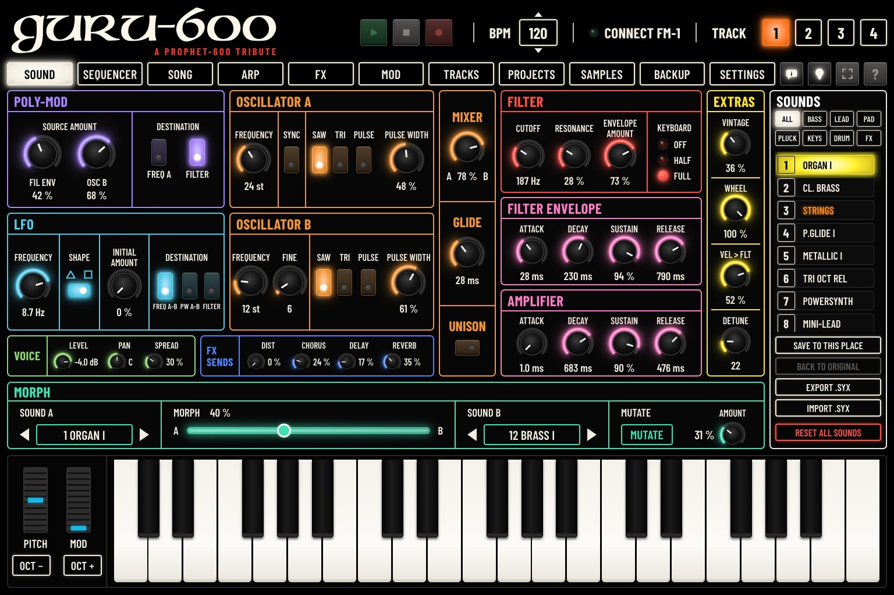
The editor’s pages do not follow the FM-1’s screen, and the FM-1 does not follow the editor’s: each keeps its own page. You can, for example, write a sequence on the editor’s SEQUENCER page while you shape a sound on the FM-1.
Les pages de l’éditeur ne suivent pas l’écran du FM-1, et inversement : chacun garde sa page. Vous pouvez par exemple écrire une séquence sur la page SÉQUENCEUR de l’éditeur pendant que vous réglez un son sur le FM-1.
Die Seiten des Editors folgen nicht dem Bildschirm des FM-1, und umgekehrt: Jeder behält seine eigene Seite. Sie können zum Beispiel auf der Seite SEQUENZER des Editors eine Sequenz schreiben, während Sie am FM-1 einen Sound formen.
Las páginas del editor no siguen la pantalla del FM-1, ni al revés: cada uno conserva su propia página. Puede, por ejemplo, escribir una secuencia en la página SECUENCIADOR del editor mientras ajusta un sonido en el FM-1.
Le pagine dell’editor non seguono lo schermo del FM-1, né viceversa: ognuno mantiene la propria pagina. Potete, per esempio, scrivere una sequenza nella pagina SEQUENCER dell’editor mentre regolate un suono sul FM-1.
编辑器的页面不会跟随 FM-1 的屏幕切换，FM-1 也不会跟随编辑器：两者各自停留在自己的页面上。例如，您可以在编辑器的 音序器 页面上编写音序，同时在 FM-1 上调整音色。
エディターのページは FM-1 の画面に連動せず、FM-1 もエディターに連動しません。それぞれが自分のページを保ちます。たとえば、FM-1 で音色を作りながら、エディターの シーケンサー ページでシーケンスを書くことができます。
It describes the editor page by page, in the order of its tabs. The FM-1 itself, its buttons and its screens are described in the Guru-600 user guide. The editor speaks the language chosen in SETTINGS › EDITOR › LANGUAGE (chapter 14): its pages, buttons and messages, and the FM-1’s menu. The names of the sound and sequencer settings stay in English, as on the FM-1’s screen; a tooltip translates them and says what they do.
Il décrit l’éditeur page par page, dans l’ordre de ses onglets. Le FM-1 lui-même, ses boutons et ses écrans sont décrits dans la notice du Guru-600. L’éditeur parle la langue choisie dans RÉGLAGES › ÉDITEUR › LANGUE (chapitre 14) : ses pages, ses boutons et ses messages, et le menu du FM-1. Les noms des réglages du son et du séquenceur restent en anglais, comme sur l’écran du FM-1 ; une infobulle les traduit et dit à quoi ils servent.
Er beschreibt den Editor Seite für Seite, in der Reihenfolge seiner Reiter. Der FM-1 selbst, seine Tasten und Bildschirme sind in der Guru-600-Anleitung beschrieben. Der Editor spricht die unter SETUP › EDITOR › SPRACHE gewählte Sprache (Kapitel 14): seine Seiten, Tasten und Meldungen sowie das Menü des FM-1. Die Namen der Klang- und Sequenzer-Einstellungen bleiben auf Englisch, wie auf dem Bildschirm des FM-1; ein Tooltip übersetzt sie und erklärt, wozu sie dienen.
Describe el editor página por página, en el orden de sus pestañas. El FM-1, sus botones y sus pantallas se describen en el manual del Guru-600. El editor habla el idioma elegido en AJUSTES › EDITOR › IDIOMA (capítulo 14): sus páginas, botones y mensajes, y el menú del FM-1. Los nombres de los ajustes del sonido y del secuenciador siguen en inglés, como en la pantalla del FM-1; una ayuda emergente los traduce y explica para qué sirven.
Descrive l’editor pagina per pagina, nell’ordine delle sue schede. L’FM-1, i suoi tasti e le sue schermate sono descritti nel manuale del Guru-600. L’editor parla la lingua scelta in IMPOSTAZIONI › EDITOR › LINGUA (capitolo 14): pagine, pulsanti e messaggi, e il menu dell’FM-1. I nomi delle impostazioni del suono e del sequencer restano in inglese, come sullo schermo dell’FM-1; un suggerimento li traduce e spiega a cosa servono.
本指南按标签页顺序逐页介绍编辑器。FM-1 本身、其按钮和屏幕在 Guru-600 用户指南中介绍。编辑器使用在 设置 › 编辑器 › 语言 中选择的语言（第 14 章）：页面、按钮和消息，以及 FM-1 的菜单。音色和音序器设置的名称保持英文，与 FM-1 屏幕一致；提示会翻译它们并说明其作用。
このガイドはエディターをタブの順に1 ページずつ説明します。FM-1 本体、ボタン、画面については Guru-600 ユーザーガイドで説明しています。エディターは 設定 › エディター › 言語 で選んだ言語で表示されます（第 14 章）：ページ、ボタン、メッセージ、そして FM-1 のメニュー。サウンドとシーケンサーの設定名は FM-1 の画面と同じく英語のままで、ツールチップが翻訳と用途を示します。
The screenshots in this guide show the editor in English. On your screen, it appears in the language you choose (chapter 14).
Les captures de ce guide montrent l’éditeur en anglais. Sur votre écran, il s’affiche dans la langue que vous choisissez (chapitre 14).
Die Bildschirmfotos in dieser Anleitung zeigen den Editor auf Englisch. Auf Ihrem Bildschirm erscheint er in der Sprache, die Sie wählen (Kapitel 14).
Las capturas de esta guía muestran el editor en inglés. En su pantalla aparece en el idioma que elija (capítulo 14).
Le schermate di questa guida mostrano l’editor in inglese. Sul vostro schermo appare nella lingua che scegliete (capitolo 14).
本指南中的截图显示的是英文版编辑器。在您的屏幕上，它会以您选择的语言显示（第 14 章）。
このガイドのスクリーンショットは英語のエディターです。お使いの画面では、選んだ言語で表示されます（第 14 章）。
In French, Spanish and Italian, the notes keep their letter (C, D, E…), as on the FM-1, and also show their name in solfège (do, ré, mi…).
En français, en espagnol et en italien, les notes gardent leur lettre (C, D, E…), comme sur le FM-1, et affichent aussi leur nom en solfège (do, ré, mi…).
Auf Französisch, Spanisch und Italienisch behalten die Noten ihren Buchstaben (C, D, E…), wie auf dem FM-1, und zeigen zusätzlich ihren Solmisationsnamen (do, ré, mi…).
En francés, español e italiano, las notas conservan su letra (C, D, E…), como en el FM-1, y muestran también su nombre en solfeo (do, re, mi…).
In francese, spagnolo e italiano, le note mantengono la loro lettera (C, D, E…), come sull’FM-1, e mostrano anche il nome in solfeggio (do, re, mi…).
在法语、西班牙语和意大利语界面中，音符保留其字母名（C、D、E…），与 FM-1 上一致，并同时显示唱名（do、re、mi…）。
フランス語、スペイン語、イタリア語では、音名は FM-1 と同じアルファベット（C、D、E…）のまま、ドレミの階名（do、ré、mi…）も表示されます。
The ? button at the top right of the editor opens this guide at the chapter of the page you are on.
Le bouton ? en haut à droite de l’éditeur ouvre ce guide au chapitre de la page où vous êtes.
Die Taste ? oben rechts im Editor öffnet diese Anleitung beim Kapitel der Seite, auf der Sie sich befinden.
El botón ?, arriba a la derecha del editor, abre esta guía en el capítulo de la página en la que se encuentra.
Il pulsante ? in alto a destra nell’editor apre questa guida al capitolo della pagina in cui ci si trova.
编辑器右上角的 ? 按钮会打开本指南中您当前所在页面的章节。
エディター右上の ? ボタンを押すと、表示中のページの章でこのガイドが開きます。
Afterwards, the editor connects by itself when it opens and when you plug the FM-1 in. Unplugged, the LED goes out and the label comes back to CONNECT FM-1; the values stay on screen.
Ensuite, l’éditeur se connecte tout seul à l’ouverture et quand vous branchez le FM-1. Débranché, le voyant s’éteint et l’étiquette revient à CONNECTER LE FM-1 ; les valeurs restent affichées.
Danach verbindet sich der Editor von selbst, wenn er geöffnet wird und wenn Sie den FM-1 anschließen. Wird er getrennt, erlischt die LED und die Beschriftung wechselt zurück zu FM-1 VERBINDEN; die Werte bleiben auf dem Bildschirm.
Después, el editor se conecta por sí solo al abrirse y al conectar el FM-1. Al desconectarlo, el LED se apaga y la etiqueta vuelve a CONECTAR EL FM-1; los valores permanecen en pantalla.
In seguito, l’editor si collega da solo all’apertura e quando si collega l’FM-1. Se l’FM-1 viene scollegato, la spia si spegne e l’etichetta torna a COLLEGA L'FM-1; i valori restano sullo schermo.
此后，编辑器在打开时以及插上 FM-1 时会自动连接。拔下后，指示灯熄灭，标签恢复为 连接 FM-1；数值仍保留在屏幕上。
以降は、エディターを開いたときと FM-1 を接続したときに、自動的に接続されます。ケーブルを抜くと LED が消え、表示は FM-1 に接続 に戻ります。値は画面に残ります。
Open Guru-600.app: the editor connects to it as to an FM-1, and you hear it on the Mac. Everything in this guide works with it, the FM-1 left aside.
Ouvrez Guru-600.app : l’éditeur s’y connecte comme à un FM-1, et vous l’entendez sur le Mac. Tout ce que décrit ce guide fonctionne avec elle, sans le FM-1.
Öffnen Sie Guru-600.app: Der Editor verbindet sich mit ihr wie mit einem FM-1, und Sie hören sie auf dem Mac. Alles in dieser Anleitung funktioniert damit, auch ohne FM-1.
Abra Guru-600.app: el editor se conecta a ella como a un FM-1, y la oye en el Mac. Todo lo que describe esta guía funciona con ella, sin el FM-1.
Aprire Guru-600.app: l’editor vi si collega come a un FM-1, e la si sente sul Mac. Tutto ciò che descrive questa guida funziona con essa, anche senza l’FM-1.
打开 Guru-600.app：编辑器会像连接 FM-1 一样连接到它，您可以在 Mac 上听到声音。本指南介绍的所有功能都可以在没有 FM-1 的情况下使用它。
Guru-600.app を開くと、エディターは FM-1 と同じようにそれに接続し、Mac で音を聴けます。このガイドの内容はすべて、FM-1 がなくてもそれで使えます。
Every page can be explored without the FM-1: it shows example values, and the knobs, switches and lists move. Nothing is kept: what needs the FM-1 (saving, loading, playing, sending) says Connect the FM-1 first.
Chaque page peut être découverte sans le FM-1 : elle affiche des valeurs d’exemple, et les boutons, interrupteurs et listes bougent. Rien n’est gardé : ce qui demande le FM-1 (enregistrer, charger, jouer, envoyer) indique Branchez d’abord le FM-1.
Jede Seite lässt sich ohne den FM-1 erkunden: Sie zeigt Beispielwerte, und Regler, Schalter und Listen bewegen sich. Nichts wird behalten: Was den FM-1 braucht (Speichern, Laden, Abspielen, Senden), meldet Schließen Sie zuerst den FM-1 an.
Todas las páginas pueden explorarse sin el FM-1: muestran valores de ejemplo, y los potenciómetros, interruptores y listas se mueven. No se conserva nada: lo que necesita el FM-1 (guardar, cargar, tocar, enviar) indica Conecte primero el FM-1.
Ogni pagina può essere esplorata senza l’FM-1: mostra valori di esempio, e manopole, interruttori ed elenchi si muovono. Non viene conservato nulla: ciò che richiede l’FM-1 (salvare, caricare, suonare, inviare) indica Collegare prima l’FM-1.
不连接 FM-1 也可以浏览每个页面：页面显示示例数值，旋钮、开关和列表都可以操作。但不会保存任何内容：需要 FM-1 的操作（保存、载入、播放、发送）会显示请先连接 FM-1。
FM-1 がなくても、すべてのページを試せます。例の値が表示され、ノブ、スイッチ、リストも動きます。ただし何も保持されません。FM-1 が必要な操作（保存、読み込み、演奏、送信）では先に FM-1 を接続してください。と表示されます。
The top (header and tabs) and the bottom (keyboard) never change; the page in between is the one of the tab chosen. The editor keeps the proportions of the panel whatever the size of the window: the rest of the window stays black.
Le haut (en-tête et onglets) et le bas (clavier) ne changent jamais ; entre les deux, la page de l’onglet choisi. L’éditeur garde les proportions de la façade quelle que soit la taille de la fenêtre : le reste de la fenêtre reste noir.
Der obere Teil (Kopfzeile und Tabs) und der untere Teil (Tastatur) ändern sich nie; dazwischen liegt die Seite des gewählten Tabs. Der Editor behält die Proportionen des Bedienfelds bei, unabhängig von der Fenstergröße: Der Rest des Fensters bleibt schwarz.
La parte superior (cabecera y pestañas) y la inferior (teclado) no cambian nunca; entre ambas, la página de la pestaña elegida. El editor mantiene las proporciones del panel sea cual sea el tamaño de la ventana: el resto de la ventana queda en negro.
La parte superiore (intestazione e schede) e quella inferiore (tastiera) non cambiano mai; in mezzo c’è la pagina della scheda scelta. L’editor mantiene le proporzioni del pannello qualunque sia la dimensione della finestra: il resto della finestra rimane nero.
顶部（顶栏和标签页）和底部（键盘）始终不变；中间是所选标签页的页面。无论窗口大小如何，编辑器都保持面板的比例：窗口的其余部分保持黑色。
上部（ヘッダーとタブ）と下部（鍵盤）は常に同じで、その間に選んだタブのページが表示されます。エディターはウィンドウのサイズにかかわらずパネルの縦横比を保ち、ウィンドウの残りの部分は黒く表示されます。
| ControlCommandeBedienelementMandoComando控制器操作子 | What it doesCe qu’elle faitFunktionQué haceFunzione功能機能 |
|---|---|
| ▶▶▶▶▶▶▶ | PLAY: starts the four tracks together. Lit green while the FM-1 plays.PLAY : lance les quatre pistes ensemble. Éclairé en vert pendant la lecture.PLAY: startet die vier Spuren gemeinsam. Leuchtet grün, während der FM-1 spielt.PLAY: pone en marcha las cuatro pistas a la vez. Se ilumina en verde mientras el FM-1 toca.PLAY: avvia insieme le quattro tracce. Acceso in verde mentre l’FM-1 suona.PLAY：同时启动四个音轨。FM-1 播放时亮绿色。PLAY：4つのトラックを同時に再生します。FM-1 の再生中は緑に点灯します。 |
| ■■■■■■■ | STOP: stops them.STOP : les arrête.STOP: stoppt sie.STOP: las detiene.STOP: le ferma.STOP：停止播放。STOP：再生を停止します。 |
| ●●●●●●● | REC: arms the selected track for recording. Lit red while it is armed.REC : arme la piste choisie pour l’enregistrement. Éclairé en rouge tant qu’elle est armée.REC: schaltet die ausgewählte Spur auf Aufnahmebereitschaft. Leuchtet rot, solange sie aufnahmebereit ist.REC: prepara la pista seleccionada para la grabación. Se ilumina en rojo mientras está preparada.REC: attiva la registrazione sulla traccia selezionata. Acceso in rosso finché è attivata.REC：使所选音轨进入录音预备状态。预备期间亮红色。REC：選択中のトラックを録音待機にします。録音待機中は赤く点灯します。 |
| BPMBPMBPMBPMBPMBPMBPM | The tempo, 40 to 240. Click ▲ or ▼ (held: it runs); or drag up or down on the box (Shift: finer), or scroll over it; a double click: 120. The box flashes on each beat while the FM-1 plays, the first of the bar in orange.Le tempo, de 40 à 240. Cliquez sur ▲ ou ▼ (maintenu : il défile) ; ou glissez vers le haut ou le bas sur le cadre (Maj : plus fin), ou faites défiler au-dessus ; un double clic : 120. Le cadre clignote à chaque temps pendant la lecture, le premier de la mesure en orange.Das Tempo, 40 bis 240. Klicken Sie auf ▲ oder ▼ (gehalten: Der Wert läuft weiter); oder ziehen Sie auf dem Feld nach oben oder unten (Umschalt: feiner), oder scrollen Sie darüber; ein Doppelklick: 120. Das Feld blinkt bei jedem Schlag, während der FM-1 spielt, der erste des Takts in Orange.El tempo, de 40 a 240. Haga clic en ▲ o ▼ (mantenido: avanza de forma continua); o arrastre hacia arriba o hacia abajo sobre el recuadro (Mayús: más fino), o use la rueda del ratón sobre él; un doble clic: 120. El recuadro parpadea en cada tiempo mientras el FM-1 toca, el primero del compás en naranja.Il tempo, da 40 a 240. Fare clic su ▲ o ▼ (tenendo premuto: scorre); oppure trascinare in alto o in basso sul riquadro (Maiusc: più fine), o scorrere sopra di esso; un doppio clic: 120. Il riquadro lampeggia a ogni battito mentre l’FM-1 suona, il primo della battuta in arancione.速度，40 至 240。点击 ▲ 或 ▼（按住：连续变化）；或在框上向上或向下拖动（Shift：更精细），或在其上滚动；双击：120。FM-1 播放时，该框随每一拍闪烁，小节的第一拍为橙色。テンポ（40〜240）。▲ または ▼ をクリックします（長押しで連続して変化）。ボックスの上で上下にドラッグする（Shift：細かく）か、その上でスクロールしても変更できます。ダブルクリックで120 になります。FM-1 の再生中はボックスが拍ごとに点滅し、小節の1拍目はオレンジで点滅します。 |
| CONNECT FM-1CONNECTER LE FM-1FM-1 VERBINDENCONECTAR EL FM-1COLLEGA L'FM-1连接 FM-1FM-1 に接続 | The connection (chapter 2). FM-1 CONNECTED with its LED lit green: connected.La connexion (chapitre 2). FM-1 CONNECTÉ avec son voyant vert allumé : connecté.Die Verbindung (Kapitel 2). FM-1 VERBUNDEN mit grün leuchtender LED: verbunden.La conexión (capítulo 2). FM-1 CONECTADO con su LED encendido en verde: conectado.Il collegamento (capitolo 2). FM-1 COLLEGATO con la spia accesa in verde: collegato.连接（第2章）。FM-1 已连接 且指示灯亮绿色：已连接。接続（第2章）。FM-1 接続中 と表示され、LED が緑に点灯していれば接続されています。 |
| TRACK 1 2 3 4PISTE 1 2 3 4SPUR 1 2 3 4PISTA 1 2 3 4TRACCIA 1 2 3 4音轨 1 2 3 4トラック 1 2 3 4 | The selected track, lit orange: the pages show and change it, and the keyboard plays it.La piste choisie, éclairée en orange : les pages la montrent et la modifient, et le clavier la joue.Die ausgewählte Spur, orange leuchtend: Die Seiten zeigen und ändern sie, und die Tastatur spielt sie.La pista seleccionada, iluminada en naranja: las páginas la muestran y la modifican, y el teclado la toca.La traccia selezionata, accesa in arancione: le pagine la mostrano e la modificano, e la tastiera la suona.所选音轨，亮橙色：各页面显示并修改该音轨，键盘演奏该音轨。選択中のトラック（オレンジに点灯）。各ページはこのトラックを表示・変更し、鍵盤はこのトラックを演奏します。 |
SOUND, SEQUENCER, SONG, ARP, FX, MOD, TRACKS, PROJECTS, SAMPLES, BACKUP, SETTINGS: click one to show its page. Each has its chapter in this guide.
SON, SÉQUENCEUR, MORCEAU, ARP, FX, MOD, PISTES, PROJETS, SAMPLES, SAUVEGARDE, RÉGLAGES : cliquez sur l’un d’eux pour afficher sa page. Chacun a son chapitre dans ce guide.
KLANG, SEQUENZER, SONG, ARP, FX, MOD, SPUREN, PROJEKTE, SAMPLES, SICHERUNG, SETUP: Klicken Sie auf einen Tab, um seine Seite anzuzeigen. Jeder hat sein Kapitel in dieser Anleitung.
SONIDO, SECUENCIADOR, CANCIÓN, ARP, FX, MOD, PISTAS, PROYECTOS, MUESTRAS, COPIA, AJUSTES: haga clic en una para mostrar su página. Cada una tiene su capítulo en esta guía.
SUONO, SEQUENCER, BRANO, ARP, FX, MOD, TRACCE, PROGETTI, CAMPIONI, BACKUP, IMPOSTAZIONI: fare clic su una scheda per mostrarne la pagina. Ciascuna ha il suo capitolo in questa guida.
音色、音序器、乐曲、ARP、FX、MOD、音轨、项目、采样、备份、设置：点击其中一个即显示其页面。每个页面在本指南中都有对应章节。
サウンド、シーケンサー、ソング、ARP、FX、MOD、トラック、プロジェクト、サンプル、バックアップ、設定：クリックするとそのページが表示されます。それぞれにこのガイドの章があります。
| ControlCommandeBedienelementMandoComando控制器操作子 | What it doesCe qu’elle faitFunktionQué haceFunzione功能機能 |
|---|---|
| LIT / FLATLIT / FLATLIT / FLATLIT / FLATLIT / FLATLIT / FLATLIT / FLAT | The bulb button. LIT or FLAT: the lights glow as on a lit panel, or plain colors. Kept by the browser (also SETTINGS › EDITOR › LIGHTING).Le bouton ampoule. LIT ou FLAT : les voyants brillent comme sur une façade éclairée, ou des couleurs unies. Gardé par le navigateur (aussi RÉGLAGES › ÉDITEUR › ÉCLAIRAGE).Die Glühbirnen-Taste. LIT oder FLAT: Die Leuchten glühen wie auf einem beleuchteten Bedienfeld, oder einfache Farben. Wird vom Browser gespeichert (auch SETUP › EDITOR › BELEUCHTUNG).El botón de la bombilla. LIT o FLAT: las luces brillan como en un panel iluminado, o colores planos. Lo conserva el navegador (también en AJUSTES › EDITOR › ILUMINACIÓN).Il pulsante a lampadina. LIT o FLAT: le spie brillano come su un pannello illuminato, oppure colori pieni. Conservato dal browser (anche IMPOSTAZIONI › EDITOR › ILLUMINAZIONE).灯泡按钮。LIT 或 FLAT：灯光像背光面板一样发光，或显示为纯色。由浏览器记住（也可在 设置 › 编辑器 › 照明 中设置）。電球のボタン。LIT または FLAT：照明付きのパネルのようにライトが光るか、フラットな色になります。設定はブラウザーに保持されます（設定 › エディター › ライティング でも設定できます）。 |
| FULL SCREENFULL SCREENFULL SCREENFULL SCREENFULL SCREENFULL SCREENFULL SCREEN | The button with four corners: full screen, and back. Also F11, Alt+Enter or a double click on the logo; Esc leaves it.Le bouton aux quatre coins : plein écran, et retour. Aussi F11, Alt+Entrée ou un double clic sur le logo ; Échap en sort.Die Taste mit den vier Ecken: Vollbild und zurück. Auch F11, Alt+Eingabe oder ein Doppelklick auf das Logo; Esc beendet das Vollbild.El botón de las cuatro esquinas: pantalla completa, y vuelta. También F11, Alt+Intro o un doble clic en el logotipo; Esc sale de ella.Il pulsante con quattro angoli: schermo intero, e ritorno. Anche F11, Alt+Invio o un doppio clic sul logo; Esc lo chiude.四角按钮：全屏及退出全屏。也可按 F11、Alt+Enter 或双击标志；按 Esc 退出。四隅のマークのボタン：フル・スクリーン表示と、その解除。F11、Alt+Enter、ロゴのダブルクリックでも切り替えられます。Esc で解除します。 |
| ? (HELP)? (HELP)? (HELP)? (HELP)? (HELP)? (HELP)? (HELP) | Opens this guide at the chapter of the page shown.Ouvre ce guide au chapitre de la page affichée.Öffnet diese Anleitung beim Kapitel der angezeigten Seite.Abre esta guía en el capítulo de la página mostrada.Apre questa guida al capitolo della pagina mostrata.打开本指南中当前页面的章节。表示中のページの章でこのガイドを開きます。 |
| TOOLTIPSTOOLTIPSTOOLTIPSTOOLTIPSTOOLTIPSTOOLTIPSTOOLTIPS | The speech-bubble button, left of the bulb: switches the tooltips on or off. Hovering a setting shows, in the language chosen, its translation and what it does; hovering a button of the editor, what it does. Kept by the browser.Le bouton bulle, à gauche de l’ampoule : active ou coupe les infobulles. Au survol d’un réglage, l’infobulle donne, dans la langue choisie, sa traduction et à quoi il sert ; au survol d’un bouton de l’éditeur, à quoi il sert. Gardé par le navigateur.Die Taste mit der Sprechblase, links von der Glühbirne: schaltet die Tooltips ein oder aus. Über einer Einstellung zeigt der Tooltip in der gewählten Sprache ihre Übersetzung und wozu sie dient; über einer Taste des Editors, wozu sie dient. Vom Browser gespeichert.El botón con el bocadillo, a la izquierda de la bombilla: activa o desactiva las ayudas emergentes. Al pasar sobre un ajuste, la ayuda muestra, en el idioma elegido, su traducción y para qué sirve; sobre un botón del editor, para qué sirve. Lo guarda el navegador.Il pulsante a fumetto, a sinistra della lampadina: attiva o disattiva i suggerimenti. Passando su un’impostazione, il suggerimento mostra, nella lingua scelta, la sua traduzione e a cosa serve; su un pulsante dell’editor, a cosa serve. Memorizzato dal browser.灯泡左侧的对话气泡按钮：打开或关闭提示。悬停在某个设置上时，提示会用所选语言显示其翻译和作用；悬停在编辑器的按钮上时，显示其作用。由浏览器记住。電球の左にある吹き出しボタン：ツールチップのオン／オフ。設定の上にポインターを置くと、選んだ言語でその訳と用途が表示され、エディターのボタンの上ではその用途が表示されます。ブラウザーに保存されます。 |
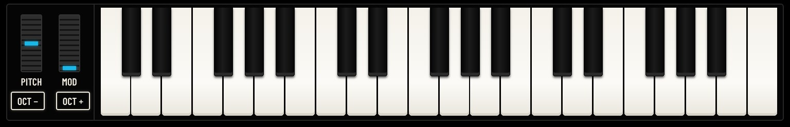
| Computer keyTouche de l’ordinateurComputertasteTecla del ordenadorTasto del computer电脑按键コンピューターのキー | PlaysJoueSpieltTocaSuona演奏演奏する内容 |
|---|---|
| A W S E D F T G Y H U J K O L P ;A W S E D F T G Y H U J K O L P ;A W S E D F T G Y H U J K O L P ;A W S E D F T G Y H U J K O L P ;A W S E D F T G Y H U J K O L P ;A W S E D F T G Y H U J K O L P ;A W S E D F T G Y H U J K O L P ; | the notes, from C4 (A) up to E5 (;)les notes, du C4 (A) au E5 (;)die Noten, von C4 (A) bis E5 (;)las notas, de C4 (A) a E5 (;)le note, da C4 (A) a E5 (;)音符，从 C4（A）到 E5（;）ノート（C4（A）〜E5（;）） |
| ← / →← / →← / →← / →← / →← / →← / → | OCT − / OCT +OCT − / OCT +OCT − / OCT +OCT − / OCT +OCT − / OCT +OCT − / OCT +OCT − / OCT + |
| ↑ / ↓↑ / ↓↑ / ↓↑ / ↓↑ / ↓↑ / ↓↑ / ↓ | SOUND page: the sound before / after in SOUNDS (the family shown), loaded at oncepage SON : le son précédent / suivant dans SONS (la famille affichée), chargé aussitôtSeite KLANG: der vorige / nächste Sound in KLÄNGE (die angezeigte Familie), sofort geladenPágina SONIDO: el sonido anterior / siguiente en SONIDOS (la familia mostrada), cargado al instantePagina SUONO: il suono precedente / successivo in SUONI (la famiglia mostrata), caricato subito音色 页面：音色 中的上一个 / 下一个音色（当前显示的类别），立即载入サウンド ページ：サウンド の前 / 次のサウンド（表示中のファミリー）をすぐに読み込みます |
The letters are positions on a QWERTY keyboard; on an AZERTY keyboard, use the keys in the same positions: Q Z S E D… for the notes. They do not play while you type in a field.
Les lettres suivent la position des touches d’un clavier QWERTY ; sur un clavier AZERTY, ce sont les touches situées aux mêmes endroits : Q Z S E D… pour les notes. Elles ne jouent pas pendant la saisie dans un champ.
Die Buchstaben sind Positionen auf einer QWERTY-Tastatur; auf einer QWERTZ- oder AZERTY-Tastatur gelten die Tasten an denselben Stellen: auf AZERTY Q Z S E D… für die Noten. Während der Eingabe in ein Feld spielen sie nicht.
Las letras son posiciones de un teclado QWERTY; en un teclado AZERTY, use las teclas situadas en los mismos lugares: Q Z S E D… para las notas. No suenan mientras escribe en un campo.
Le lettere sono posizioni su una tastiera QWERTY; su una tastiera AZERTY, usare i tasti nelle stesse posizioni: Q Z S E D… per le note. Non suonano mentre si scrive in un campo.
这些字母对应 QWERTY 键盘上的位置；在 AZERTY 键盘上，请使用相同位置的按键：音符为 Q Z S E D…。在输入框中输入时不会发声。
文字は QWERTY キーボード上の位置を表します。AZERTY キーボードでは同じ位置のキーを使います：ノートは Q Z S E D… です。入力欄に入力している間は鳴りません。
| ControlCommandeBedienelementMandoComando控制器操作子 | GestureGesteGesteGestoGesto手势操作 |
|---|---|
| KnobBouton rotatifReglerPotenciómetroManopola旋钮ノブ | Drag up (more) or down (less); Shift held: finer. Or scroll over it. Double click: its usual value.Glissez vers le haut (plus) ou le bas (moins) ; Maj maintenue : plus fin. Ou faites défiler au-dessus. Double clic : sa valeur habituelle.Nach oben (mehr) oder unten (weniger) ziehen; Umschalt gehalten: feiner. Oder darüber scrollen. Doppelklick: sein üblicher Wert.Arrastre hacia arriba (más) o hacia abajo (menos); con Mayús pulsada: más fino. O use la rueda del ratón sobre él. Doble clic: su valor habitual.Trascinare in alto (di più) o in basso (di meno); tenendo premuto Maiusc: più fine. Oppure scorrere sopra di essa. Doppio clic: il suo valore abituale.向上拖动（增大）或向下拖动（减小）；按住 Shift：更精细。也可在其上滚动。双击：恢复其常用值。上にドラッグすると増え、下にドラッグすると減ります。Shift を押したままにすると細かく調整できます。その上でスクロールしても操作できます。ダブルクリックで標準の値に戻ります。 |
| Switch, option, buttonInterrupteur, option, boutonSchalter, Option, TasteInterruptor, opción, botónInterruttore, opzione, pulsante开关、选项、按钮スイッチ、オプション、ボタン | Click. A lit one is on, or chosen.Cliquez. Allumé : activé, ou choisi.Klicken. Leuchtend: eingeschaltet oder ausgewählt.Haga clic. Encendido: activado o elegido.Fare clic. Acceso: attivo, o scelto.点击。亮起表示已开启或已选中。クリックします。点灯しているものがオン、または選択中です。 |
| Field ◀ value ▶Champ ◀ valeur ▶Feld ◀ Wert ▶Campo ◀ valor ▶Campo ◀ valore ▶字段 ◀ 数值 ▶欄 ◀ 値 ▶ | Click an arrow, or scroll over the field.Cliquez sur une flèche, ou faites défiler au-dessus du champ.Auf einen Pfeil klicken oder über dem Feld scrollen.Haga clic en una flecha, o use la rueda del ratón sobre el campo.Fare clic su una freccia, o scorrere sopra il campo.点击箭头，或在字段上滚动。矢印をクリックするか、欄の上でスクロールします。 |
| Grey buttonBouton grisGraue TasteBotón grisPulsante grigio灰色按钮グレーのボタン | Not available now (nothing to do, or the FM-1 is needed).Indisponible pour l’instant (rien à faire, ou le FM-1 est nécessaire).Derzeit nicht verfügbar (nichts zu tun, oder der FM-1 wird benötigt).No disponible por ahora (no hay nada que hacer, o se necesita el FM-1).Non disponibile per ora (niente da fare, oppure serve l’FM-1).当前不可用（无可执行的操作，或需要 FM-1）。現在は使用できません（実行する内容がないか、FM-1 が必要です）。 |
A short message at the bottom of the page says what was done, or why it was not (it goes away by itself). Before anything that replaces or erases, the browser asks for a confirmation: OK goes on, Cancel changes nothing.
Un court message en bas de la page dit ce qui a été fait, ou pourquoi ce ne l’a pas été (il disparaît de lui-même). Avant tout ce qui remplace ou efface, le navigateur demande confirmation : OK continue, Annuler ne change rien.
Eine kurze Meldung unten auf der Seite sagt, was getan wurde, oder warum nicht (sie verschwindet von selbst). Vor allem, was ersetzt oder löscht, bittet der Browser um Bestätigung: OK fährt fort, Abbrechen ändert nichts.
Un breve mensaje en la parte inferior de la página indica lo que se ha hecho, o por qué no se ha hecho (desaparece por sí solo). Antes de cualquier acción que sustituya o borre, el navegador pide una confirmación: Aceptar continúa, Cancelar no cambia nada.
Un breve messaggio in fondo alla pagina indica ciò che è stato fatto, o perché non lo è stato (scompare da solo). Prima di qualsiasi operazione che sostituisce o cancella, il browser chiede una conferma: OK prosegue, Annulla non cambia nulla.
页面底部的简短提示会说明已完成的操作，或未能完成的原因（会自动消失）。在任何替换或删除操作之前，浏览器会请求确认：确定继续，取消不做任何更改。
ページ下部に短いメッセージが表示され、実行した内容、または実行できなかった理由を知らせます（メッセージは自動的に消えます）。置き換えや消去を伴う操作の前には、ブラウザーが確認を求めます。OK で続行し、キャンセルでは何も変更されません。
The SOUND page shows the sound of the selected track on a panel inspired by the Prophet-600: every knob and switch of the original, plus what the Guru-600 adds (VOICE, FX SENDS, EXTRAS, MORPH). A change is heard at once on the FM-1. On the right, SOUNDS holds every sound the FM-1 can play, and saves and exchanges the 255 P600 sounds.
La page SON présente le son de la piste choisie sur une façade inspirée du Prophet-600 : chaque bouton et chaque interrupteur de l’original, plus ce qu’ajoute le Guru-600 (VOICE, FX SENDS, EXTRAS, MORPH). Un changement s’entend aussitôt sur le FM-1. À droite, SONS contient tous les sons que peut jouer le FM-1, et enregistre et échange les 255 sons P600.
Die Seite KLANG zeigt den Sound der gewählten Spur auf einem vom Prophet-600 inspirierten Bedienfeld: jeden Regler und Schalter des Originals, dazu das, was der Guru-600 ergänzt (VOICE, FX SENDS, EXTRAS, MORPH). Jede Änderung ist sofort auf dem FM-1 zu hören. Rechts enthält KLÄNGE alle Sounds, die der FM-1 spielen kann, und speichert und tauscht die 255 P600-Sounds.
La página SONIDO muestra el sonido de la pista elegida en un panel inspirado en el Prophet-600: cada mando e interruptor del original, más lo que añade el Guru-600 (VOICE, FX SENDS, EXTRAS, MORPH). Cada cambio se oye al instante en el FM-1. A la derecha, SONIDOS contiene todos los sonidos que puede tocar el FM-1, y guarda e intercambia los 255 sonidos P600.
La pagina SUONO mostra il suono della traccia scelta su un pannello ispirato al Prophet-600: ogni manopola e interruttore dell’originale, più ciò che aggiunge il Guru-600 (VOICE, FX SENDS, EXTRAS, MORPH). Ogni modifica si sente subito sull’FM-1. A destra, SUONI contiene tutti i suoni che l’FM-1 può suonare, e salva e scambia i 255 suoni P600.
音色 页面在一块受 Prophet-600 启发的面板上显示所选音轨的音色：原机的每个旋钮和开关，以及 Guru-600 增加的部分（VOICE、FX SENDS、EXTRAS、MORPH）。每次更改都会立即在 FM-1 上听到。右侧的 音色 包含 FM-1 能演奏的所有音色，并可保存和交换 255 个 P600 音色。
サウンド ページは、選択したトラックのサウンドを Prophet-600 に着想を得たパネルで表示します。オリジナルのすべてのノブとスイッチに加え、Guru-600 が追加した機能（VOICE、FX SENDS、EXTRAS、MORPH）があります。変更はすぐに FM-1 で聞こえます。右側の サウンド には FM-1 が演奏できるすべてのサウンドがあり、255 の P600 サウンドの保存と交換もここで行います。
A change affects the track’s sound, not the saved sound. To keep it: SAVE TO THIS PLACE (below), or STORE THE TRACK’S SOUND on the PROJECTS page (chapter 11).
Un changement modifie le son de la piste, pas le son enregistré. Pour le garder : ENREGISTRER ICI (plus bas), ou STORE THE TRACK’S SON sur la page PROJETS (chapitre 11).
Eine Änderung betrifft den Sound der Spur, nicht den gespeicherten Sound. Um sie zu behalten: HIER SPEICHERN (unten) oder STORE THE TRACK’S KLANG auf der Seite PROJEKTE (Kapitel 11).
Un cambio afecta al sonido de la pista, no al sonido guardado. Para conservarlo: GUARDAR AQUÍ (más abajo), o STORE THE TRACK’S SONIDO en la página PROYECTOS (capítulo 11).
Una modifica cambia il suono della traccia, non il suono salvato. Per conservarla: SALVA QUI (più sotto), oppure STORE THE TRACK’S SUONO nella pagina PROGETTI (capitolo 11).
更改影响的是音轨的音色，而不是已保存的音色。若要保留：使用 保存到此位置（见下文），或 项目 页面上的 STORE THE TRACK’S 音色（第11章）。
変更はトラックのサウンドに反映されますが、保存されたサウンドは変わりません。変更を残すには、この位置に保存（下記）、または プロジェクト ページの STORE THE TRACK’S サウンド（第11章）を使います。
When the track plays a sound of the FM-1 (another engine than P600), the panel, MORPH and MUTATE dim and stay still, and a message says which engine the track plays: they set the Guru-600 sounds only. Click a Guru-600 sound (1 to 255) in SOUNDS: the track switches to P600 and plays it. The keyboard still shows the keys played on the FM-1, and the other pages work with every engine.
Quand la piste joue un son du FM-1 (un autre moteur que P600), la façade, MORPH et MUTATE s’assombrissent et restent inactifs, et un message indique le moteur que joue la piste : ils ne règlent que les sons Guru-600. Cliquez sur un son Guru-600 (1 à 255) dans SONS : la piste passe en P600 et le joue. Le clavier montre toujours les touches jouées sur le FM-1, et les autres pages fonctionnent avec tous les moteurs.
Spielt die Spur einen Sound des FM-1 (eine andere Klangerzeugung als P600), werden Bedienfeld, MORPH und MUTATE abgedunkelt und reagieren nicht, und eine Meldung zeigt, welche Klangerzeugung die Spur spielt: Sie stellen nur die Guru-600-Sounds ein. Klicken Sie in KLÄNGE auf einen Guru-600-Sound (1 bis 255): Die Spur wechselt zu P600 und spielt ihn. Die Tastatur zeigt weiterhin die auf dem FM-1 gespielten Tasten, und die anderen Seiten funktionieren mit jeder Klangerzeugung.
Cuando la pista toca un sonido del FM-1 (otro motor distinto de P600), el panel, MORPH y MUTATE se oscurecen y quedan inactivos, y un mensaje indica qué motor toca la pista: solo ajustan los sonidos Guru-600. Haga clic en un sonido Guru-600 (1 a 255) en SONIDOS: la pista pasa a P600 y lo toca. El teclado sigue mostrando las teclas tocadas en el FM-1, y las demás páginas funcionan con todos los motores.
Quando la traccia suona un suono dell’FM-1 (un motore diverso da P600), il pannello, MORPH e MUTATE si oscurano e restano inattivi, e un messaggio indica quale motore suona la traccia: regolano solo i suoni Guru-600. Fare clic su un suono Guru-600 (da 1 a 255) in SUONI: la traccia passa a P600 e lo suona. La tastiera mostra comunque i tasti suonati sull’FM-1, e le altre pagine funzionano con tutti i motori.
当音轨演奏 FM-1 的音色（P600 以外的引擎）时，面板、MORPH 和 MUTATE 会变暗并停止响应，并有消息显示该音轨使用的引擎：它们只用于设置 Guru-600 音色。在 音色 中点击一个 Guru-600 音色（1 至 255）：音轨切换到 P600 并演奏该音色。键盘仍会显示在 FM-1 上弹奏的琴键，其他页面适用于所有引擎。
トラックが FM-1 のサウンド（P600 以外のエンジン）を演奏しているときは、パネル、MORPH、MUTATE が暗くなって操作できなくなり、トラックが演奏しているエンジンがメッセージで表示されます。これらは Guru-600 サウンド専用です。サウンド で Guru-600 サウンド（1〜255）をクリックすると、トラックが P600 に切り替わってそのサウンドを演奏します。鍵盤には FM-1 で弾いたキーが引き続き表示され、ほかのページはすべてのエンジンで使えます。
In each voice, two sources modulate oscillator A’s pitch and/or the filter.
Dans chaque voix, deux sources modulent la hauteur de l’oscillateur A et/ou le filtre.
In jeder Stimme modulieren zwei Quellen die Tonhöhe von Oszillator A und/oder das Filter.
En cada voz, dos fuentes modulan la afinación del oscilador A y/o el filtro.
In ogni voce, due sorgenti modulano l’intonazione dell’oscillatore A e/o il filtro.
在每个复音中，两个调制源调制振荡器 A 的音高和/或滤波器。
各ボイスの中で、2つのソースがオシレーター A のピッチやフィルターを変調します。
| ControlCommandeBedienelementMandoComando控制器操作子 | What it doesCe qu’elle faitFunktionQué haceFunzione功能機能 | ValuesValeursWerteValoresValori取值値 |
|---|---|---|
| FIL ENVFIL ENVFIL ENVFIL ENVFIL ENVFIL ENVFIL ENV | FILTER ENV: how much the filter envelope modulates the destination.FILTER ENV : quantité de modulation par l’enveloppe du filtre.FILTER ENV: wie stark die Filterhüllkurve das Ziel moduliert.FILTER ENV: cuánto modula la envolvente del filtro el destino.FILTER ENV: quanto l’inviluppo del filtro modula la destinazione.FILTER ENV：滤波器包络对目标的调制量。FILTER ENV：フィルター・エンベロープが変調先をどれだけ変調するか。 | 0–100 %0–100 %0–100 %0–100 %0–100 %0–100%0–100% |
| OSC BOSC BOSC BOSC BOSC BOSC BOSC B | OSC B: how much oscillator B modulates the destination, at audio speed: metallic, bell-like sounds.OSC B : quantité de modulation par l’oscillateur B, à vitesse audio : sons métalliques, cloches.OSC B: wie stark Oszillator B das Ziel moduliert, mit Audiogeschwindigkeit: metallische, glockenartige Klänge.OSC B: cuánto modula el oscilador B el destino, a velocidad de audio: sonidos metálicos, de campana.OSC B: quanto l’oscillatore B modula la destinazione, a velocità audio: suoni metallici, di campana.OSC B：振荡器 B 以音频速率对目标的调制量：金属感、钟声般的声音。OSC B：オシレーター B がオーディオ・レートで変調先をどれだけ変調するか。金属的な音やベルのような音になります。 | 0–100 %0–100 %0–100 %0–100 %0–100 %0–100%0–100% |
| FREQ A, FILTERFREQ A, FILTREFREQ A, FILTERFREQ A, FILTROFREQ A, FILTROFREQ A, 滤波器FREQ A, フィルタ | DESTINATION: where the modulation goes. Both lit: both; both unlit: nowhere.DESTINATION : où va la modulation. Les deux allumés : les deux ; les deux éteints : nulle part.DESTINATION: wohin die Modulation geht. Beide leuchtend: beide; beide aus: nirgendwohin.DESTINATION: adónde va la modulación. Los dos encendidos: a ambos; los dos apagados: a ninguno.DESTINATION: dove va la modulazione. Entrambi accesi: entrambe; entrambi spenti: da nessuna parte.DESTINATION：调制的去向。两个都亮：两者都调制；两个都不亮：不调制。DESTINATION：モジュレーションの行き先。両方点灯：両方にかかります。両方消灯：どこにもかかりません。 | OFF / ONOFF / ONOFF / ONOFF / ONOFF / ONOFF / ONOFF / ON |
| ControlCommandeBedienelementMandoComando控制器操作子 | What it doesCe qu’elle faitFunktionQué haceFunzione功能機能 | ValuesValeursWerteValoresValori取值値 |
|---|---|---|
| FREQUENCYFRÉQUENCEFREQUENZFRECUENCIAFREQUENZA频率周波数 | The LFO’s speed.La vitesse du LFO.Die Geschwindigkeit des LFO.La velocidad del LFO.La velocità dell’LFO.LFO 的速度。LFO のスピード。 | 0.1 … 40 Hz0,1 … 40 Hz0,1 … 40 Hz0,1 … 40 Hz0,1 … 40 Hz0.1 … 40 Hz0.1 … 40 Hz |
| SHAPEFORMEFORMFORMAFORMA波形波形 | Click to choose the triangle (left) or the square (right). Unlit: a shape the Prophet-600 does not have, set on the FM-1.Cliquez pour choisir le triangle (à gauche) ou le carré (à droite). Éteint : une forme que le Prophet-600 n’a pas, réglée sur le FM-1.Klicken Sie, um das Dreieck (links) oder das Rechteck (rechts) zu wählen. Aus: eine Wellenform, die der Prophet-600 nicht hat, am FM-1 eingestellt.Haga clic para elegir la onda triangular (a la izquierda) o la cuadrada (a la derecha). Apagado: una forma que el Prophet-600 no tiene, ajustada en el FM-1.Fare clic per scegliere il triangolo (a sinistra) o la quadra (a destra). Spenti: una forma che il Prophet-600 non ha, impostata sull’FM-1.点击选择三角波（左）或方波（右）。都不亮：在 FM-1 上设置了 Prophet-600 所没有的波形。クリックして三角波（左）または矩形波（右）を選びます。消灯：Prophet-600 にない波形が FM-1 で設定されています。 | △ / □△ / □△ / □△ / □△ / □△ / □△ / □ |
| INITIAL AMOUNTQUANTITÉ INITIALEANFANGS-INT.CANT. INICIALQUANTITÀ INIZIALE初始量初期量 | How much of the LFO plays with the mod wheel down. The rest, the wheel adds it. It is EXTRAS’ WHEEL seen the other way round: the two knobs move together.La part du LFO qui joue molette en bas. Le reste, la molette l’ajoute. C’est le WHEEL d’EXTRAS vu dans l’autre sens : les deux boutons bougent ensemble.Wie viel LFO bei zurückgedrehtem Modulationsrad spielt. Den Rest fügt das Rad hinzu. Es ist WHEEL aus EXTRAS, umgekehrt betrachtet: Die beiden Regler bewegen sich gemeinsam.La parte del LFO que suena con la rueda de modulación abajo. El resto lo añade la rueda. Es el WHEEL de EXTRAS visto al revés: los dos potenciómetros se mueven juntos.Quanto dell’LFO suona con la rotella di modulazione in basso. Il resto lo aggiunge la rotella. È il WHEEL di EXTRAS visto al contrario: le due manopole si muovono insieme.调制轮处于最低位置时 LFO 的作用量。其余部分由调制轮添加。这就是从反方向看的 EXTRAS 中的 WHEEL：两个旋钮联动。モジュレーション・ホイールを下げた状態で LFO がどれだけかかるか。残りはホイールで加わります。EXTRAS の WHEEL を逆から見たもので、2つのノブは連動します。 | 0 … 100 %0 … 100 %0 … 100 %0 … 100 %0 … 100 %0 … 100%0 … 100% |
| FREQ A-B, PW A-B, FILTERFREQ A-B, PW A-B, FILTREFREQ A-B, PW A-B, FILTERFREQ A-B, PW A-B, FILTROFREQ A-B, PW A-B, FILTROFREQ A-B, PW A-B, 滤波器FREQ A-B, PW A-B, フィルタ | DESTINATION: what the LFO moves: the pitch of both oscillators, their pulse widths, the filter. Any combination.DESTINATION : ce que fait bouger le LFO : la hauteur des deux oscillateurs, leurs largeurs d’impulsion, le filtre. Toute combinaison.DESTINATION: was der LFO bewegt: die Tonhöhe beider Oszillatoren, ihre Pulsbreiten, das Filter. Jede Kombination.DESTINATION: lo que mueve el LFO: la afinación de los dos osciladores, sus anchos de pulso, el filtro. Cualquier combinación.DESTINATION: ciò che l’LFO muove: l’intonazione dei due oscillatori, le loro larghezze d’impulso, il filtro. Qualsiasi combinazione.DESTINATION：LFO 调制的对象：两个振荡器的音高、它们的脉冲宽度、滤波器。可任意组合。DESTINATION：LFO で動かすもの。両オシレーターのピッチ、そのパルス幅、フィルター。自由に組み合わせられます。 | OFF / ONOFF / ONOFF / ONOFF / ONOFF / ONOFF / ONOFF / ON |
| ControlCommandeBedienelementMandoComando控制器操作子 | What it doesCe qu’elle faitFunktionQué haceFunzione功能機能 | ValuesValeursWerteValoresValori取值値 |
|---|---|---|
| FREQUENCY (A)FRÉQUENCE (A)FREQUENZ (A)FRECUENCIA (A)FREQUENZA (A)频率 (A)周波数 (A) | FREQ A: oscillator A’s pitch in semitones. 24 plays the note as written, 12 an octave lower, 36 an octave higher.FREQ A : hauteur de l’oscillateur A en demi-tons. 24 joue la note telle quelle, 12 une octave plus bas, 36 une octave plus haut.FREQ A: Tonhöhe von Oszillator A in Halbtönen. 24 spielt die Note wie notiert, 12 eine Oktave tiefer, 36 eine Oktave höher.FREQ A: afinación del oscilador A en semitonos. 24 toca la nota tal como está escrita, 12 una octava más grave, 36 una octava más aguda.FREQ A: l’intonazione dell’oscillatore A in semitoni. 24 suona la nota così com’è, 12 un’ottava sotto, 36 un’ottava sopra.FREQ A：振荡器 A 的音高，以半音为单位。24 按原音高演奏，12 低一个八度，36 高一个八度。FREQ A：オシレーター A のピッチ（半音単位）。24 で書かれたとおりのノート、12 で1オクターブ下、36 で1オクターブ上になります。 | 0–63 st0–63 st0–63 Halbtöne0–63 st0–63 st0–63 st0–63 st |
| FREQUENCY (B)FRÉQUENCE (B)FREQUENZ (B)FRECUENCIA (B)FREQUENZA (B)频率 (B)周波数 (B) | FREQ B: oscillator B’s pitch, the same way.FREQ B : hauteur de l’oscillateur B, de la même façon.FREQ B: Tonhöhe von Oszillator B, auf dieselbe Weise.FREQ B: afinación del oscilador B, de la misma manera.FREQ B: l’intonazione dell’oscillatore B, allo stesso modo.FREQ B：振荡器 B 的音高，方式相同。FREQ B：オシレーター B のピッチ。設定方法は同じです。 | 0–63 st0–63 st0–63 Halbtöne0–63 st0–63 st0–63 st0–63 st |
| FINE (B)PRÉCIS (B)FEIN (B)FINO (B)FINE (B)微调 (B)微調整 (B) | FINE B: raises B slightly, up to a semitone: a fuller, beating sound.FINE B : élève légèrement la hauteur de B, jusqu’à un demi-ton : un son plus épais, qui bat.FINE B: hebt B leicht an, um bis zu einen Halbton: ein vollerer, schwebender Klang.FINE B: sube ligeramente B, hasta un semitono: un sonido más lleno, con batimiento.FINE B: alza leggermente B, fino a un semitono: un suono più pieno, con battimenti.FINE B：将 B 略微升高，最多一个半音：声音更饱满、带拍频。FINE B：B を最大半音までわずかに上げます。厚みのある、うなりのある音になります。 | 0–1270–1270–1270–1270–1270–1270–127 |
| SYNC (A)SYNC (A)SYNC (A)SYNC (A)SYNC (A)SYNC (A)SYNC (A) | A restarts with each cycle of B: a hard, biting tone, which changes when FREQ A moves.A redémarre à chaque cycle de B : un son dur et mordant, qui change quand FREQ A bouge.A startet mit jedem Zyklus von B neu: ein harter, bissiger Ton, der sich ändert, wenn FREQ A bewegt wird.A se reinicia con cada ciclo de B: un timbre duro y mordiente, que cambia cuando se mueve FREQ A.A riparte a ogni ciclo di B: un timbro duro e graffiante, che cambia quando FREQ A si sposta.A 随 B 的每个周期重新起振：坚硬、尖锐的音色，FREQ A 变化时音色随之改变。A が B の周期ごとにリセットされます。硬く噛みつくような音色で、FREQ A を動かすと変化します。 | OFF / ONOFF / ONOFF / ONOFF / ONOFF / ONOFF / ONOFF / ON |
| SAW, TRI, PULSESAW, TRI, PULSESAW, TRI, PULSESAW, TRI, PULSESAW, TRI, PULSESAW, TRI, PULSESAW, TRI, PULSE | The waveforms of the oscillator: light one, two or three to combine them; all unlit: the oscillator is silent.Les formes d’onde de l’oscillateur : allumez-en une, deux ou trois pour les combiner ; toutes éteintes : l’oscillateur se tait.Die Wellenformen des Oszillators: Schalten Sie eine, zwei oder drei ein, um sie zu kombinieren; alle aus: Der Oszillator schweigt.Las formas de onda del oscilador: encienda una, dos o tres para combinarlas; todas apagadas: el oscilador queda en silencio.Le forme d’onda dell’oscillatore: accenderne una, due o tre per combinarle; tutte spente: l’oscillatore tace.振荡器的波形：点亮一个、两个或三个即可组合；全部不亮：振荡器无声。オシレーターの波形：1つ、2つ、または3つを点灯させて組み合わせます。すべて消灯するとオシレーターは無音になります。 | OFF / ONOFF / ONOFF / ONOFF / ONOFF / ONOFF / ONOFF / ON |
| PULSE WIDTH (A)PULSE WIDTH (A)PULSE WIDTH (A)PULSE WIDTH (A)PULSE WIDTH (A)PULSE WIDTH (A)PULSE WIDTH (A) | PW A: pulse width of A (heard when its shape includes PLS). 50 %: square, hollow; narrow: thin, nasal.PW A : largeur d’impulsion de A (audible quand sa forme contient PLS). 50 % : carré, creux ; étroit : fin, nasal.PW A: Pulsbreite von A (hörbar, wenn seine Wellenform PLS enthält). 50 %: Rechteck, hohl; schmal: dünn, näselnd.PW A: ancho de pulso de A (se oye cuando su forma incluye PLS). 50 %: cuadrado, hueco; estrecho: fino, nasal.PW A: larghezza d’impulso di A (udibile quando la sua forma include PLS). 50 %: quadra, cava; stretta: sottile, nasale.PW A：A 的脉冲宽度（当其波形包含 PLS 时可听到）。50%：方波，空洞；窄：单薄、带鼻音。PW A：A のパルス幅（波形に PLS が含まれるときに聞こえます）。50% は矩形波で中空な音、狭くすると細く鼻にかかった音になります。 | 0–100 %0–100 %0–100 %0–100 %0–100 %0–100%0–100% |
| PULSE WIDTH (B)PULSE WIDTH (B)PULSE WIDTH (B)PULSE WIDTH (B)PULSE WIDTH (B)PULSE WIDTH (B)PULSE WIDTH (B) | PW B: pulse width of B.PW B : largeur d’impulsion de B.PW B: Pulsbreite von B.PW B: ancho de pulso de B.PW B: larghezza d’impulso di B.PW B：B 的脉冲宽度。PW B：B のパルス幅。 | 0–100 %0–100 %0–100 %0–100 %0–100 %0–100%0–100% |
| ControlCommandeBedienelementMandoComando控制器操作子 | What it doesCe qu’elle faitFunktionQué haceFunzione功能機能 | ValuesValeursWerteValoresValori取值値 |
|---|---|---|
| MIXERMÉLANGEMISCHERMEZCLAMIXER混音器ミキサー | MIXER: 0 % only A, 50 % both equally, 100 % only B.MIXER : 0 % seulement A, 50 % les deux à égalité, 100 % seulement B.MIXER: 0 % nur A, 50 % beide gleich laut, 100 % nur B.MIXER: 0 % solo A, 50 % los dos por igual, 100 % solo B.MIXER: 0 % solo A, 50 % entrambi in parti uguali, 100 % solo B.MIXER：0% 只有 A，50% 两者均等，100% 只有 B。MIXER：0% で A のみ、50% で両方を等量、100% で B のみ。 | 0–100 %0–100 %0–100 %0–100 %0–100 %0–100%0–100% |
| GLIDEGLIDEGLIDEGLIDEGLIDEGLIDEGLIDE | GLIDE: time to slide from one note to the next (0: no glide).GLIDE : temps de glissement d’une note à l’autre (0 : pas de glide).GLIDE: Zeit, um von einer Note zur nächsten zu gleiten (0: kein Glide).GLIDE: tiempo de deslizamiento de una nota a la siguiente (0: sin portamento).GLIDE: tempo per scivolare da una nota alla successiva (0: nessun glide).GLIDE：从一个音符滑到下一个音符的时间（0：无滑音）。GLIDE：あるノートから次のノートへ滑らかに移る時間（0：グライドなし）。 | 1 ms – 10 s1 ms – 10 s1 ms – 10 s1 ms – 10 s1 ms – 10 s1 ms – 10 秒1 ms – 10秒 |
| UNISONUNISONUNISONUNISONUNISONUNISONUNISON | All the voices on one note, huge. Unlit: the track plays chords (POLY). The other voice modes (MONO, LEGATO) are on the MOD page (chapter 9).Toutes les voix sur une note, énorme. Éteint : la piste joue des accords (POLY). Les autres modes de voix (MONO, LEGATO) sont sur la page MOD (chapitre 9).Alle Stimmen auf einer Note, gewaltig. Aus: Die Spur spielt Akkorde (POLY). Die anderen Stimmenmodi (MONO, LEGATO) befinden sich auf der Seite MOD (Kapitel 9).Todas las voces en una sola nota: un sonido enorme. Apagado: la pista toca acordes (POLY). Los demás modos de voz (MONO, LEGATO) están en la página MOD (capítulo 9).Tutte le voci su una nota, enorme. Spento: la traccia suona accordi (POLY). Le altre modalità delle voci (MONO, LEGATO) si trovano nella pagina MOD (capitolo 9).所有复音叠在一个音上，声音极其厚重。不亮：音轨演奏和弦（POLY）。其他复音模式（MONO、LEGATO）位于 MOD 页面（第9章）。すべてのボイスを1つのノートに重ねた、厚みのある音。消灯：トラックはコードを演奏します（POLY）。ほかのボイス・モード（MONO、LEGATO）は MOD ページにあります（第9章）。 | OFF / ONOFF / ONOFF / ONOFF / ONOFF / ONOFF / ONOFF / ON |
| ControlCommandeBedienelementMandoComando控制器操作子 | What it doesCe qu’elle faitFunktionQué haceFunzione功能機能 | ValuesValeursWerteValoresValori取值値 |
|---|---|---|
| CUTOFFCUTOFFCUTOFFCUTOFFCUTOFFCUTOFFCUTOFF | CUTOFF: the brightness. The same as KNOB 1 on HOME.CUTOFF : la brillance. La même chose que KNOB 1 sur HOME.CUTOFF: die Helligkeit. Dasselbe wie KNOB 1 auf HOME.CUTOFF: el brillo. Lo mismo que KNOB 1 en HOME.CUTOFF: la brillantezza. Lo stesso di KNOB 1 su HOME.CUTOFF：明亮度。与 HOME 上的 KNOB 1 相同。CUTOFF：明るさ。HOME の KNOB 1 と同じです。 | 30 Hz – 16 kHz30 Hz – 16 kHz30 Hz – 16 kHz30 Hz – 16 kHz30 Hz – 16 kHz30 Hz – 16 kHz30 Hz – 16 kHz |
| RESONANCERESONANCERESONANCERESONANCERESONANCERESONANCERESONANCE | RESONANCE: boosts the frequencies at the cutoff; past about 70 % the filter whistles on its own.RESONANCE : renforce les fréquences à la coupure ; au-delà d’environ 70 %, le filtre siffle tout seul.RESONANCE: hebt die Frequenzen an der Grenzfrequenz an; ab etwa 70 % pfeift das Filter von selbst.RESONANCE: realza las frecuencias en el punto de corte; a partir de un 70 % aproximadamente, el filtro silba por sí solo.RESONANCE: esalta le frequenze attorno al punto di taglio; oltre il 70 % circa il filtro fischia da solo.RESONANCE：提升截止频率处的频率；超过约 70% 时，滤波器会自行啸叫。RESONANCE：カットオフ付近の周波数を強調します。約70% を超えると、フィルターが自己発振します。 | 0–100 %0–100 %0–100 %0–100 %0–100 %0–100%0–100% |
| ENVELOPE AMOUNTQUANTITÉ ENVELOPPEHÜLLK. INT.CANT. ENVOLVENTEQUANTITÀ INVILUPPO包络量EG量 | ENV AMT: how much the filter envelope (page 6) opens the filter.ENV AMT : à quel point l’enveloppe du filtre (page 6) ouvre celui-ci.ENV AMT: wie weit die Filterhüllkurve (Seite 6) das Filter öffnet.ENV AMT: cuánto abre el filtro la envolvente del filtro (página 6).ENV AMT: quanto l’inviluppo del filtro (pagina 6) apre il filtro.ENV AMT：滤波器包络（第 6 页）打开滤波器的程度。ENV AMT：フィルター・エンベロープ（6ページ目）がフィルターをどれだけ開くか。 | 0–100 %0–100 %0–100 %0–100 %0–100 %0–100%0–100% |
| KEYBOARDCLAVIERTASTATURTECLADOTASTIERA键盘跟随鍵盤追従 | Higher notes open the filter: OFF, HALF, FULL (the filter follows the keyboard note for note). Click an option.Les notes aiguës ouvrent le filtre : OFF, HALF, FULL (le filtre suit le clavier note pour note). Cliquez sur une option.Höhere Noten öffnen das Filter: OFF, HALF, FULL (das Filter folgt der Tastatur Note für Note). Klicken Sie auf eine Option.Las notas agudas abren el filtro: OFF, HALF, FULL (el filtro sigue al teclado nota a nota). Haga clic en una opción.Le note più acute aprono il filtro: OFF, HALF, FULL (il filtro segue la tastiera nota per nota). Fare clic su un’opzione.音越高，滤波器开得越大：OFF、HALF、FULL（滤波器逐音跟随键盘）。点击一个选项。高いノートほどフィルターが開きます：OFF、HALF、FULL（FULL ではフィルターが鍵盤のノートに1音ずつ追従します）。オプションをクリックします。 | OFF, HALF, FULLOFF, HALF, FULLOFF, HALF, FULLOFF, HALF, FULLOFF, HALF, FULLOFF, HALF, FULLOFF、HALF、FULL |
| ATTACKATTACKATTACKATTACKATTACKATTACKATTACK | ATTACK: time for the filter to open.ATTACK : temps d’ouverture du filtre.ATTACK: Zeit, bis das Filter geöffnet ist.ATTACK: tiempo que tarda el filtro en abrirse.ATTACK: tempo di apertura del filtro.ATTACK：滤波器打开所需时间。ATTACK：フィルターが開くまでの時間。 | 1 ms – 10 s1 ms – 10 s1 ms – 10 s1 ms – 10 s1 ms – 10 s1 ms – 10 秒1 ms – 10秒 |
| DECAYDECAYDECAYDECAYDECAYDECAYDECAY | DECAY: time to fall back to the sustain level.DECAY : temps de redescente vers le niveau de maintien.DECAY: Zeit bis zum Abfallen auf den Sustain-Pegel.DECAY: tiempo de caída hasta el nivel de sostenimiento.DECAY: tempo per ricadere al livello di sustain.DECAY：回落到延音电平所需时间。DECAY：サステイン・レベルまで下がる時間。 | 1 ms – 10 s1 ms – 10 s1 ms – 10 s1 ms – 10 s1 ms – 10 s1 ms – 10 秒1 ms – 10秒 |
| SUSTAINSUSTAINSUSTAINSUSTAINSUSTAINSUSTAINSUSTAIN | SUSTAIN: the level held while the key is down.SUSTAIN : le niveau tenu tant que la touche est enfoncée.SUSTAIN: der Pegel, der gehalten wird, solange die Taste gedrückt ist.SUSTAIN: el nivel mantenido mientras la tecla está pulsada.SUSTAIN: il livello mantenuto finché il tasto è premuto.SUSTAIN：按住琴键期间保持的电平。SUSTAIN：鍵盤を押している間保たれるレベル。 | 0–100 %0–100 %0–100 %0–100 %0–100 %0–100%0–100% |
| RELEASERELEASERELEASERELEASERELEASERELEASERELEASE | RELEASE: time to close after the key is released.RELEASE : temps de fermeture après le relâchement.RELEASE: Zeit zum Schließen nach dem Loslassen der Taste.RELEASE: tiempo de cierre después de soltar la tecla.RELEASE: tempo di chiusura dopo il rilascio del tasto.RELEASE：松开琴键后关闭所需时间。RELEASE：鍵盤を離してから閉じるまでの時間。 | 1 ms – 10 s1 ms – 10 s1 ms – 10 s1 ms – 10 s1 ms – 10 s1 ms – 10 秒1 ms – 10秒 |
| ControlCommandeBedienelementMandoComando控制器操作子 | What it doesCe qu’elle faitFunktionQué haceFunzione功能機能 | ValuesValeursWerteValoresValori取值値 |
|---|---|---|
| ATTACKATTACKATTACKATTACKATTACKATTACKATTACK | Time for the sound to reach its full level.Temps pour que le son atteigne son plein niveau.Zeit, bis der Klang seinen vollen Pegel erreicht.Tiempo que tarda el sonido en alcanzar su nivel máximo.Tempo che impiega il suono per raggiungere il livello pieno.声音达到最大电平所需的时间。サウンドが最大レベルに達するまでの時間。 | 1 ms … 10 s1 ms … 10 s1 ms … 10 s1 ms … 10 s1 ms … 10 s1 ms … 10 秒1 ms … 10秒 |
| DECAYDECAYDECAYDECAYDECAYDECAYDECAY | Time to fall back to the sustain level.Temps de redescente vers le niveau de maintien.Zeit bis zum Abfallen auf den Sustain-Pegel.Tiempo de caída hasta el nivel de sostenimiento.Tempo per ricadere al livello di sustain.回落到延音电平所需的时间。サステイン・レベルまで下がる時間。 | 1 ms … 10 s1 ms … 10 s1 ms … 10 s1 ms … 10 s1 ms … 10 s1 ms … 10 秒1 ms … 10秒 |
| SUSTAINSUSTAINSUSTAINSUSTAINSUSTAINSUSTAINSUSTAIN | The level held while the key is down.Le niveau tenu tant que la touche est enfoncée.Der Pegel, der gehalten wird, solange die Taste gedrückt ist.El nivel mantenido mientras la tecla está pulsada.Il livello mantenuto finché il tasto è premuto.按住琴键期间保持的电平。鍵盤を押している間、保たれるレベル。 | 0 … 100 %0 … 100 %0 … 100 %0 … 100 %0 … 100 %0 … 100%0 … 100% |
| RELEASERELEASERELEASERELEASERELEASERELEASERELEASE | Time for the sound to die away after the key is released.Temps d’extinction du son après le relâchement de la touche.Zeit, bis der Klang nach dem Loslassen der Taste verklingt.Tiempo que tarda el sonido en extinguirse después de soltar la tecla.Tempo che impiega il suono per spegnersi dopo il rilascio del tasto.松开琴键后声音消失所需的时间。鍵盤を離してからサウンドが消えるまでの時間。 | 1 ms … 10 s1 ms … 10 s1 ms … 10 s1 ms … 10 s1 ms … 10 s1 ms … 10 秒1 ms … 10秒 |
| ControlCommandeBedienelementMandoComando控制器操作子 | What it doesCe qu’elle faitFunktionQué haceFunzione功能機能 | ValuesValeursWerteValoresValori取值値 |
|---|---|---|
| LEVELNIVEAUPEGELNIVELLIVELLO电平レベル | The track’s volume (the same as its fader on TRACKS).Le volume de la piste (le même que son fader sur PISTES).Die Lautstärke der Spur (dieselbe wie ihr Fader auf SPUREN).El volumen de la pista (el mismo que su fader en PISTAS).Il volume della traccia (lo stesso del suo fader in TRACCE).音轨的音量（与 音轨 页面上的推子相同）。トラックの音量（トラック のフェーダーと同じ）。 | OFF, −55.5 … +7.5 dBOFF, −55,5 … +7,5 dBOFF, −55,5 … +7,5 dBOFF, −55,5 … +7,5 dBOFF, −55,5 … +7,5 dBOFF, −55.5 … +7.5 dBOFF, −55.5 … +7.5 dB |
| PANPANPANPANPANPANPAN | The track’s position, left / right.La position de la piste, gauche / droite.Die Position der Spur, links / rechts.La posición de la pista, izquierda / derecha.La posizione della traccia, sinistra / destra.音轨的声像位置，左 / 右。トラックの定位（左／右）。 | L 100 … C … R 100L 100 … C … R 100L 100 … C … R 100L 100 … C … R 100L 100 … C … R 100L 100 … C … R 100L 100 … C … R 100 |
| SPREADÉCARTBREITEAPERTURAAPERTURA扩展広がり | The voices alternate left and right of the track’s PAN: chords open up in stereo.Les voix alternent à gauche et à droite du PAN de la piste : les accords s’ouvrent en stéréo.Die Stimmen wechseln sich links und rechts vom PAN der Spur ab: Akkorde öffnen sich im Stereobild.Las voces se alternan a izquierda y derecha del PAN de la pista: los acordes se abren en estéreo.Le voci si alternano a sinistra e a destra del PAN della traccia: gli accordi si aprono in stereo.复音在音轨 PAN 的左右两侧交替：和弦在立体声中展开。ボイスがトラックの PAN を中心に左右交互に振り分けられ、コードがステレオに広がります。 | 0–100 %0–100 %0–100 %0–100 %0–100 %0–100%0–100% |
| DIST, CHORUS, DELAY, REVERBDIST, CHORUS, DELAY, REVERBDIST, CHORUS, DELAY, REVERBDIST, CHORUS, DELAY, REVERBDIST, CHORUS, DELAY, REVERBDIST, CHORUS, DELAY, REVERBDIST, CHORUS, DELAY, REVERB | How much of the track goes to each effect (chapter 8).La part de la piste envoyée à chaque effet (chapitre 8).Wie viel von der Spur an jeden Effekt geht (Kapitel 8).La parte de la pista que se envía a cada efecto (capítulo 8).Quanto della traccia va a ciascun effetto (capitolo 8).音轨发送到各效果器的量（第8章）。各エフェクトにトラックをどれだけ送るか（第8章）。 | 0 … 100 %0 … 100 %0 … 100 %0 … 100 %0 … 100 %0 … 100%0 … 100% |
Features the Prophet-600 did not have, set per sound.
Ce que le Prophet-600 n’avait pas, réglé par chaque son.
Funktionen, die der Prophet-600 nicht hatte, pro Sound eingestellt.
Funciones que el Prophet-600 no tenía, ajustadas por sonido.
Funzioni che il Prophet-600 non aveva, impostate per ogni suono.
Prophet-600 原本没有的功能，按音色分别设定。
Prophet-600 にはなかった機能で、サウンドごとに設定します。
| ControlCommandeBedienelementMandoComando控制器操作子 | What it doesCe qu’elle faitFunktionQué haceFunzione功能機能 | ValuesValeursWerteValoresValori取值値 |
|---|---|---|
| VINTAGEVINTAGEVINTAGEVINTAGEVINTAGEVINTAGEVINTAGE | Each voice drifts slightly, in pitch (up to ±20 cents) and in brightness, like an old analog synthesizer. 0 %: perfectly stable.Chaque voix dérive légèrement, en hauteur (jusqu’à ±20 cents) et en brillance, comme un vieux synthétiseur analogique. 0 % : parfaitement stable.Jede Stimme driftet leicht in Tonhöhe (bis zu ±20 Cent) und Helligkeit, wie bei einem alten Analogsynthesizer. 0 %: vollkommen stabil.Cada voz deriva ligeramente, en afinación (hasta ±20 cents) y en brillo, como un viejo sintetizador analógico. 0 %: perfectamente estable.Ogni voce deriva leggermente, nell’intonazione (fino a ±20 cent) e nella brillantezza, come un vecchio sintetizzatore analogico. 0 %: perfettamente stabile.每个复音在音高（最多 ±20 音分）和明亮度上轻微漂移，就像老式模拟合成器。0%：完全稳定。古いアナログ・シンセサイザーのように、各ボイスのピッチ（最大 ±20 セント）と明るさがわずかに揺らぎます。0%：完全に安定。 | 0–100 %0–100 %0–100 %0–100 %0–100 %0–100%0–100% |
| WHEELMOLETTEMOD-RADRUEDAROTELLA滚轮ホイール | How much of the LFO the mod wheel controls. 0 %: the LFO always plays fully and the wheel does nothing. 100 %: no LFO until you push the wheel. The LFO’s INITIAL AMOUNT shows the same thing the other way round.La part du LFO que commande la molette. 0 % : le LFO joue toujours en entier et la molette ne fait rien. 100 % : pas de LFO tant que vous ne poussez pas la molette. L’INITIAL AMOUNT du LFO montre la même chose dans l’autre sens.Wie viel vom LFO das Modulationsrad steuert. 0 %: Der LFO spielt immer voll und das Rad bewirkt nichts. 100 %: kein LFO, bis Sie das Rad bewegen. INITIAL AMOUNT des LFO zeigt dasselbe, umgekehrt betrachtet.La parte del LFO que controla la rueda de modulación. 0 %: el LFO suena siempre por completo y la rueda no hace nada. 100 %: no hay LFO hasta que mueve la rueda. El INITIAL AMOUNT del LFO muestra lo mismo al revés.Quanto dell’LFO controlla la rotella di modulazione. 0 %: l’LFO suona sempre per intero e la rotella non fa nulla. 100 %: nessun LFO finché non si spinge la rotella. L’INITIAL AMOUNT dell’LFO mostra la stessa cosa al contrario.调制轮控制的 LFO 量。0%：LFO 始终全量作用，调制轮不起作用。100%：推动调制轮之前没有 LFO。LFO 的 INITIAL AMOUNT 从反方向显示同一内容。モジュレーション・ホイールで LFO をどれだけコントロールするか。0%：LFO は常に最大でかかり、ホイールは何もしません。100%：ホイールを押し上げるまで LFO はかかりません。LFO の INITIAL AMOUNT は同じことを逆から示しています。 | 0 … 100 %0 … 100 %0 … 100 %0 … 100 %0 … 100 %0 … 100%0 … 100% |
| VEL > FLTVEL > FLTVEL > FLTVEL > FLTVEL > FLTVEL > FLTVEL > FLT | Playing harder opens the filter (negative: closes it). Requires velocity: a MIDI keyboard, or SELECT = VEL.Jouer plus fort ouvre le filtre (négatif : le ferme). Il faut une vélocité : un clavier MIDI, ou SELECT = VEL.Härteres Anschlagen öffnet das Filter (negativ: schließt es). Erfordert Anschlagdynamik: ein MIDI-Keyboard oder SELECT = VEL.Tocar más fuerte abre el filtro (negativo: lo cierra). Requiere velocidad: un teclado MIDI, o SELECT = VEL.Suonare più forte apre il filtro (negativo: lo chiude). Richiede la velocity: una tastiera MIDI, o SELECT = VEL.弹得越重，滤波器开得越大（负值：关得越小）。需要力度：MIDI 键盘，或 SELECT = VEL。強く弾くとフィルターが開きます（マイナスでは閉じます）。ベロシティが必要です：MIDI キーボード、または SELECT = VEL。 | −100 / +100 %−100 / +100 %−100 / +100 %−100 / +100 %−100 / +100 %−100 / +100%−100 / +100% |
| DETUNEDETUNEDETUNEDETUNEDETUNEDETUNEDETUNE | The spread of the voices in unison (VOICES = UNI).L’écart des voix en unisson (VOICES = UNI).Die Auffächerung der Stimmen im Unisono (VOICES = UNI).La separación de las voces en unísono (VOICES = UNI).L’apertura delle voci in unisono (VOICES = UNI).齐奏时复音的散开程度（VOICES = UNI）。ユニゾン（VOICES = UNI）でのボイスの広がり。 | 0–1270–1270–1270–1270–1270–1270–127 |
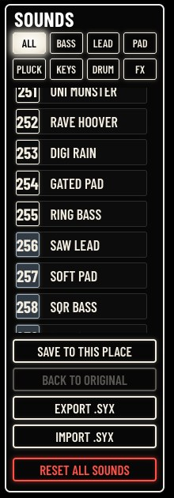
| ControlCommandeBedienelementMandoComando控制器操作子 | What it doesCe qu’elle faitFunktionQué haceFunzione功能機能 |
|---|---|
| SAVE TO THIS PLACEENREGISTRER ICIHIER SPEICHERNGUARDAR AQUÍSALVA QUI保存到此位置この位置に保存 | Saves the track’s sound in the place lit yellow, after a confirmation: it replaces the sound there. To save it elsewhere, click that place first, then SAVE TO THIS PLACE.Enregistre le son de la piste dans la place éclairée en jaune, après confirmation : il remplace le son qui s’y trouve. Pour l’enregistrer ailleurs, cliquez d’abord sur cette place, puis sur ENREGISTRER ICI.Speichert den Sound der Spur nach einer Bestätigung auf dem gelb leuchtenden Speicherplatz: Er ersetzt den Sound, der sich dort befindet. Um ihn anderswo zu speichern, klicken Sie zuerst auf diesen Speicherplatz, dann auf HIER SPEICHERN.Guarda el sonido de la pista en la posición iluminada en amarillo, tras una confirmación: sustituye al sonido que había en ella. Para guardarlo en otra, haga clic primero en esa posición y después en GUARDAR AQUÍ.Salva il suono della traccia nella posizione accesa in giallo, dopo una conferma: sostituisce il suono che vi si trova. Per salvarlo altrove, fare prima clic su quella posizione, poi su SALVA QUI.经确认后，将音轨的音色保存到亮黄色的位置：替换该位置原有的音色。若要保存到别处，先点击那个位置，再点击 保存到此位置。確認のあと、黄色に点灯している枠にトラックのサウンドを保存します。その枠にあったサウンドは置き換えられます。別の枠に保存するには、先にその枠をクリックしてから この位置に保存 を押します。 |
| BACK TO ORIGINALREVENIR À L'ORIGINALZUM ORIGINALVOLVER AL ORIGINALTORNA ALL'ORIGINALE恢复原始オリジナルに戻す | On a place in orange: brings back the sound the place had at first, after a confirmation. Grey on a place that still holds its original.Sur une place en orange : rétablit le son d’origine de la place, après confirmation. Gris sur une place qui a encore son son d’origine.Auf einem orangen Speicherplatz: stellt nach einer Bestätigung den ursprünglichen Sound des Speicherplatzes wieder her. Grau auf einem Speicherplatz, der noch sein Original enthält.En una posición en naranja: recupera el sonido que tenía la posición al principio, tras una confirmación. En gris en una posición que aún conserva su original.Su una posizione in arancione: ripristina il suono che la posizione aveva in origine, dopo una conferma. Grigio su una posizione che contiene ancora il suo originale.用于橙色的位置：经确认后，恢复该位置最初的音色。位置仍为原始音色时显示为灰色。オレンジの枠で：確認のあと、その枠に最初に入っていたサウンドに戻します。オリジナルのままの枠ではグレーになります。 |
| EXPORT .SYXEXPORTER .SYXEXPORT .SYXEXPORTAR .SYXESPORTA .SYX导出 .SYX.SYX 書き出し | Saves the sound of the place as a Prophet-600 file (number name.syx) in the browser’s downloads, under the name you give it: the Prophet-600 SysEx format, which other Prophet-600 tools read. It holds the sound as saved in the place: save your changes first.Enregistre le son de la place dans un fichier Prophet-600 (numéro nom.syx), dans les téléchargements du navigateur, sous le nom que vous lui donnez : le format SysEx du Prophet-600, que lisent d’autres outils du Prophet-600. Il contient le son tel qu’il est enregistré dans la place : enregistrez d’abord vos changements.Speichert den Sound des Speicherplatzes als Prophet-600-Datei (Nummer Name.syx) in den Downloads des Browsers, unter dem Namen, den Sie ihm geben: das SysEx-Format des Prophet-600, das andere Prophet-600-Werkzeuge lesen. Die Datei enthält den Sound so, wie er auf dem Speicherplatz gespeichert ist: Speichern Sie Ihre Änderungen zuerst.Guarda el sonido de la posición como archivo de Prophet-600 (número nombre.syx) en las descargas del navegador, con el nombre que le dé: el formato SysEx del Prophet-600, que leen otras herramientas del Prophet-600. Contiene el sonido tal como está guardado en la posición: guarde antes sus cambios.Salva il suono della posizione come file Prophet-600 (numero nome.syx) nei download del browser, con il nome che gli si dà: il formato SysEx del Prophet-600, letto da altri strumenti per il Prophet-600. Contiene il suono così com’è salvato nella posizione: salvare prima le proprie modifiche.将该位置的音色以您指定的名称保存为 Prophet-600 文件（编号名称.syx），存入浏览器的下载文件夹：即 Prophet-600 的 SysEx 格式，其他 Prophet-600 工具也能读取。文件包含该位置中已保存的音色：请先保存您的更改。枠のサウンドを、付けた名前で Prophet-600 のファイル（番号名前.syx）としてブラウザーのダウンロード先に保存します。形式は Prophet-600 の SysEx フォーマットで、ほかの Prophet-600 用ツールでも読み込めます。ファイルには枠に保存されている状態のサウンドが入るので、先に変更を保存してください。 |
| IMPORT .SYXIMPORTER .SYXIMPORT .SYXIMPORTAR .SYXIMPORTA .SYX导入 .SYX.SYX 読み込み | Puts a Prophet-600 sound from a file (.syx or .mid, Sequential’s format or GliGli’s) in the place lit yellow, after a confirmation, with its name (the one given on export, else the file’s). With several sounds in the file, the first one.Met un son de Prophet-600 tiré d’un fichier (.syx ou .mid, au format de Sequential ou de GliGli) dans la place éclairée en jaune, après confirmation, avec son nom (celui donné à l’export, sinon celui du fichier). Si le fichier en contient plusieurs, le premier.Legt nach einer Bestätigung einen Prophet-600-Sound aus einer Datei (.syx oder .mid, im Format von Sequential oder von GliGli) mit seinem Namen (dem beim Export vergebenen, sonst dem der Datei) auf den gelb leuchtenden Speicherplatz. Enthält die Datei mehrere Sounds, den ersten.Coloca un sonido de Prophet-600 procedente de un archivo (.syx o .mid, en el formato de Sequential o en el de GliGli) en la posición iluminada en amarillo, tras una confirmación, con su nombre (el dado al exportar, si no el del archivo). Si el archivo contiene varios sonidos, el primero.Mette un suono del Prophet-600 preso da un file (.syx o .mid, nel formato di Sequential o di GliGli) nella posizione accesa in giallo, dopo una conferma, con il suo nome (quello dato all’esportazione, altrimenti quello del file). Se il file contiene più suoni, il primo.经确认后，将文件（.syx 或 .mid，Sequential 格式或 GliGli 格式）中的 Prophet-600 音色连同其名称（导出时指定的名称，否则为文件名）放入亮黄色的位置。如果文件中有多个音色，则取第一个。ファイル（.syx または .mid、Sequential 形式または GliGli 形式）の Prophet-600 サウンドを、確認のあと、その名前（書き出し時に付けた名前、なければファイル名）とともに黄色に点灯している枠に入れます。ファイルに複数のサウンドがある場合は、最初のサウンドが入ります。 |
| RESET ALL SOUNDSRÉINITIALISER LES SONSALLE KLÄNGE ZURÜCKRESTABLECER SONIDOSRIPRISTINA I SUONI重置所有音色全サウンドをリセット | Brings back the 255 original sounds, after a confirmation: every sound you saved or imported is erased. Make a backup first (chapter 13).Rétablit les 255 sons d’origine, après confirmation : tous les sons enregistrés ou importés sont effacés. Faites d’abord une sauvegarde (chapitre 13).Stellt nach einer Bestätigung die 255 Originalsounds wieder her: Jeder Sound, den Sie gespeichert oder importiert haben, wird gelöscht. Erstellen Sie zuerst ein Backup (Kapitel 13).Recupera los 255 sonidos originales, tras una confirmación: se borran todos los sonidos que haya guardado o importado. Haga antes una copia de seguridad (capítulo 13).Ripristina i 255 suoni originali, dopo una conferma: ogni suono salvato o importato viene cancellato. Fare prima un backup (capitolo 13).经确认后，恢复 255 个原始音色：您保存或导入的所有音色都会被删除。请先进行备份（第13章）。確認のあと、255 のオリジナル・サウンドに戻します。保存または取り込んだサウンドはすべて消去されます。先にバックアップを取ってください（第13章）。 |
SAVE TO THIS PLACE, BACK TO ORIGINAL and EXPORT .SYX act on a Guru-600 sound: they are grey while the track plays a sound of the FM-1.
ENREGISTRER ICI, REVENIR À L'ORIGINAL et EXPORTER .SYX agissent sur un son Guru-600 : ils sont gris quand la piste joue un son du FM-1.
HIER SPEICHERN, ZUM ORIGINAL und EXPORT .SYX wirken auf einen Guru-600-Sound: Sie sind grau, solange die Spur einen Sound des FM-1 spielt.
GUARDAR AQUÍ, VOLVER AL ORIGINAL y EXPORTAR .SYX actúan sobre un sonido Guru-600: están en gris mientras la pista toca un sonido del FM-1.
SALVA QUI, TORNA ALL'ORIGINALE ed ESPORTA .SYX agiscono su un suono Guru-600: sono grigi mentre la traccia suona un suono dell’FM-1.
保存到此位置、恢复原始 和 导出 .SYX 作用于 Guru-600 音色：当音轨演奏 FM-1 的音色时，它们显示为灰色。
この位置に保存、オリジナルに戻す、.SYX 書き出し は Guru-600 サウンドに対して働きます。トラックが FM-1 のサウンドを演奏している間はグレーになります。
Saved with the sound: the oscillators, the mixer, the filter and its envelope, the Poly-Mod, the amplifier envelope, the glide, UNI on or off (with its DETUNE), the LFO’s rate, shape and destinations, WHEEL and VEL>FLT. Not saved: VINTAGE (back to 24 at each load), the effect sends (a kept sound plays dry, all sends at 0), the INSERT, MONO and LEG (a kept sound always plays POLY, or UNI if its unison was on), the LFO’s PHASE and FADE and the other LFO settings of the MOD page, the ENVELOPE settings of the MOD page, MOD MATRIX slots 1–2, the VOICE settings of the MOD page and SPREAD.
Enregistrés avec le son : les oscillateurs, le mixeur, le filtre et son enveloppe, la Poly-Mod, l’enveloppe d’amplitude, le glide, UNI actif ou non (avec son DETUNE), la vitesse, la forme et les destinations du LFO, WHEEL et VEL>FLT. Non enregistrés : VINTAGE (revient à 24 à chaque chargement), les envois d’effets (un son gardé joue sec, tous les envois à 0), l’INSERT, MONO et LEG (un son gardé joue toujours en POLY, ou en UNI si son unisson était actif), PHASE et FADE du LFO et les autres réglages du LFO de la page MOD, les réglages ENVELOPE de la page MOD, les emplacements 1 et 2 de MOD MATRIX, les réglages VOICE de la page MOD et SPREAD.
Mit dem Sound gespeichert: die Oszillatoren, der Mixer, das Filter und seine Hüllkurve, die Poly-Mod, die Verstärkerhüllkurve, das Glide, UNI ein oder aus (mit seinem DETUNE), Geschwindigkeit, Wellenform und Ziele des LFO, WHEEL und VEL>FLT. Nicht gespeichert: VINTAGE (bei jedem Laden zurück auf 24), die Effekt-Sends (ein behaltener Sound spielt trocken, alle Sends auf 0), der INSERT, MONO und LEG (ein behaltener Sound spielt immer POLY, oder UNI, wenn sein Unisono eingeschaltet war), PHASE und FADE des LFO und die anderen LFO-Einstellungen der Seite MOD, die ENVELOPE-Einstellungen der Seite MOD, die Slots 1–2 von MOD MATRIX, die VOICE-Einstellungen der Seite MOD und SPREAD.
Se guarda con el sonido: los osciladores, el mezclador, el filtro y su envolvente, el Poly-Mod, la envolvente del amplificador, el portamento, UNI activado o no (con su DETUNE), la velocidad, la forma y los destinos del LFO, WHEEL y VEL>FLT. No se guarda: VINTAGE (vuelve a 24 en cada carga), los envíos de efectos (un sonido conservado suena seco, con todos los envíos a 0), el INSERT, MONO y LEG (un sonido conservado suena siempre en POLY, o en UNI si su unísono estaba activado), PHASE y FADE del LFO y los demás ajustes del LFO de la página MOD, los ajustes ENVELOPE de la página MOD, las ranuras 1–2 de MOD MATRIX, los ajustes VOICE de la página MOD y SPREAD.
Salvati con il suono: gli oscillatori, il mixer, il filtro e il suo inviluppo, il Poly-Mod, l’inviluppo dell’amplificatore, il glide, UNI attivo o no (con il suo DETUNE), la velocità, la forma e le destinazioni dell’LFO, WHEEL e VEL>FLT. Non salvati: VINTAGE (torna a 24 a ogni caricamento), le mandate agli effetti (un suono conservato suona senza effetti, tutte le mandate a 0), l’INSERT, MONO e LEG (un suono conservato suona sempre POLY, o UNI se il suo unisono era attivo), PHASE e FADE dell’LFO e gli altri parametri dell’LFO della pagina MOD, i parametri ENVELOPE della pagina MOD, gli slot 1–2 di MOD MATRIX, i parametri VOICE della pagina MOD e SPREAD.
随音色保存：振荡器、混音器、滤波器及其包络、Poly-Mod、放大器包络、滑音、UNI 开或关（及其 DETUNE）、LFO 的速率、波形和目标、WHEEL 和 VEL>FLT。不保存：VINTAGE（每次载入时恢复为 24）、效果发送（保存的音色以干声播放，所有发送为 0）、INSERT、MONO 和 LEG（保存的音色始终以 POLY 播放，若其齐奏为开则以 UNI 播放）、LFO 的 PHASE 和 FADE 以及 MOD 页面上的其他 LFO 设置、MOD 页面上的 ENVELOPE 设置、MOD MATRIX 的第 1–2 槽、MOD 页面上的 VOICE 设置以及 SPREAD。
サウンドとともに保存されるもの：オシレーター、ミキサー、フィルターとそのエンベロープ、Poly-Mod、アンプ・エンベロープ、グライド、UNI のオン／オフ（DETUNE を含む）、LFO のレート、波形、行き先、WHEEL、VEL>FLT。保存されないもの：VINTAGE（読み込むたびに24に戻ります）、エフェクト・センド（保存したサウンドはすべてのセンドが0のドライな音で鳴ります）、INSERT、MONO、LEG（保存したサウンドは常に POLY、ユニゾンがオンなら UNI で鳴ります）、LFO の PHASE と FADE および MOD ページのそのほかの LFO 設定、MOD ページの ENVELOPE 設定、MOD MATRIX のスロット1〜2、MOD ページの VOICE 設定、SPREAD。
To keep everything, use STORE THE TRACK’S SOUND on the PROJECTS page (a USER sound), or save the project. The places of your own are 55 at most, shared by the sounds you save and the sounds you import. Beyond: the message The memory of the places is full; free some with BACK TO ORIGINAL.
Pour tout garder, utilisez STORE THE TRACK’S SON sur la page PROJETS (un son USER), ou enregistrez le projet. Les places à vous sont 55 au plus, partagées entre les sons enregistrés et les sons importés. Au-delà : le message La mémoire des places est pleine ; libérez-en avec REVENIR À L'ORIGINAL.
Um alles zu behalten, verwenden Sie STORE THE TRACK’S KLANG auf der Seite PROJEKTE (ein USER-Sound) oder speichern Sie das Projekt. Es gibt höchstens 55 eigene Speicherplätze, geteilt von den Sounds, die Sie speichern, und den Sounds, die Sie importieren. Darüber hinaus: die Meldung Die Speicherplätze sind voll; geben Sie mit ZUM ORIGINAL einige frei.
Para conservarlo todo, use STORE THE TRACK’S SONIDO en la página PROYECTOS (un sonido USER), o guarde el proyecto. Las posiciones propias son 55 como máximo, compartidas entre los sonidos que guarda y los que importa. Más allá aparece el mensaje La memoria de las posiciones está llena; libere algunas con VOLVER AL ORIGINAL.
Per conservare tutto, usare STORE THE TRACK’S SUONO nella pagina PROGETTI (un suono USER), oppure salvare il progetto. Le posizioni per i propri suoni sono al massimo 55, condivise tra i suoni salvati e i suoni importati. Oltre: il messaggio La memoria delle posizioni è piena; liberarne alcune con TORNA ALL'ORIGINALE.
若要保留全部内容，请使用 项目 页面上的 STORE THE TRACK’S 音色（USER 音色），或保存工程。您自己的位置最多 55 个，由您保存的音色和导入的音色共用。超出后会显示位置存储已满；可用 恢复原始 释放一些位置。
すべてを残すには、プロジェクト ページの STORE THE TRACK’S サウンド（USER サウンド）を使うか、プロジェクトを保存します。自分のサウンド用の枠は最大55で、保存したサウンドと取り込んだサウンドで共有します。それを超えると枠のメモリーがいっぱいですというメッセージが表示されます。オリジナルに戻す でいくつかの枠を空けてください。
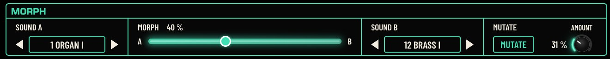
MORPH turns the track’s sound (SOUND A) into another one (SOUND B), little by little, and MUTATE makes a variation of it.
MORPH transforme peu à peu le son de la piste (SOUND A) en un autre (SOUND B), et MUTATE en fait une variante.
MORPH verwandelt den Sound der Spur (SOUND A) nach und nach in einen anderen (SOUND B), und MUTATE erzeugt eine Variante davon.
MORPH transforma poco a poco el sonido de la pista (SOUND A) en otro (SOUND B), y MUTATE crea una variación de él.
MORPH trasforma poco a poco il suono della traccia (SOUND A) in un altro (SOUND B), e MUTATE ne crea una variante.
MORPH 将音轨的音色（SOUND A）逐渐变为另一个音色（SOUND B），MUTATE 则生成它的一个变体。
MORPH はトラックのサウンド（SOUND A）を少しずつ別のサウンド（SOUND B）に変化させ、MUTATE はそのバリエーションを作ります。
| ControlCommandeBedienelementMandoComando控制器操作子 | What it doesCe qu’elle faitFunktionQué haceFunzione功能機能 |
|---|---|
| SOUND A ◀ ▶SON A ◀ ▶KLANG A ◀ ▶SONIDO A ◀ ▶SUONO A ◀ ▶音色 A ◀ ▶サウンドA ◀ ▶ | The track’s sound. The arrows load the previous or next place (after 255 comes 1), as a click in SOUNDS.Le son de la piste. Les flèches chargent la place précédente ou suivante (après 255 vient 1), comme un clic dans SONS.Der Sound der Spur. Die Pfeile laden den vorherigen oder nächsten Speicherplatz (nach 255 kommt 1), wie ein Klick in KLÄNGE.El sonido de la pista. Las flechas cargan la posición anterior o siguiente (después de 255 viene 1), como un clic en SONIDOS.Il suono della traccia. Le frecce caricano la posizione precedente o successiva (dopo la 255 viene la 1), come un clic in SUONI.音轨的音色。箭头载入上一个或下一个位置（255 之后是 1），与在 音色 中点击相同。トラックのサウンド。矢印で前または次の枠を読み込みます（255 の次は1）。サウンド でクリックするのと同じです。 |
| SOUND B ◀ ▶SON B ◀ ▶KLANG B ◀ ▶SONIDO B ◀ ▶SUONO B ◀ ▶音色 B ◀ ▶サウンドB ◀ ▶ | The sound to reach. Choosing another B puts the slider back at A.Le son à atteindre. Choisir un autre B ramène le curseur sur A.Der Sound, der erreicht werden soll. Wird ein anderer B gewählt, springt der Schieberegler zurück auf A.El sonido al que se quiere llegar. Al elegir otro B, el deslizador vuelve a A.Il suono da raggiungere. Scegliendo un altro B il cursore torna su A.要变成的目标音色。选择另一个 B 会使滑块回到 A。目標のサウンド。別の B を選ぶと、スライダーは A に戻ります。 |
| MORPHMORPHMORPHMORPHMORPHMORPHMORPH | Click or drag on the rail, from A (0 %) to B (100 %). The value shows after the title. The sound changes as you move.Cliquez ou glissez sur le rail, de A (0 %) à B (100 %). La valeur s’affiche après le titre. Le son change à mesure.Klicken oder ziehen Sie auf der Schiene, von A (0 %) bis B (100 %). Der Wert erscheint nach dem Titel. Der Klang ändert sich während der Bewegung.Haga clic o arrastre sobre el carril, de A (0 %) a B (100 %). El valor aparece después del título. El sonido cambia a medida que se desplaza.Fare clic o trascinare sulla guida, da A (0 %) a B (100 %). Il valore compare dopo il titolo. Il suono cambia man mano.在滑轨上点击或拖动，从 A（0%）到 B（100%）。数值显示在标题之后。声音随移动而变化。レール上をクリックまたはドラッグします。A（0%）から B（100%）まで設定でき、値はタイトルの後ろに表示されます。動かすにつれてサウンドが変化します。 |
| MUTATEMUTATIONMUTATIONMUTACIÓNMUTAZIONE变异変異 | Changes the sound at random, by the AMOUNT shown. Click again for another variation.Modifie le son au hasard, de la quantité AMOUNT indiquée. Cliquez de nouveau pour une autre variante.Verändert den Sound zufällig, um den angezeigten Wert AMOUNT. Klicken Sie erneut für eine weitere Variante.Modifica el sonido al azar, en la cantidad AMOUNT indicada. Haga clic de nuevo para obtener otra variación.Modifica il suono a caso, della quantità AMOUNT indicata. Fare di nuovo clic per un’altra variante.按所示的 AMOUNT 随机更改音色。再次点击可获得另一个变体。表示されている AMOUNT の分だけ、サウンドをランダムに変化させます。もう一度クリックすると別のバリエーションになります。 |
| AMOUNTQUANTITÉINTENS.CANTIDADQUANTITÀ调制量変調量 | How far MUTATE goes: a little (1 %) to a lot (100 %).Jusqu’où va MUTATE : un peu (1 %) à beaucoup (100 %).Wie weit MUTATE geht: wenig (1 %) bis viel (100 %).Hasta dónde llega MUTATE: un poco (1 %) o mucho (100 %).Fin dove arriva MUTATE: da poco (1 %) a molto (100 %).MUTATE 的变化程度：从少量（1%）到大量（100%）。MUTATE の変化の大きさ：わずか（1%）から大きく（100%）まで。 |
A morphed or mutated sound is a changed sound: keep it with SAVE TO THIS PLACE or STORE THE TRACK’S SOUND. Load SOUND A again to come back to it.
Un son morphé ou muté est un son modifié : gardez-le avec ENREGISTRER ICI ou STORE THE TRACK’S SON. Rechargez SOUND A pour y revenir.
Ein gemorphter oder mutierter Sound ist ein geänderter Sound: Behalten Sie ihn mit HIER SPEICHERN oder STORE THE TRACK’S KLANG. Laden Sie SOUND A erneut, um zu ihm zurückzukehren.
Un sonido transformado o mutado es un sonido modificado: consérvelo con GUARDAR AQUÍ o STORE THE TRACK’S SONIDO. Vuelva a cargar SOUND A para recuperarlo.
Un suono trasformato con MORPH o MUTATE è un suono modificato: conservarlo con SALVA QUI o STORE THE TRACK’S SUONO. Ricaricare SOUND A per tornarvi.
经过 MORPH 或 MUTATE 的音色是已更改的音色：请用 保存到此位置 或 STORE THE TRACK’S 音色 保留。重新载入 SOUND A 即可回到原音色。
モーフィングやミューテートしたサウンドは、変更されたサウンドです。この位置に保存 または STORE THE TRACK’S サウンド で残してください。元のサウンドに戻るには、SOUND A をもう一度読み込みます。
Each track has its own sequence of up to 64 steps, with chords, ties, accents, slides, chance, velocity and repeats. The SEQUENCER page shows the selected track’s: its settings at the top, the notes in the middle (STEPS), the details of each step below (DETAIL), and the automation on the right. ▶ at the top starts the four tracks together.
Chaque piste a sa propre séquence, jusqu’à 64 pas, avec accords, liaisons, accents, glissés, probabilité, vélocité et répétitions. La page SÉQUENCEUR montre celle de la piste choisie : ses réglages en haut, les notes au milieu (STEPS), le détail de chaque pas en dessous (DETAIL), et l’automation à droite. ▶ en haut lance les quatre pistes ensemble.
Jede Spur hat ihre eigene Sequenz mit bis zu 64 Steps, mit Akkorden, Bindungen, Akzenten, Slides, Wahrscheinlichkeit, Anschlagstärke und Wiederholungen. Die Seite SEQUENZER zeigt die der ausgewählten Spur: ihre Einstellungen oben, die Noten in der Mitte (STEPS), die Details jedes Steps darunter (DETAIL) und die Automation rechts. ▶ oben startet die vier Spuren gemeinsam.
Cada pista tiene su propia secuencia de hasta 64 pasos, con acordes, ligaduras, acentos, deslizamientos, probabilidad, velocidad y repeticiones. La página SECUENCIADOR muestra la de la pista seleccionada: sus ajustes arriba, las notas en el centro (STEPS), los detalles de cada paso debajo (DETAIL) y la automatización a la derecha. ▶, arriba, pone en marcha las cuatro pistas a la vez.
Ogni traccia ha la propria sequenza fino a 64 passi, con accordi, legature, accenti, slide, probabilità, velocity e ripetizioni. La pagina SEQUENCER mostra quella della traccia selezionata: i suoi parametri in alto, le note al centro (STEPS), i dettagli di ogni passo sotto (DETAIL) e l’automazione a destra. ▶ in alto avvia insieme le quattro tracce.
每个音轨都有自己的音序，最多 64 步，包含和弦、连音、重音、滑音、概率、力度和重复。音序器 页面显示所选音轨的音序：顶部是其设置，中间是音符（STEPS），下方是每一步的细节（DETAIL），右侧是自动化。顶部的 ▶ 同时启动四个音轨。
各トラックには最大64ステップの独自のシーケンスがあり、コード、タイ、アクセント、スライド、確率、ベロシティ、リピートを設定できます。シーケンサー ページには選択中のトラックのシーケンスが表示されます。上部にその設定、中央にノート（STEPS）、下に各ステップの詳細（DETAIL）、右側にオートメーションがあります。上部の ▶ で4つのトラックを同時に再生します。
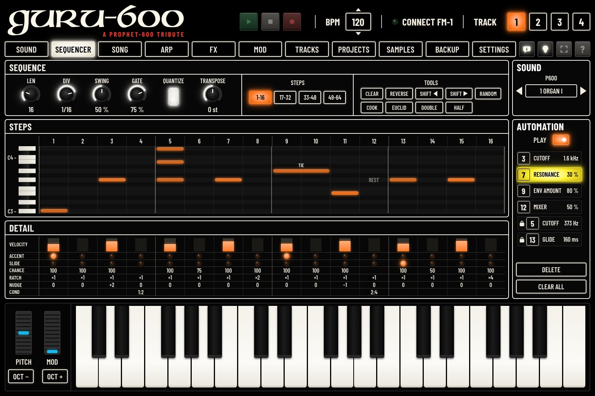
| ControlCommandeBedienelementMandoComando控制器操作子 | What it doesCe qu’elle faitFunktionQué haceFunzione功能機能 | ValuesValeursWerteValoresValori取值値 |
|---|---|---|
| LENLONG.LÄNGELONG.LUNG.长度長さ | The number of steps of the sequence. The steps beyond it are dimmed.Le nombre de pas de la séquence. Les pas au-delà sont assombris.Die Anzahl der Steps der Sequenz. Die Steps dahinter sind abgedunkelt.El número de pasos de la secuencia. Los pasos que quedan fuera aparecen atenuados.Il numero di passi della sequenza. I passi oltre questo numero appaiono oscurati.音序的步数。超出的步显示为暗色。シーケンスのステップ数。それを超えるステップは暗く表示されます。 | 1 … 641 … 641 … 641 … 641 … 641 … 641 … 64 |
| DIVDIV.TEILERDIV.DIV.分割分割 | The length of a step, in note values of the tempo.La durée d’un pas, en valeurs de notes du tempo.Die Länge eines Steps, in Notenwerten des Tempos.La duración de un paso, en valores de nota del tempo.La durata di un passo, in valori di nota del tempo.每一步的时值，以速度的音符时值表示。1ステップの長さ。テンポに対する音価で設定します。 | 4BAR … 1/324BAR … 1/324BAR … 1/324BAR … 1/324BAR … 1/324BAR … 1/324BAR … 1/32 |
| SWINGSWINGSWINGSWINGSWINGSWINGSWING | Delays every other step: a shuffle.Retarde un pas sur deux : un balancement.Verzögert jeden zweiten Step: ein Shuffle.Retrasa un paso de cada dos: un shuffle.Ritarda un passo su due: uno shuffle.每隔一步延后：即摇摆。1つおきにステップを遅らせ、シャッフルにします。 | 0 … 100 %0 … 100 %0 … 100 %0 … 100 %0 … 100 %0 … 100%0 … 100% |
| GATEGATEGATEGATEGATEGATEGATE | How long each note lasts, in part of its step.La durée de chaque note, en part de son pas.Wie lange jede Note klingt, als Anteil ihres Steps.Cuánto dura cada nota, en proporción de su paso.Quanto dura ogni nota, in proporzione al suo passo.每个音符的持续长度，以其所在步的比例表示。各ノートの長さ。ステップに対する割合で設定します。 | 1 … 100 %1 … 100 %1 … 100 %1 … 100 %1 … 100 %1 … 100%1 … 100% |
| QUANTIZEQUANTIZEQUANTIZEQUANTIZEQUANTIZEQUANTIZEQUANTIZE | Lit: the steps play on the grid. Unlit: they play their NUDGE (early or late, as recorded).Allumé : les pas jouent sur la grille. Éteint : ils jouent leur NUDGE (en avance ou en retard, comme enregistrés).Leuchtend: Die Steps spielen auf dem Raster. Aus: Sie spielen ihren NUDGE (früher oder später, wie aufgenommen).Encendido: los pasos suenan en la cuadrícula. Apagado: suenan con su NUDGE (adelantados o retrasados, tal como se grabaron).Acceso: i passi suonano sulla griglia. Spento: suonano con il loro NUDGE (in anticipo o in ritardo, come registrati).亮起：各步按网格演奏。不亮：各步按其 NUDGE 演奏（按录制时提前或延后）。点灯：ステップはグリッドどおりに再生されます。消灯：ステップはそれぞれの NUDGE（録音したとおりの前後のずれ）で再生されます。 | OFF / ONOFF / ONOFF / ONOFF / ONOFF / ONOFF / ONOFF / ON |
| TRANSPOSETRANSPOS.TRANSPON.TRANSPONERTRASPORTO移调移調 | Transposes what the keys play, in semitones; the sequence too when QUANTIZE on the ARP page is SEQ+T. The same as TRANSPOSE on the ARP page.Transpose ce que jouent les touches, en demi-tons ; la séquence aussi quand le QUANTIZE de la page ARP est sur SEQ+T. Le même que TRANSPOSE sur la page ARP.Transponiert, was die Tasten spielen, in Halbtönen; auch die Sequenz, wenn QUANTIZE auf der Seite ARP auf SEQ+T steht. Dasselbe wie TRANSPOSE auf der Seite ARP.Transpone lo que tocan las teclas, en semitonos; también la secuencia cuando QUANTIZE, en la página ARP, está en SEQ+T. Es lo mismo que TRANSPOSE en la página ARP.Traspone ciò che suonano i tasti, in semitoni; anche la sequenza quando QUANTIZE nella pagina ARP è su SEQ+T. Lo stesso di TRANSPOSE nella pagina ARP.以半音为单位移调琴键所演奏的音；当 ARP 页面的 QUANTIZE 为 SEQ+T 时，音序也一同移调。与 ARP 页面上的 TRANSPOSE 相同。鍵盤で弾く音を半音単位で移調します。ARP ページの QUANTIZE が SEQ+T のときは、シーケンスも移調されます。ARP ページの TRANSPOSE と同じです。 | −24 … +24 st−24 … +24 st−24 … +24 st−24 … +24 st−24 … +24 st−24 … +24 st−24 … +24 st |
STEPS 1-16, 17-32, 33-48, 49-64: the 16 steps shown. They change only the view.
PAS 1-16, 17-32, 33-48, 49-64 : les 16 pas affichés. Ils ne changent que l’affichage.
SCHRITTE 1-16, 17-32, 33-48, 49-64: die 16 angezeigten Steps. Sie ändern nur die Ansicht.
PASOS 1-16, 17-32, 33-48, 49-64: los 16 pasos mostrados. Solo cambian la vista.
PASSI 1-16, 17-32, 33-48, 49-64: i 16 passi mostrati. Cambiano solo la visualizzazione.
步 1-16、17-32、33-48、49-64：所显示的 16 步。它们只改变显示范围。
ステップ 1-16、17-32、33-48、49-64：表示する16ステップ。表示が変わるだけです。
| ControlCommandeBedienelementMandoComando控制器操作子 | What it doesCe qu’elle faitFunktionQué haceFunzione功能機能 | ValuesValeursWerteValoresValori取值値 |
|---|---|---|
| VELOCITYVÉLOCITÉANSCHLAGVELOCIDADVELOCITÀ力度ベロシティ | How hard the step plays: click at the height you want, or drag up or down. Only on a step with notes.La force du pas : cliquez à la hauteur voulue, ou glissez vers le haut ou le bas. Seulement sur un pas qui a des notes.Wie stark der Step spielt: Klicken Sie auf die gewünschte Höhe, oder ziehen Sie nach oben oder unten. Nur bei einem Step mit Noten.La fuerza con la que suena el paso: haga clic a la altura que desee, o arrastre hacia arriba o hacia abajo. Solo en un paso con notas.Con quanta forza suona il passo: fare clic all’altezza desiderata, o trascinare in alto o in basso. Solo su un passo con note.该步演奏的力度：在所需高度点击，或向上或向下拖动。仅适用于含有音符的步。ステップを鳴らす強さ。希望の高さでクリックするか、上下にドラッグします。ノートのあるステップでのみ設定できます。 | 1 … 1271 … 1271 … 1271 … 1271 … 1271 … 1271 … 127 |
| ACCENTACCENTAKZENTACENTOACCENTO重音アクセント | Click: the step plays louder.Cliquez : le pas joue plus fort.Klicken: Der Step spielt lauter.Clic: el paso suena más fuerte.Clic: il passo suona più forte.点击：该步演奏得更响。クリック：ステップが強く鳴ります。 | OFF / ONOFF / ONOFF / ONOFF / ONOFF / ONOFF / ONOFF / ON |
| SLIDEGLISSÉGLEITENLIGADOLEGATO滑音スライド | Click: the note glides into the next one.Cliquez : la note glisse vers la suivante.Klicken: Die Note gleitet in die nächste.Clic: la nota se desliza hasta la siguiente.Clic: la nota scivola verso la successiva.点击：该音符滑向下一个音符。クリック：ノートが次のノートへ滑らかに移ります。 | OFF / ONOFF / ONOFF / ONOFF / ONOFF / ONOFF / ONOFF / ON |
| CHANCEPROBABILITÉW'KEITPROB.PROB.概率確率 | How often the step plays: drag up or down. Hidden when the step has a condition (COND).La fréquence de jeu du pas : glissez vers le haut ou le bas. Masqué quand le pas a une condition (COND).Wie oft der Step spielt: nach oben oder unten ziehen. Ausgeblendet, wenn der Step eine Bedingung hat (COND).La frecuencia con la que suena el paso: arrastre hacia arriba o hacia abajo. Oculto cuando el paso tiene una condición (COND).Quanto spesso suona il passo: trascinare in alto o in basso. Nascosto quando il passo ha una condizione (COND).该步演奏的频率：向上或向下拖动。当该步设有条件（COND）时隐藏。ステップが鳴る確率：上下にドラッグします。ステップに条件（COND）がある場合は表示されません。 | 0 … 100 %0 … 100 %0 … 100 %0 … 100 %0 … 100 %0 … 100%0 … 100% |
| RATCHRÉPÉTITIONWIEDERHOL.REPETIC.RIPETIZ.连击連打 | Click: the step plays 1 to 4 times within its length.Cliquez : le pas joue 1 à 4 fois dans sa durée.Klicken: Der Step spielt 1- bis 4-mal innerhalb seiner Länge.Clic: el paso suena de 1 a 4 veces dentro de su duración.Clic: il passo suona da 1 a 4 volte nella sua durata.点击：该步在其时值内演奏 1 至 4 次。クリック：ステップがその長さの中で1〜4回鳴ります。 | ×1 … ×4×1 … ×4×1 … ×4×1 … ×4×1 … ×4×1 … ×4×1 … ×4 |
| NUDGEDÉCALAGEVERSATZDESPLAZ.SPOSTAM.微移ずらし | Early or late, in sixteenths of a step: drag up or down. Heard only with QUANTIZE unlit.En avance ou en retard, en seizièmes de pas : glissez vers le haut ou le bas. Entendu seulement avec QUANTIZE éteint.Früher oder später, in Sechzehnteln eines Steps: nach oben oder unten ziehen. Nur hörbar, wenn QUANTIZE aus ist.Adelantado o retrasado, en dieciseisavos de paso: arrastre hacia arriba o hacia abajo. Solo se oye con QUANTIZE apagado.In anticipo o in ritardo, in sedicesimi di passo: trascinare in alto o in basso. Si sente solo con QUANTIZE spento.提前或延后，以一步的十六分之一为单位：向上或向下拖动。仅在 QUANTIZE 不亮时可听到。ステップの前後のずれ（1/16 ステップ単位）：上下にドラッグします。QUANTIZE が消灯しているときにのみ聞こえます。 | −8 … +7−8 … +7−8 … +7−8 … +7−8 … +7−8 … +7−8 … +7 |
| CONDCONDITIONBEDINGUNGCONDICIÓNCONDIZIONE条件条件 | Click to choose when the step plays: 1:2 (the first of every 2 loops), 2:2, 1:3 … 4:4, FILL (only while a fill is held on the FM-1: GLO + E4),!FILL (only when it is not). Choosing a condition puts CHANCE back to 100 %; dragging CHANCE removes the condition.Cliquez pour choisir quand le pas joue : 1:2 (la première de chaque série de 2 boucles), 2:2, 1:3 … 4:4, FILL (seulement pendant un fill tenu sur le FM-1 : GLO + E4), !FILL (seulement en dehors). Choisir une condition remet CHANCE à 100 % ; glisser CHANCE retire la condition.Klicken Sie, um zu wählen, wann der Step spielt: 1:2 (der erste von je 2 Durchläufen), 2:2, 1:3 … 4:4, FILL (nur während am FM-1 ein Fill gehalten wird: GLO + E4),!FILL (nur wenn nicht). Die Wahl einer Bedingung setzt CHANCE auf 100 % zurück; Ziehen an CHANCE entfernt die Bedingung.Haga clic para elegir cuándo suena el paso: 1:2 (la primera de cada 2 vueltas), 2:2, 1:3 … 4:4, FILL (solo mientras se mantiene un fill en el FM-1: GLO + E4),!FILL (solo cuando no). Elegir una condición devuelve CHANCE al 100 %; arrastrar CHANCE elimina la condición.Fare clic per scegliere quando suona il passo: 1:2 (il primo di ogni 2 loop), 2:2, 1:3 … 4:4, FILL (solo mentre si tiene premuto un fill sull’FM-1: GLO + E4),!FILL (solo quando non è premuto). Scegliendo una condizione CHANCE torna al 100 %; trascinando CHANCE la condizione viene rimossa.点击选择该步何时演奏：1:2（每 2 次循环中的第一次）、2:2、1:3 … 4:4、FILL（仅在 FM-1 上按住加花时：GLO + E4）、!FILL（仅在未按住时）。选择条件会将 CHANCE 恢复为 100%；拖动 CHANCE 会取消条件。クリックして、ステップが鳴るタイミングを選びます：1:2（2ループごとの1回目）、2:2、1:3 … 4:4、FILL（FM-1 でフィルを押している間のみ：GLO + E4）、!FILL（フィルを押していないときのみ）。条件を選ぶと CHANCE は100% に戻り、CHANCE をドラッグすると条件は解除されます。 | —, 1:2 … 4:4, FILL,!FILL—, 1:2 … 4:4, FILL, !FILL – , 1:2 … 4:4, FILL,!FILL—, 1:2 … 4:4, FILL,!FILL – , 1:2 … 4:4, FILL,!FILL—, 1:2 … 4:4, FILL,!FILL—、1:2 … 4:4、FILL、!FILL |
A double click on a detail’s name (VELOCITY, ACCENT…) puts that row back to its usual value on every step of the sequence: velocity 96, ACCENT and SLIDE off, CHANCE 100 %, RATCH ×1, NUDGE 0, no COND.
Un double clic sur le nom d’un détail (VELOCITY, ACCENT…) remet cette ligne à sa valeur habituelle sur tous les pas de la séquence : vélocité 96, ACCENT et SLIDE éteints, CHANCE 100 %, RATCH ×1, NUDGE 0, aucune COND.
Ein Doppelklick auf den Namen eines Details (VELOCITY, ACCENT…) setzt diese Zeile auf allen Schritten der Sequenz auf ihren üblichen Wert zurück: Anschlagstärke 96, ACCENT und SLIDE aus, CHANCE 100 %, RATCH ×1, NUDGE 0, keine COND.
Un doble clic en el nombre de un detalle (VELOCITY, ACCENT…) devuelve esa fila a su valor habitual en todos los pasos de la secuencia: velocidad 96, ACCENT y SLIDE apagados, CHANCE 100 %, RATCH ×1, NUDGE 0, sin COND.
Un doppio clic sul nome di un dettaglio (VELOCITY, ACCENT…) riporta quella riga al suo valore abituale su tutti i passi della sequenza: velocity 96, ACCENT e SLIDE spenti, CHANCE 100 %, RATCH ×1, NUDGE 0, nessuna COND.
双击某个细节的名称（VELOCITY、ACCENT…），可将该行在序列所有步上恢复为常用值：力度 96，ACCENT 和 SLIDE 关闭，CHANCE 100%，RATCH ×1，NUDGE 0，无 COND。
詳細の名前（VELOCITY、ACCENT…）をダブルクリックすると、その行がシーケンスのすべてのステップで通常の値に戻ります：ベロシティ96、ACCENT と SLIDE はオフ、CHANCE 100%、RATCH ×1、NUDGE 0、COND なし。
They change the whole sequence of the track. On the FM-1, holding SAVE for 1 s undoes the last one.
Ils modifient toute la séquence de la piste. Sur le FM-1, maintenir SAVE 1 s annule le dernier.
Sie ändern die ganze Sequenz der Spur. Am FM-1 macht SAVE, 1 s lang gehalten, das letzte Werkzeug rückgängig.
Modifican toda la secuencia de la pista. En el FM-1, mantener pulsado SAVE durante 1 s deshace la última.
Modificano tutta la sequenza della traccia. Sull’FM-1, tenere premuto SAVE per 1 s annulla l’ultimo.
这些工具会更改音轨的整个音序。在 FM-1 上按住 SAVE 1 秒可撤销上一次操作。
トラックのシーケンス全体を変更します。FM-1 で SAVE を1秒長押しすると、直前の操作を取り消せます。
| ControlCommandeBedienelementMandoComando控制器操作子 | What it doesCe qu’elle faitFunktionQué haceFunzione功能機能 |
|---|---|
| CLEAREFFACERLÖSCHENBORRARCANCELLA清除クリア | Clears the steps, after a confirmation.Efface les pas, après confirmation.Löscht nach einer Bestätigung die Steps.Borra los pasos, tras una confirmación.Cancella i passi, dopo una conferma.经确认后，清除各步。確認のあと、ステップを消去します。 |
| REVERSEINVERSERUMKEHRENINVERTIRINVERTI反转反転 | Plays the sequence backwards.Met la séquence à l’envers.Spielt die Sequenz rückwärts.Toca la secuencia al revés.Suona la sequenza al contrario.将音序倒序演奏。シーケンスを逆方向に再生します。 |
| SHIFT ◀, SHIFT ▶DÉCAL. ◀, DÉCAL. ▶VERSCH. ◀, VERSCH. ▶DESPL. ◀, DESPL. ▶SPOSTA ◀, SPOSTA ▶移位◀, 移位▶シフト◀, シフト▶ | Moves every step one step earlier or later (the last comes back at the start).Décale tous les pas d’un pas plus tôt ou plus tard (le dernier revient au début).Verschiebt jeden Step um einen Step nach vorn oder hinten (der letzte kommt am Anfang wieder).Desplaza todos los pasos un paso antes o después (el último vuelve al principio).Sposta ogni passo di un passo prima o dopo (l’ultimo torna all’inizio).将每一步提前或延后一步（最后一步回到开头）。すべてのステップを1ステップ前または後ろに移動します（端からはみ出したステップは反対側に戻ります）。 |
| RANDOMALÉATOIREZUFALLALEATORIOCASUALE随机ランダム | New notes taken from the track’s scale (ARP page), on the same rhythm. On a DRUM track: a new beat.De nouvelles notes prises dans la gamme de la piste (page ARP), sur le même rythme. Sur une piste DRUM : un nouveau rythme.Neue Noten aus der Skala der Spur (Seite ARP), im selben Rhythmus. Auf einer DRUM-Spur: ein neuer Beat.Notas nuevas tomadas de la escala de la pista (página ARP), con el mismo ritmo. En una pista DRUM: un ritmo nuevo.Nuove note prese dalla scala della traccia (pagina ARP), sullo stesso ritmo. Su una traccia DRUM: un nuovo ritmo.按相同节奏，从音轨的音阶（ARP 页面）中取新音符。在 DRUM 音轨上：生成新的节拍。トラックのスケール（ARP ページ）から選んだ新しいノートを、同じリズムで生成します。DRUM トラックでは新しいビートになります。 |
| COOKVARIERVARIAT.VARIARVARIA变奏変奏 | A musical variation of the sequence; click again for more.Une variation musicale de la séquence ; un nouveau clic l’accentue.Eine musikalische Variation der Sequenz; erneut klicken für mehr.Una variación musical de la secuencia; haga clic de nuevo para obtener más.Una variazione musicale della sequenza; fare di nuovo clic per accentuarla.音序的一个音乐变体；再次点击可变化更多。シーケンスの音楽的なバリエーション。クリックするたびに変化します。 |
| EUCLIDEUCLIDEUCLIDEUCLIDEUCLIDEUCLIDEUCLID | Spreads a number of hits as evenly as possible over a cycle of steps, turned by a rotation, through the whole LEN. Type the hits, the steps and the rotation (for example 5 16 0) and confirm. A hit keeps the step’s note (or takes the scale’s root); the other steps are emptied.Répartit un nombre de coups aussi régulièrement que possible sur un cycle de pas, décalé d’une rotation, sur toute la longueur LEN. Tapez les coups, les pas et le décalage (par exemple 5 16 0) et confirmez. Un coup garde la note du pas (ou prend la tonique de la gamme) ; les autres pas sont vidés.Verteilt eine Anzahl von Schlägen so gleichmäßig wie möglich auf einen Zyklus von Steps, um eine Rotation verschoben, über die ganze LEN. Geben Sie die Schläge, die Steps und die Rotation ein (zum Beispiel 5 16 0) und bestätigen Sie. Ein Schlag behält die Note des Steps (oder nimmt den Grundton der Skala); die anderen Steps werden geleert.Reparte un número de golpes de la forma más regular posible en un ciclo de pasos, desplazado por una rotación, a lo largo de todo LEN. Escriba los golpes, los pasos y la rotación (por ejemplo 5 16 0) y confirme. Un golpe conserva la nota del paso (o toma la fundamental de la escala); los demás pasos se vacían.Distribuisce un numero di colpi nel modo più regolare possibile su un ciclo di passi, spostato di una rotazione, su tutta la lunghezza LEN. Digitare i colpi, i passi e la rotazione (per esempio 5 16 0) e confermare. Un colpo mantiene la nota del passo (o prende la tonica della scala); gli altri passi vengono svuotati.在一个步数循环中尽可能均匀地分布若干击，按偏移量旋转，并贯穿整个 LEN。输入击数、步数和偏移量（例如 5 16 0）并确认。每一击保留该步的音符（或取音阶的主音）；其他步被清空。指定した数のヒットを、ステップのサイクル上にできるだけ均等に配置し、回転させて LEN 全体に展開します。ヒット数、ステップ数、回転を入力し（例：5 16 0）、確定します。ヒットはステップのノートを保持します（ノートがなければスケールのルートを使います）。ほかのステップは空になります。 |
| DOUBLEDOUBLERVERDOPP.DOBLARRADDOPPIA加倍2倍 | Doubles LEN (64 at most): the steps are copied after themselves, ready to be changed.Double LEN (64 au plus) : les pas sont recopiés à leur suite, prêts à être modifiés.Verdoppelt LEN (höchstens 64): Die Steps werden hinter sich selbst kopiert, bereit zum Ändern.Duplica LEN (64 como máximo): los pasos se copian a continuación de sí mismos, listos para modificarlos.Raddoppia LEN (64 al massimo): i passi vengono copiati di seguito a sé stessi, pronti per essere modificati.将 LEN 加倍（最多 64）：各步被复制到其后，可随即修改。LEN を2倍にします（最大64）。ステップがその後ろにコピーされ、すぐに変更できます。 |
| HALFMOITIÉHALBMITADMETÀ减半半分 | Halves LEN: only the first half plays.Divise LEN par deux : seule la première moitié joue.Halbiert LEN: Nur die erste Hälfte spielt.Reduce LEN a la mitad: solo suena la primera mitad.Dimezza LEN: suona solo la prima metà.将 LEN 减半：只演奏前半部分。LEN を半分にします。前半だけが再生されます。 |
At the top right, the selected track’s sound: its engine, then ◀ its name ▶. The arrows load the previous or the next sound on the track without leaving the page; the steps stay. On a P600 track they go through the 255 places, as the list of the SOUND page does (a changed sound asks first); on another engine, through that engine’s sounds. With the TRACK buttons at the top, you change both the track and its sound from here.
En haut à droite, le son de la piste choisie : son moteur, puis ◀ son nom ▶. Les flèches chargent le son précédent ou suivant sur la piste sans quitter la page ; les pas restent. Sur une piste P600, elles parcourent les 255 places, comme la liste de la page SON (un son modifié demande d’abord) ; sur un autre moteur, les sons de ce moteur. Avec les boutons TRACK en haut, vous changez d’ici la piste et son son.
Oben rechts der Sound der gewählten Spur: seine Engine, dann ◀ sein Name ▶. Die Pfeile laden den vorigen oder nächsten Sound auf die Spur, ohne die Seite zu verlassen; die Schritte bleiben. Auf einer P600-Spur durchlaufen sie die 255 Plätze wie die Liste der Seite KLANG (bei einem geänderten Sound kommt zuerst eine Rückfrage); bei einer anderen Engine deren Sounds. Mit den TRACK-Tasten oben wechseln Sie von hier aus Spur und Sound.
Arriba a la derecha, el sonido de la pista elegida: su motor y, debajo, ◀ su nombre ▶. Las flechas cargan el sonido anterior o el siguiente en la pista sin salir de la página; los pasos se mantienen. En una pista P600 recorren las 255 posiciones, como la lista de la página SONIDO (si el sonido se ha modificado, primero se pide confirmación); en otro motor, los sonidos de ese motor. Con los botones TRACK de arriba, cambia desde aquí tanto la pista como su sonido.
In alto a destra, il suono della traccia scelta: il suo motore, poi ◀ il suo nome ▶. Le frecce caricano il suono precedente o successivo sulla traccia senza lasciare la pagina; i passi restano. Su una traccia P600 scorrono i 255 posti, come la lista della pagina SUONO (se il suono è stato modificato viene prima chiesta conferma); su un altro motore, i suoni di quel motore. Con i pulsanti TRACK in alto cambiate da qui sia la traccia sia il suo suono.
右上方显示所选轨道的音色：先是它的引擎，然后是 ◀ 音色名称 ▶。箭头在不离开本页的情况下，把上一个或下一个音色载入该轨道；步进保持不变。在 P600 轨道上，箭头依次浏览 255 个位置，与 音色 页面的列表相同（音色已修改时会先询问）；在其他引擎上，则浏览该引擎的音色。配合顶部的 TRACK 按钮，您可以在这里同时切换轨道和音色。
右上に、選択中のトラックの音色が表示されます。エンジン名、その下に ◀ 音色名 ▶。矢印でページを離れずに前後の音色をトラックに読み込めます。ステップはそのまま残ります。P600 トラックでは サウンド ページのリストと同じく255 のプレイスを順にたどります（音色を変更している場合は先に確認があります）。ほかのエンジンでは、そのエンジンの音色をたどります。上部の TRACK ボタンと組み合わせれば、ここでトラックと音色の両方を切り替えられます。
The list of the knob moves recorded on the track’s steps and of the parameter locks (a padlock): each row gives the step, the setting and its value. Record them on the FM-1: arm the track (●) and turn knobs while it plays.
La liste des mouvements de boutons enregistrés sur les pas de la piste et des verrous de paramètres (un cadenas) : chaque ligne donne le pas, le réglage et sa valeur. Enregistrez-les sur le FM-1 : armez la piste (●) et tournez des boutons pendant la lecture.
Die Liste der auf den Steps der Spur aufgenommenen Reglerbewegungen und der Parameter-Locks (ein Vorhängeschloss): Jede Zeile nennt den Step, die Einstellung und ihren Wert. Nehmen Sie sie am FM-1 auf: Schalten Sie die Spur auf Aufnahme (●) und drehen Sie Regler, während sie spielt.
La lista de los movimientos de potenciómetro grabados en los pasos de la pista y de los bloqueos de parámetro (un candado): cada fila indica el paso, el ajuste y su valor. Grábelos en el FM-1: prepare la pista para grabar (●) y gire los potenciómetros mientras toca.
L’elenco dei movimenti delle manopole registrati sui passi della traccia e dei parameter lock (un lucchetto): ogni riga indica il passo, il parametro e il suo valore. Registrarli sull’FM-1: attivare la registrazione della traccia (●) e ruotare le manopole mentre suona.
在音轨各步上录制的旋钮动作和参数锁定（挂锁图标）的列表：每行列出步、参数及其数值。在 FM-1 上录制：使音轨进入录音预备状态（●），在播放时转动旋钮。
トラックのステップに記録したノブの動きと、パラメーター・ロック（南京錠のマーク）の一覧です。各行にステップ、設定、その値が表示されます。記録は FM-1 で行います。トラックを録音待機にし（●）、再生中にノブを回します。
| ControlCommandeBedienelementMandoComando控制器操作子 | What it doesCe qu’elle faitFunktionQué haceFunzione功能機能 |
|---|---|
| PLAYLECTUREABSPIELREPROD.RIPROD.播放再生 | Switches the whole automation of the track on or off.Active ou coupe toute l’automation de la piste.Schaltet die gesamte Automation der Spur ein oder aus.Activa o desactiva toda la automatización de la pista.Attiva o disattiva tutta l’automazione della traccia.开启或关闭音轨的全部自动化。トラックのオートメーション全体をオン／オフします。 |
| DELETESUPPRIMERLÖSCHENBORRARELIMINA删除削除 | Deletes the row chosen (click it first: it lights yellow).Supprime la ligne choisie (cliquez d’abord dessus : elle s’éclaire en jaune).Löscht die ausgewählte Zeile (klicken Sie zuerst darauf: Sie leuchtet gelb).Borra la fila elegida (haga clic antes en ella: se ilumina en amarillo).Elimina la riga scelta (farvi prima clic: si accende in giallo).删除所选的行（先点击该行：它会亮黄色）。選んだ行を削除します（先にクリックして黄色に点灯させます）。 |
| CLEAR ALLTOUT EFFACERALLES LÖSCHENBORRAR TODOCANCELLA TUTTO全部清除すべて消去 | Deletes all the automation of the track, after a confirmation.Supprime toute l’automation de la piste, après confirmation.Löscht nach einer Bestätigung die gesamte Automation der Spur.Borra toda la automatización de la pista, tras una confirmación.Elimina tutta l’automazione della traccia, dopo una conferma.经确认后，删除音轨的全部自动化。確認のあと、トラックのオートメーションをすべて削除します。 |
A song is a list of up to 16 sections. Each section says, for each of the four tracks, which project’s part it plays (A, B, C or D, saved on the PROJECTS page, chapter 11) or that it is silent (–), and how many times the section repeats.
Un morceau est une liste de 16 sections au plus. Chaque section indique, pour chacune des quatre pistes, la partie de quel projet elle joue (A, B, C ou D, enregistrés sur la page PROJETS, chapitre 11) ou qu’elle se tait (–), et combien de fois la section se répète.
Ein Song ist eine Liste von bis zu 16 Abschnitten. Jeder Abschnitt gibt für jede der vier Spuren an, welchen Projektteil sie spielt (A, B, C oder D, auf der Seite PROJEKTE gespeichert, Kapitel 11) oder dass sie schweigt (–), und wie oft sich der Abschnitt wiederholt.
Una canción es una lista de hasta 16 secciones. Cada sección indica, para cada una de las cuatro pistas, qué parte de proyecto toca (A, B, C o D, guardada en la página PROYECTOS, capítulo 11) o que está en silencio (–), y cuántas veces se repite la sección.
Una song è un elenco di 16 sezioni al massimo. Ogni sezione indica, per ciascuna delle quattro tracce, quale parte di progetto suona (A, B, C o D, salvati nella pagina PROGETTI, capitolo 11) o che tace (–), e quante volte la sezione si ripete.
歌曲是由最多 16 个段落组成的列表。每个段落为四个音轨分别指定演奏哪个工程的部分（A、B、C 或 D，在 项目 页面上保存，第11章）或静音（–），以及该段落重复的次数。
ソングは最大16のセクションを並べたものです。各セクションでは、4つのトラックそれぞれについて、どのプロジェクトのパートを演奏するか（A、B、C、D のいずれか。プロジェクト ページで保存したもの、第11章）または無音（–）か、そしてセクションを何回繰り返すかを指定します。
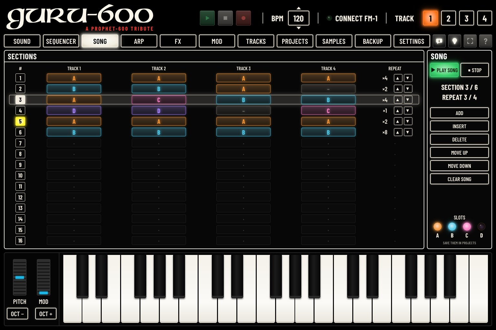
| ControlCommandeBedienelementMandoComando控制器操作子 | What it doesCe qu’elle faitFunktionQué haceFunzione功能機能 |
|---|---|
| INSERTINSÉREREINFÜGENINSERTARINSERISCI插入挿入 | Inserts a new section (A A A A ×1) at the chosen row.Insère une nouvelle section (A A A A ×1) à la ligne choisie.Fügt an der ausgewählten Zeile einen neuen Abschnitt (A A A A ×1) ein.Inserta una sección nueva (A A A A ×1) en la fila elegida.Inserisce una nuova sezione (A A A A ×1) alla riga scelta.在所选行插入一个新段落（A A A A ×1）。選んだ行に新しいセクション（A A A A ×1）を挿入します。 |
| DELETESUPPRIMERLÖSCHENBORRARELIMINA删除削除 | Deletes the chosen section.Supprime la section choisie.Löscht den ausgewählten Abschnitt.Borra la sección elegida.Elimina la sezione scelta.删除所选段落。選んだセクションを削除します。 |
| MOVE UP, MOVE DOWNMONTER, DESCENDRENACH OBEN, NACH UNTENSUBIR, BAJARSU, GIÙ上移, 下移上へ, 下へ | Moves the chosen section one row up or down.Monte ou descend la section choisie d’une ligne.Verschiebt den ausgewählten Abschnitt um eine Zeile nach oben oder unten.Sube o baja una fila la sección elegida.Sposta la sezione scelta di una riga in alto o in basso.将所选段落上移或下移一行。選んだセクションを1行上または下に移動します。 |
| CLEAR SONGEFFACER LE MORCEAUSONG LÖSCHENBORRAR CANCIÓNCANCELLA BRANO清除乐曲ソング消去 | Deletes every section, after a confirmation.Supprime toutes les sections, après confirmation.Löscht nach einer Bestätigung alle Abschnitte.Borra todas las secciones, tras una confirmación.Elimina tutte le sezioni, dopo una conferma.经确认后，删除所有段落。確認のあと、すべてのセクションを削除します。 |
Each change is sent to the FM-1 at once.
Chaque changement est envoyé aussitôt au FM-1.
Jede Änderung wird sofort an den FM-1 gesendet.
Cada cambio se envía al instante al FM-1.
Ogni modifica viene inviata subito all’FM-1.
每次更改都会立即发送到 FM-1。
変更はすべて、すぐに FM-1 に送られます。
| ControlCommandeBedienelementMandoComando控制器操作子 | What it doesCe qu’elle faitFunktionQué haceFunzione功能機能 |
|---|---|
| ▶ PLAY SONG▶ JOUER▶ ABSPIELEN▶ REPRODUCIR▶ SUONA▶ 播放乐曲▶ ソング再生 | Plays the sections from the first one. Lit green while the song plays. The section playing is lit in the list; the panel shows SECTION n / total and REPEAT n / total.Joue les sections depuis la première. Éclairé en vert pendant le morceau. La section jouée s’éclaire dans la liste ; le panneau indique SECTION n / total et REPEAT n / total.Spielt die Abschnitte ab dem ersten. Leuchtet grün, während der Song läuft. Der spielende Abschnitt leuchtet in der Liste; das Bedienfeld zeigt SECTION n / total und REPEAT n / total.Toca las secciones desde la primera. Se ilumina en verde mientras suena la canción. La sección que suena se ilumina en la lista; el panel muestra SECTION n / total y REPEAT n / total.Suona le sezioni a partire dalla prima. Acceso in verde mentre la song suona. La sezione in riproduzione si illumina nell’elenco; il pannello indica SECTION n / total e REPEAT n / total.从第一个段落开始播放。歌曲播放时亮绿色。正在播放的段落在列表中亮起；面板显示 SECTION n / total 和 REPEAT n / total。最初のセクションから再生します。ソングの再生中は緑に点灯します。再生中のセクションはリスト内で点灯し、パネルには SECTION n / total と REPEAT n / total が表示されます。 |
| ■ STOP■ ARRÊT■ STOPP■ PARAR■ STOP■ 停止■ 停止 | Stops the song.Arrête le morceau.Stoppt den Song.Detiene la canción.Ferma la song.停止歌曲。ソングを停止します。 |
While a song plays, the steps cannot be edited: stop it first.
Pendant le morceau, les pas ne peuvent pas être modifiés : arrêtez-le d’abord.
Während ein Song läuft, können die Steps nicht bearbeitet werden: Stoppen Sie ihn zuerst.
Mientras suena una canción, los pasos no pueden editarse: deténgala antes.
Mentre una song suona, i passi non si possono modificare: fermarla prima.
歌曲播放期间无法编辑各步：请先停止。
ソングの再生中はステップを編集できません。先にソングを停止してください。
The ARP page gathers what turns the keys you play into music: the arpeggiator, the scale the keys play in, and the chord keys. These settings belong to the selected track, with any engine: they stay when you change sounds.
La page ARP rassemble ce qui transforme les touches jouées en musique : l’arpégiateur, la gamme dans laquelle jouent les touches, et les accords. Ces réglages appartiennent à la piste choisie, quel que soit son moteur : ils restent quand vous changez de son.
Die Seite ARP vereint, was die gespielten Tasten in Musik verwandelt: den Arpeggiator, die Skala, in der die Tasten spielen, und die Akkordtasten. Diese Einstellungen gehören zur ausgewählten Spur, mit jeder Klangerzeugung: Sie bleiben erhalten, wenn Sie den Sound wechseln.
La página ARP reúne lo que convierte en música las teclas que toca: el arpegiador, la escala en la que tocan las teclas y las teclas de acordes. Estos ajustes pertenecen a la pista seleccionada, con cualquier motor: se mantienen al cambiar de sonido.
La pagina ARP riunisce ciò che trasforma in musica i tasti suonati: l’arpeggiatore, la scala in cui suonano i tasti e i tasti accordo. Questi parametri appartengono alla traccia selezionata, con qualsiasi motore: restano quando si cambia suono.
ARP 页面汇集了将您弹奏的琴键变成音乐的功能：琶音器、琴键所用的音阶，以及和弦键。这些设置属于所选音轨，适用于任何引擎：切换音色时保持不变。
ARP ページには、弾いた鍵盤を音楽に変える機能がまとめられています：アルペジエーター、鍵盤が従うスケール、コード・キーです。これらの設定は、エンジンにかかわらず選択中のトラックに属し、サウンドを切り替えても変わりません。
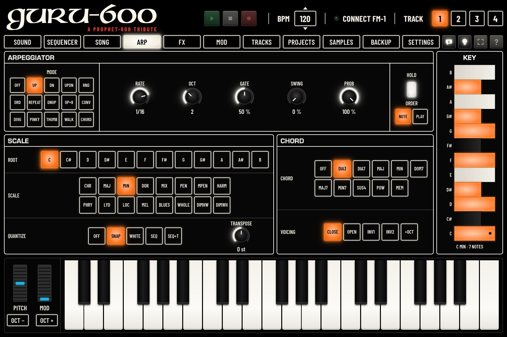
The arpeggiator plays the notes you hold one after the other, in time with the tempo. Set MODE to OFF to play normally again.
L’arpégiateur joue l’une après l’autre les notes tenues, en rythme avec le tempo. Réglez MODE sur OFF pour revenir au jeu normal.
Der Arpeggiator spielt die gehaltenen Noten nacheinander, im Takt des Tempos. Stellen Sie MODE auf OFF, um wieder normal zu spielen.
El arpegiador toca una tras otra las notas que mantiene pulsadas, al ritmo del tempo. Ponga MODE en OFF para volver a tocar con normalidad.
L’arpeggiatore suona una dopo l’altra le note tenute, a tempo. Impostare MODE su OFF per tornare a suonare normalmente.
琶音器按照速度的节奏，将您按住的音符逐个演奏。将 MODE 设为 OFF 即恢复正常演奏。
アルペジエーターは、押さえているノートをテンポに合わせて1つずつ順に演奏します。通常の演奏に戻すには、MODE を OFF にします。
| ControlCommandeBedienelementMandoComando控制器操作子 | What it doesCe qu’elle faitFunktionQué haceFunzione功能機能 | ValuesValeursWerteValoresValori取值値 |
|---|---|---|
| MODEMODEMODUSMODOMODO模式モード | OFF, UP, DN, UPDN, RND, ORD (the order you pressed them), REPEAT, and for chords DNUP, UP+8, CONV, DIVG, PINKY, THUMB, WALK, CHORD.OFF, UP, DN, UPDN, RND, ORD (l’ordre d’appui), REPEAT, et pour les accords DNUP, UP+8, CONV, DIVG, PINKY, THUMB, WALK, CHORD.OFF, UP, DN, UPDN, RND, ORD (die Reihenfolge, in der Sie sie gedrückt haben), REPEAT und für Akkorde DNUP, UP+8, CONV, DIVG, PINKY, THUMB, WALK, CHORD.OFF, UP, DN, UPDN, RND, ORD (el orden en que las pulsó), REPEAT y, para acordes, DNUP, UP+8, CONV, DIVG, PINKY, THUMB, WALK, CHORD.OFF, UP, DN, UPDN, RND, ORD (l’ordine in cui sono state premute), REPEAT, e per gli accordi DNUP, UP+8, CONV, DIVG, PINKY, THUMB, WALK, CHORD.OFF、UP、DN、UPDN、RND、ORD（按您按下的顺序）、REPEAT，以及用于和弦的 DNUP、UP+8、CONV、DIVG、PINKY、THUMB、WALK、CHORD。OFF、UP、DN、UPDN、RND、ORD（押した順）、REPEAT、和音用に DNUP、UP+8、CONV、DIVG、PINKY、THUMB、WALK、CHORD。 | 15 modes15 modes15 Modi15 modos15 modalità15 种模式15 モード |
| RATEVITESSEGESCHW.VELOC.VELOC.速率レート | The note value of each step, 4 bars to 1/32.La valeur de chaque note, de 4 mesures à 1/32.Der Notenwert jedes Schritts, 4 Takte bis 1/32.El valor de nota de cada paso, de 4 compases a 1/32.Il valore di nota di ogni passo, da 4 battute a 1/32.每一步的音符时值，4 小节至 1/32。各ステップの音価、4小節〜1/32。 | 10 values10 valeurs10 Werte10 valores10 valori10 个数值10 種類 |
| OCTOCTOCTOCTOCTOCTOCT | How many octaves it climbs.Le nombre d’octaves parcourues.Über wie viele Oktaven er steigt.Cuántas octavas sube.Quante ottave sale.向上攀升几个八度。何オクターブ上がるか。 | 1–41–41–41–41–41–41–4 |
| GATEGATEGATEGATEGATEGATEGATE | The length of each note.La longueur de chaque note.Die Länge jeder Note.La duración de cada nota.La durata di ogni nota.每个音符的长度。各ノートの長さ。 | 1–100 %1–100 %1–100 %1–100 %1–100 %1–100%1–100% |
| SWINGSWINGSWINGSWINGSWINGSWINGSWING | Swing.Swing.Swing.Swing.Swing.摇摆。スウィング。 | 0–100 %0–100 %0–100 %0–100 %0–100 %0–100%0–100% |
| PROBPROBABILITÉW'KEITPROB.PROB.概率確率 | The chance that each note plays.La probabilité que chaque note joue.Die Wahrscheinlichkeit, dass jede Note spielt.La probabilidad de que suene cada nota.La probabilità che ogni nota suoni.每个音符演奏的概率。各ノートが鳴る確率。 | 0–100 %0–100 %0–100 %0–100 %0–100 %0–100%0–100% |
| HOLDTENUEHALTENRETENERTENUTA保持ホールド | ON: the notes keep playing after you let go (latch); a new chord replaces them.ON : les notes continuent après le relâchement (verrouillage) ; un nouvel accord les remplace.ON: Die Noten spielen nach dem Loslassen weiter (Latch); ein neuer Akkord ersetzt sie.ON: las notas siguen sonando después de soltarlas (retención); un nuevo acorde las sustituye.ON: le note continuano a suonare dopo il rilascio (latch); un nuovo accordo le sostituisce.ON：松开后音符继续演奏（锁存）；新的和弦会将其替换。ON：指を離してもノートが鳴り続けます（ラッチ）。新しい和音を押すと置き換わります。 | OFF / ONOFF / ONOFF / ONOFF / ONOFF / ONOFF / ONOFF / ON |
| ORDERORDREREIHENF.ORDENORDINE顺序順番 | NOTE: by pitch. PLAY: in the order you played.NOTE : par hauteur. PLAY : dans l’ordre joué.NOTE: nach Tonhöhe. PLAY: in der gespielten Reihenfolge.NOTE: por altura. PLAY: en el orden en que las tocó.NOTE: per altezza. PLAY: nell’ordine in cui sono state suonate.NOTE：按音高。PLAY：按您演奏的顺序。NOTE：音程順。PLAY：弾いた順。 | 2 choices2 choix2 Optionen2 opciones2 scelte2 个选项2種類 |
| ControlCommandeBedienelementMandoComando控制器操作子 | What it doesCe qu’elle faitFunktionQué haceFunzione功能機能 | ValuesValeursWerteValoresValori取值値 |
|---|---|---|
| ROOTTONIQUETONIKATÓNICATONICA根音ルート | The scale’s root note, C to B.La note de départ de la gamme, de C à B.Der Grundton der Skala, C bis B.La nota fundamental de la escala, de C a B.La tonica della scala, da C a B.音阶的主音，C 至 B。スケールのルート音（C〜B）。 | 12 notes12 notes12 Noten12 notas12 note12 个音12 音 |
| SCALEGAMMESKALAESCALASCALA音阶スケール | The scale: CHR (chromatic: no scale), MAJ, MIN, DOR, MIX, PEN, MPEN, HARM, PHRY, LYD, LOC, MEL, BLUES, WHOLE, DIMHW, DIMWH.La gamme : CHR (chromatique : pas de gamme), MAJ, MIN, DOR, MIX, PEN, MPEN, HARM, PHRY, LYD, LOC, MEL, BLUES, WHOLE, DIMHW, DIMWH.Die Skala: CHR (chromatisch: keine Skala), MAJ, MIN, DOR, MIX, PEN, MPEN, HARM, PHRY, LYD, LOC, MEL, BLUES, WHOLE, DIMHW, DIMWH.La escala: CHR (cromática: sin escala), MAJ, MIN, DOR, MIX, PEN, MPEN, HARM, PHRY, LYD, LOC, MEL, BLUES, WHOLE, DIMHW, DIMWH.La scala: CHR (cromatica: nessuna scala), MAJ, MIN, DOR, MIX, PEN, MPEN, HARM, PHRY, LYD, LOC, MEL, BLUES, WHOLE, DIMHW, DIMWH.音阶：CHR（半音阶：不限定音阶）、MAJ、MIN、DOR、MIX、PEN、MPEN、HARM、PHRY、LYD、LOC、MEL、BLUES、WHOLE、DIMHW、DIMWH。スケール：CHR（クロマチック：スケールなし）、MAJ、MIN、DOR、MIX、PEN、MPEN、HARM、PHRY、LYD、LOC、MEL、BLUES、WHOLE、DIMHW、DIMWH。 | 16 scales16 gammes16 Skalen16 escalas16 scale16 种音阶16 スケール |
| QUANTIZEQUANTIZEQUANTIZEQUANTIZEQUANTIZEQUANTIZEQUANTIZE | How the keys follow the scale: OFF (every key plays its own note), SNAP (a note outside the scale is moved down into it), WHITE (the scale on the white keys only: C4 plays ROOT, the black keys are silent), SEQ (like SNAP, and the sequence also plays in the scale), SEQ+T (like SEQ, and TRANSPOSE transposes the sequence too).Comment les touches suivent la gamme : OFF (chaque touche joue sa note), SNAP (une note hors gamme est ramenée dans la gamme, vers le bas), WHITE (la gamme sur les seules touches blanches : C4 joue ROOT, les noires sont muettes), SEQ (comme SNAP, et la séquence joue aussi dans la gamme), SEQ+T (comme SEQ, et TRANSPOSE transpose aussi la séquence).Wie die Tasten der Skala folgen: OFF (jede Taste spielt ihre eigene Note), SNAP (eine Note außerhalb der Skala wird nach unten in die Skala verschoben), WHITE (die Skala nur auf den weißen Tasten: C4 spielt ROOT, die schwarzen Tasten schweigen), SEQ (wie SNAP, und auch die Sequenz spielt in der Skala), SEQ+T (wie SEQ, und TRANSPOSE transponiert auch die Sequenz).Cómo siguen las teclas la escala: OFF (cada tecla toca su propia nota), SNAP (una nota fuera de la escala se desplaza hacia abajo hasta entrar en ella), WHITE (la escala solo en las teclas blancas: C4 toca ROOT, las teclas negras quedan mudas), SEQ (como SNAP, y la secuencia también suena en la escala), SEQ+T (como SEQ, y TRANSPOSE transpone también la secuencia).Come i tasti seguono la scala: OFF (ogni tasto suona la propria nota), SNAP (una nota fuori scala viene spostata in basso dentro la scala), WHITE (la scala solo sui tasti bianchi: C4 suona ROOT, i tasti neri tacciono), SEQ (come SNAP, e anche la sequenza suona nella scala), SEQ+T (come SEQ, e TRANSPOSE traspone anche la sequenza).琴键如何跟随音阶：OFF（每个琴键演奏其本身的音）、SNAP（音阶外的音向下移入音阶）、WHITE（音阶只分布在白键上：C4 演奏 ROOT，黑键不发声）、SEQ（与 SNAP 相同，且音序也按音阶演奏）、SEQ+T（与 SEQ 相同，且 TRANSPOSE 也移调音序）。鍵盤がスケールにどう従うか：OFF（各鍵盤がそれぞれの音を演奏）、SNAP（スケール外の音はスケール内の下の音に移動）、WHITE（白鍵だけでスケールを演奏。C4 が ROOT を演奏し、黒鍵は無音）、SEQ（SNAP と同様で、シーケンスもスケール内で演奏）、SEQ+T（SEQ と同様で、TRANSPOSE でシーケンスも移調）。 | 5 modes5 modes5 Modi5 modos5 modalità5 种模式5 モード |
| TRANSPOSETRANSPOS.TRANSPON.TRANSPONERTRASPORTO移调移調 | Transposes what the keys play, in semitones.Transpose ce que jouent les touches, en demi-tons.Transponiert, was die Tasten spielen, in Halbtönen.Transpone lo que tocan las teclas, en semitonos.Traspone ciò che suonano i tasti, in semitoni.将琴键演奏的音移调，以半音为单位。鍵盤で演奏する音を半音単位で移調します。 | −24 / +24 st−24 / +24 st−24 / +24 Halbtöne−24 / +24 st−24 / +24 st−24 / +24 st−24 / +24 半音 |
KEY, on the right: the notes of the scale, lit on one octave (the root marked with a dot), and their number.
TONALITÉ, à droite : les notes de la gamme, allumées sur une octave (la note de départ marquée d’un point), et leur nombre.
TONART, rechts: die Noten der Skala, auf einer Oktave leuchtend (der Grundton mit einem Punkt markiert), und ihre Anzahl.
TONALIDAD, a la derecha: las notas de la escala, encendidas en una octava (la fundamental marcada con un punto), y su número.
TONALITÀ, a destra: le note della scala, accese su un’ottava (la tonica segnata da un punto), e il loro numero.
右侧的 调：音阶中的音，在一个八度上亮起（主音以圆点标记），以及音的数量。
右側の キー：スケールの音が1オクターブ分点灯し（ルートは点で表示）、その数も表示されます。
One finger plays a chord.
Un doigt joue un accord.
Ein Finger spielt einen Akkord.
Un dedo toca un acorde.
Un dito suona un accordo.
一根手指弹出一个和弦。
指1本でコードを演奏します。
| ControlCommandeBedienelementMandoComando控制器操作子 | What it doesCe qu’elle faitFunktionQué haceFunzione功能機能 | ValuesValeursWerteValoresValori取值値 |
|---|---|---|
| CHORDACCORDAKKORDACORDEACC.和弦コード | The chord keys: OFF, DIA3 (the scale’s triads: every chord is in key), DIA7 (the scale’s sevenths), MAJ, MIN, DOM7, MAJ7, MIN7, SUS4, POW (fixed shapes on every key), MEM (your own chord, learned on the FM-1).Les accords : OFF, DIA3 (les triades de la gamme : chaque accord est dans la tonalité), DIA7 (les septièmes de la gamme), MAJ, MIN, DOM7, MAJ7, MIN7, SUS4, POW (des formes fixes sur chaque touche), MEM (votre propre accord, appris sur le FM-1).Die Akkordtasten: OFF, DIA3 (die Dreiklänge der Skala: jeder Akkord ist in der Tonart), DIA7 (die Septakkorde der Skala), MAJ, MIN, DOM7, MAJ7, MIN7, SUS4, POW (feste Griffe auf jeder Taste), MEM (Ihr eigener Akkord, am FM-1 gelernt).Las teclas de acordes: OFF, DIA3 (las tríadas de la escala: todos los acordes están en la tonalidad), DIA7 (los acordes de séptima de la escala), MAJ, MIN, DOM7, MAJ7, MIN7, SUS4, POW (formas fijas en todas las teclas), MEM (su propio acorde, aprendido en el FM-1).I tasti accordo: OFF, DIA3 (le triadi della scala: ogni accordo è in tonalità), DIA7 (le settime della scala), MAJ, MIN, DOM7, MAJ7, MIN7, SUS4, POW (forme fisse su ogni tasto), MEM (un proprio accordo, appreso sull’FM-1).和弦键：OFF、DIA3（音阶的三和弦：每个和弦都在调内）、DIA7（音阶的七和弦）、MAJ、MIN、DOM7、MAJ7、MIN7、SUS4、POW（每个琴键上固定的和弦形态）、MEM（您自己的和弦，在 FM-1 上学习）。コード・キー：OFF、DIA3（スケールの三和音。どのコードもキーに合います）、DIA7（スケールの七の和音）、MAJ、MIN、DOM7、MAJ7、MIN7、SUS4、POW（どの鍵盤でも同じ形）、MEM（FM-1 で覚えさせた自分のコード）。 | 11 choices11 choix11 Optionen11 opciones11 scelte11 个选项11の選択肢 |
| VOICINGDISPOSIT.LAGEDISPOSIC.DISPOSIZ.排列和音配置 | The voicing: CLOSE, OPEN (spread out), INV1, INV2 (inversions), +OCT (the root added an octave below; a seventh then drops its fifth).La disposition : CLOSE (serré), OPEN (écarté), INV1, INV2 (renversements), +OCT (la fondamentale ajoutée à l’octave inférieure ; une septième perd alors sa quinte).Das Voicing: CLOSE, OPEN (gespreizt), INV1, INV2 (Umkehrungen), +OCT (der Grundton eine Oktave tiefer hinzugefügt; ein Septakkord verliert dann seine Quinte).La disposición: CLOSE (cerrada), OPEN (abierta), INV1, INV2 (inversiones), +OCT (la fundamental añadida una octava más abajo; una séptima pierde entonces su quinta).Il voicing: CLOSE, OPEN (aperto), INV1, INV2 (rivolti), +OCT (la tonica aggiunta un’ottava sotto; una settima perde allora la quinta).和弦排列：CLOSE（密集）、OPEN（展开）、INV1、INV2（转位）、+OCT（在低八度加入根音；七和弦此时会省去五音）。ボイシング：CLOSE、OPEN（広げた配置）、INV1、INV2（転回形）、+OCT（ルートを1オクターブ下に追加。セブンスでは5度が省かれます）。 | 5 choices5 choix5 Optionen5 opciones5 scelte5 个选项5つの選択肢 |
DIA3 and DIA7 follow the scale set above (with SCALE on CHR, the major scale of ROOT); a key outside the scale takes the scale note below it. A chord uses as many voices as it has notes. In MONO, LEGATO or UNISON, the track plays only the chord’s root; DRUM and SLICE tracks ignore the chord keys.
DIA3 et DIA7 suivent la gamme réglée plus haut (avec SCALE sur CHR, la gamme majeure de ROOT) ; une touche hors gamme prend la note de la gamme juste en dessous. Un accord utilise autant de voix qu’il a de notes. En MONO, LEGATO ou UNISON, la piste ne joue que la fondamentale de l’accord ; les pistes DRUM et SLICE ignorent les accords.
DIA3 und DIA7 folgen der oben eingestellten Skala (mit SCALE auf CHR die Durtonleiter von ROOT); eine Taste außerhalb der Skala nimmt die Skalennote darunter. Ein Akkord belegt so viele Stimmen, wie er Noten hat. In MONO, LEGATO oder UNISON spielt die Spur nur den Grundton des Akkords; DRUM- und SLICE-Spuren ignorieren die Akkordtasten.
DIA3 y DIA7 siguen la escala ajustada arriba (con SCALE en CHR, la escala mayor de ROOT); una tecla fuera de la escala toma la nota de la escala inmediatamente inferior. Un acorde usa tantas voces como notas tiene. En MONO, LEGATO o UNISON, la pista solo toca la fundamental del acorde; las pistas DRUM y SLICE ignoran las teclas de acordes.
DIA3 e DIA7 seguono la scala impostata sopra (con SCALE su CHR, la scala maggiore di ROOT); un tasto fuori scala prende la nota della scala immediatamente sotto. Un accordo usa tante voci quante sono le sue note. In MONO, LEGATO o UNISON, la traccia suona solo la fondamentale dell’accordo; le tracce DRUM e SLICE ignorano i tasti accordo.
DIA3 和 DIA7 跟随上面设置的音阶（SCALE 为 CHR 时，使用 ROOT 的大调音阶）；音阶外的琴键取其下方最近的音阶音。和弦有多少个音就占用多少个复音。在 MONO、LEGATO 或 UNISON 模式下，音轨只演奏和弦的根音；DRUM 和 SLICE 音轨忽略和弦键。
DIA3 と DIA7 は、上で設定したスケールに従います（SCALE が CHR のときは ROOT のメジャー・スケール）。スケール外の鍵盤は、その下のスケール音を使います。コードは、ノート数と同じ数のボイスを使います。MONO、LEGATO、UNISON では、トラックはコードのルートだけを演奏します。DRUM と SLICE のトラックはコード・キーを無視します。
The FX page follows the sound’s path. Under TRACK n, the selected track’s own effects: DIST and INSERT, then the SLICER, then the SENDS. Under ALL TRACKS, the effects the four tracks share, in the order of the sends (CHORUS, DELAY, REVERB), and MASTER on the right. A shared effect the track sends nothing to is dimmed and says TRACK n · SEND 0 %: its knobs still work for the other tracks.
La page FX suit le trajet du son. Sous PISTE n, les effets propres à la piste choisie : DIST et INSERT, puis le SLICER, puis les SENDS. Sous TOUTES LES PISTES, les effets communs aux quatre pistes, dans l’ordre des envois (CHORUS, DELAY, REVERB), et MASTER à droite. Un effet commun auquel la piste n’envoie rien est estompé et indique PISTE n · SEND 0 % : ses boutons agissent toujours pour les autres pistes.
Die Seite FX folgt dem Weg des Klangs. Unter SPUR n die eigenen Effekte der gewählten Spur: DIST und INSERT, dann der SLICER, dann die SENDS. Unter ALLE SPUREN die Effekte, die sich die vier Spuren teilen, in der Reihenfolge der Sends (CHORUS, DELAY, REVERB), und MASTER rechts. Ein gemeinsamer Effekt, an den die Spur nichts sendet, ist abgeblendet und zeigt SPUR n · SEND 0 %: Seine Regler wirken weiterhin für die anderen Spuren.
La página FX sigue el recorrido del sonido. En PISTA n, los efectos propios de la pista elegida: DIST e INSERT, luego el SLICER, luego los SENDS. En TODAS LAS PISTAS, los efectos que comparten las cuatro pistas, en el orden de los envíos (CHORUS, DELAY, REVERB), y MASTER a la derecha. Un efecto compartido al que la pista no envía nada aparece atenuado e indica PISTA n · SEND 0 %: sus mandos siguen actuando para las demás pistas.
La pagina FX segue il percorso del suono. Sotto TRACCIA n, gli effetti propri della traccia scelta: DIST e INSERT, poi lo SLICER, poi le SENDS. Sotto TUTTE LE TRACCE, gli effetti condivisi dalle quattro tracce, nell’ordine delle mandate (CHORUS, DELAY, REVERB), e MASTER a destra. Un effetto condiviso a cui la traccia non invia nulla appare attenuato e indica TRACCIA n · SEND 0 %: le sue manopole agiscono comunque per le altre tracce.
FX 页面按声音的路径排列。音轨 n 下：所选音轨自身的效果，依次为 DIST 和 INSERT、SLICER、SENDS。所有音轨 下：四个音轨共用的效果，按发送的顺序排列（CHORUS、DELAY、REVERB），右侧为 MASTER。音轨没有发送信号的共用效果会变暗并显示 音轨 n · SEND 0%：其旋钮对其他音轨仍然有效。
FX ページはサウンドの経路に沿って並んでいます。トラック n の下：選択中のトラック自身のエフェクト（DIST と INSERT、SLICER、SENDS の順）。全トラック の下：4 トラックで共有するエフェクト（センドと同じ順で CHORUS、DELAY、REVERB）と、右側の MASTER。トラックが何も送っていない共有エフェクトは暗く表示され、トラック n · SEND 0% と表示されます。そのノブはほかのトラックに対して引き続き有効です。
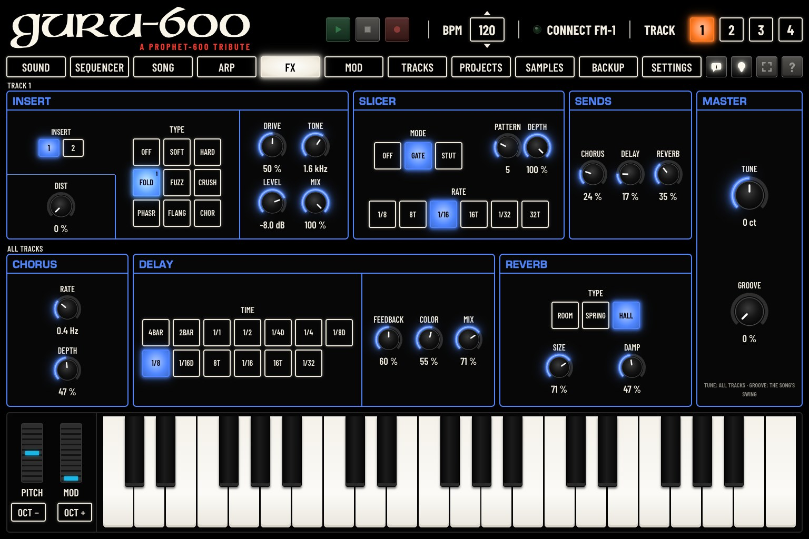
DIST, the first knob: the track’s own distortion, at the very start of its path. It is part of the sound: loading a sound sets it again.
DIST, le premier bouton : la distorsion propre à la piste, au tout début de son trajet. Elle fait partie du son : charger un son la redéfinit.
DIST, der erste Regler: die eigene Verzerrung der Spur, ganz am Anfang ihres Wegs. Sie gehört zum Sound: Das Laden eines Sounds stellt sie neu ein.
DIST, el primer mando: la distorsión propia de la pista, al principio de su recorrido. Forma parte del sonido: al cargar un sonido se vuelve a ajustar.
DIST, la prima manopola: la distorsione propria della traccia, all’inizio del suo percorso. Fa parte del suono: caricando un suono viene reimpostata.
DIST，第一个旋钮：音轨自身的失真，位于其路径的最开始。它属于音色的一部分：载入音色会重新设定它。
DIST（最初のノブ）：トラック自身のディストーションで、経路の最初にあります。サウンドの一部なので、サウンドを読み込むと設定し直されます。
An effect inserted on the track. Choose its TYPE; its three knobs take the names of that type. MIX: how much of the effect is heard against the dry sound.
Un effet inséré sur la piste. Choisissez son TYPE ; ses trois boutons prennent les noms de ce type. DOSAGE : la part d’effet entendue par rapport au son direct.
Ein in die Spur eingeschleifter Effekt. Wählen Sie seinen TYP; seine drei Regler tragen die Namen dieses Typs. MISCHUNG: wie viel Effekt im Verhältnis zum trockenen Klang zu hören ist.
Un efecto insertado en la pista. Elija su TIPO; sus tres potenciómetros toman los nombres de ese tipo. MEZCLA: cuánto se oye el efecto frente al sonido seco.
Un effetto inserito sulla traccia. Sceglierne il TIPO; le sue tre manopole prendono i nomi di quel tipo. MIX: quanto effetto si sente rispetto al suono diretto.
插入在音轨上的效果。选择其 类型；三个旋钮的名称随该类型而变。混合：效果声相对于干声的比例。
トラックにインサートするエフェクト。タイプ を選ぶと、3つのノブにそのタイプのパラメーター名が付きます。ミックス：ドライ音に対してエフェクトをどれだけ聞かせるか。
Two INSERTs follow each other on the track: the sound goes through INSERT 1, then INSERT 2 (for example a phaser then a flanger). The buttons 1 and 2 above DIST choose which one the TYPE grid and the knobs set. In the grid, the type of the INSERT chosen is lit, the other’s dimmer, each marked with its number.
Deux INSERT se suivent sur la piste : le son passe par l’INSERT 1, puis par l’INSERT 2 (par exemple un phaser puis un flanger). Les boutons 1 et 2 au-dessus de DIST choisissent celui que règlent la grille TYPE et les boutons. Dans la grille, le type de l’INSERT choisi est allumé, celui de l’autre plus faiblement, chacun marqué de son numéro.
Zwei INSERTs folgen auf der Spur aufeinander: Der Klang durchläuft INSERT 1, dann INSERT 2 (zum Beispiel ein Phaser, dann ein Flanger). Die Tasten 1 und 2 über DIST wählen, welchen das TYPE-Raster und die Regler einstellen. Im Raster leuchtet der Typ des gewählten INSERT, der des anderen schwächer, jeder mit seiner Nummer.
Dos INSERT se suceden en la pista: el sonido pasa por el INSERT 1 y luego por el INSERT 2 (por ejemplo un phaser y luego un flanger). Los botones 1 y 2 sobre DIST eligen cuál ajustan la cuadrícula TYPE y los mandos. En la cuadrícula, el tipo del INSERT elegido se ilumina y el del otro más tenue, cada uno marcado con su número.
Due INSERT si susseguono sulla traccia: il suono passa per l’INSERT 1, poi per l’INSERT 2 (per esempio un phaser poi un flanger). I pulsanti 1 e 2 sopra DIST scelgono quale regolano la griglia TYPE e le manopole. Nella griglia, il tipo dell’INSERT scelto è acceso, quello dell’altro più debole, ciascuno con il suo numero.
音轨上有两个依次串联的 INSERT：声音先经过 INSERT 1，再经过 INSERT 2（例如先移相器再镶边）。DIST 上方的 1 和 2 按钮选择 TYPE 网格和旋钮调节哪一个。网格中，所选 INSERT 的类型点亮，另一个的类型较暗，各自标有编号。
トラックには2 つの INSERT が順に並びます。音は INSERT 1、次に INSERT 2 を通ります（例：フェイザーの後にフランジャー）。DIST の上の 1 と 2 ボタンで、TYPE のグリッドとノブがどちらを設定するかを選びます。グリッドでは、選んだ INSERT のタイプが明るく、もう一方のタイプは暗めに点灯し、それぞれ番号が付きます。
| TYPETYPETYPETYPETYPETYPETYPE | What it isCe que c’estWas sie istQué esCos’è简介概要 | KnobsBoutonsReglerPotenciómetrosManopole旋钮ノブ |
|---|---|---|
| OFFOFFOFFOFFOFFOFFOFF | No insert effect.Pas d’effet inséré.Kein Insert-Effekt.Sin efecto de inserción.Nessun effetto insert.无插入效果。インサート・エフェクトなし。 | — |
| SOFT, HARD, FOLD, FUZZDOUX, DUR, FOLD, FUZZWEICH, HART, FOLD, FUZZSUAVE, DURO, FOLD, FUZZMORBIDO, DURO, FOLD, FUZZ柔和, 硬, FOLD, FUZZソフト, ハード, FOLD, FUZZ | Distortions, from the gentlest to the harshest.Des saturations, de la plus douce à la plus dure.Verzerrungen, von der sanftesten bis zur härtesten.Distorsiones, de la más suave a la más áspera.Distorsioni, dalla più dolce alla più aspra.各种失真，从最柔和到最刺耳。ディストーション。もっとも穏やかなものから、もっとも激しいものまで。 | DRIVE, TONE, LEVEL |
| CRUSHCRUSHCRUSHCRUSHCRUSHCRUSHCRUSH | Fewer bits and a lower sample rate: a lo-fi sound.Moins de bits et une fréquence d’échantillonnage plus basse : un son lo-fi.Weniger Bits und eine niedrigere Abtastrate: ein Lo-Fi-Klang.Menos bits y una frecuencia de muestreo más baja: un sonido lo-fi.Meno bit e una frequenza di campionamento più bassa: un suono lo-fi.更少的比特数和更低的采样率：低保真（lo-fi）音色。ビット数とサンプル・レートを下げた、ローファイ・サウンド。 | BITS (1 … 16), RATE (689 Hz … 44k), LPFBITS (1 … 16), RATE (689 Hz … 44k), LPFBITS (1 … 16), RATE (689 Hz … 44k), LPFBITS (1 … 16), RATE (689 Hz … 44k), LPFBITS (1 … 16), RATE (689 Hz … 44k), LPFBITS (1 … 16), RATE (689 Hz … 44k), LPFBITS（1 … 16）、RATE（689 Hz … 44k）、LPF |
| PHASR, FLANG, CHORPHASR, FLANG, CHORPHASR, FLANG, CHORPHASR, FLANG, CHORPHASR, FLANG, CHORPHASR, FLANG, CHORPHASR, FLANG, CHOR | Phaser, flanger, chorus on the track alone.Phaser, flanger, chorus sur la piste seule.Phaser, Flanger, Chorus nur auf der Spur.Phaser, flanger y chorus solo en la pista.Phaser, flanger, chorus sulla sola traccia.仅作用于该音轨的移相、镶边、合唱。トラック単独にかけるフェイザー、フランジャー、コーラス。 | RATE, DEPTH, FDBK |
A rhythmic gate or stutter, in time with the tempo.
Un hachage ou un bégaiement rythmique, calé sur le tempo.
Ein rhythmisches Gate oder Stottern, im Takt des Tempos.
Una puerta rítmica o un tartamudeo, al ritmo del tempo.
Un gate ritmico o uno stutter, a tempo.
跟随速度的节奏门限或断续效果。
テンポに同期したリズミカルなゲートまたはスタッター。
| ControlCommandeBedienelementMandoComando控制器操作子 | What it doesCe qu’elle faitFunktionQué haceFunzione功能機能 | ValuesValeursWerteValoresValori取值値 |
|---|---|---|
| MODEMODEMODEMODEMODEMODEMODE | OFF, GATE (cuts the sound in rhythm), STUT (repeats it).OFF, GATE (coupe le son en rythme), STUT (le répète).OFF, GATE (zerhackt den Klang rhythmisch), STUT (wiederholt ihn).OFF, GATE (corta el sonido de forma rítmica), STUT (lo repite).OFF, GATE (taglia il suono a ritmo), STUT (lo ripete).OFF、GATE（按节奏切断声音）、STUT（重复声音）。OFF、GATE（リズムに合わせて音を切る）、STUT（音を繰り返す）。 | OFF, GATE, STUTOFF, GATE, STUTOFF, GATE, STUTOFF, GATE, STUTOFF, GATE, STUTOFF, GATE, STUTOFF、GATE、STUT |
| PATTERNMOTIFMUSTERPATRÓNMOTIVO节奏型パターン | One of 16 rhythmic patterns.L’un des 16 motifs rythmiques.Eines von 16 rhythmischen Mustern.Uno de 16 patrones rítmicos.Uno dei 16 pattern ritmici.16 种节奏样式之一。16種類のリズム・パターンから1つを選びます。 | 1 … 161 … 161 … 161 … 161 … 161 … 161 … 16 |
| DEPTHPROFOND.TIEFEPROFUND.PROFOND.深度深さ | How deep it cuts.La profondeur du hachage.Wie tief es schneidet.Con qué profundidad corta.Quanto profondamente taglia.切割的深度。カットの深さ。 | 0 … 100 %0 … 100 %0 … 100 %0 … 100 %0 … 100 %0 … 100%0 … 100% |
| RATEVITESSEGESCHW.VELOC.VELOC.速率レート | The length of each slice.La durée de chaque tranche.Die Länge jedes Slices.La duración de cada fragmento.La durata di ogni slice.每个切片的长度。各スライスの長さ。 | 1/8, 8T, 1/16, 16T, 1/32, 32T1/8, 8T, 1/16, 16T, 1/32, 32T1/8, 8T, 1/16, 16T, 1/32, 32T1/8, 8T, 1/16, 16T, 1/32, 32T1/8, 8T, 1/16, 16T, 1/32, 32T1/8, 8T, 1/16, 16T, 1/32, 32T1/8、8T、1/16、16T、1/32、32T |
How much of the track goes to CHORUS, DELAY and REVERB, the shared effects below. The same knobs as FX SENDS on the SOUND page and on the TRACKS page. They are part of the sound: loading a sound sets them again.
La part de la piste envoyée vers CHORUS, DELAY et REVERB, les effets communs du dessous. Les mêmes boutons que FX SENDS sur la page SON et sur la page PISTES. Ils font partie du son : charger un son les redéfinit.
Wie viel von der Spur an CHORUS, DELAY und REVERB geht, die gemeinsamen Effekte darunter. Dieselben Regler wie FX SENDS auf der Seite KLANG und auf der Seite SPUREN. Sie gehören zum Sound: Das Laden eines Sounds stellt sie neu ein.
Cuánto de la pista se envía a CHORUS, DELAY y REVERB, los efectos compartidos de debajo. Los mismos mandos que FX SENDS en la página SONIDO y en la página PISTAS. Forman parte del sonido: al cargar un sonido se vuelven a ajustar.
Quanto della traccia va a CHORUS, DELAY e REVERB, gli effetti condivisi qui sotto. Le stesse manopole di FX SENDS nella pagina SUONO e nella pagina TRACCE. Fanno parte del suono: caricando un suono vengono reimpostate.
音轨发送到下方共用效果 CHORUS、DELAY 和 REVERB 的量。与 音色 页面和 音轨 页面上的 FX SENDS 是同样的旋钮。它们属于音色的一部分：载入音色会重新设定它们。
トラックを下の共有エフェクト CHORUS、DELAY、REVERB にどれだけ送るか。サウンド ページと トラック ページの FX SENDS と同じノブです。サウンドの一部なので、サウンドを読み込むと設定し直されます。
| ControlCommandeBedienelementMandoComando控制器操作子 | What it doesCe qu’elle faitFunktionQué haceFunzione功能機能 | ValuesValeursWerteValoresValori取值値 |
|---|---|---|
| CHORUS · RATECHORUS · VITESSECHORUS · GESCHW.CHORUS · VELOC.CHORUS · VELOC.CHORUS · 速率CHORUS · レート | The speed of the chorus.La vitesse du chorus.Die Geschwindigkeit des Chorus.La velocidad del chorus.La velocità del chorus.合唱的速度。コーラスのスピード。 | HzHzHzHzHzHzHz |
| CHORUS · DEPTHCHORUS · PROFOND.CHORUS · TIEFECHORUS · PROFUND.CHORUS · PROFOND.CHORUS · 深度CHORUS · 深さ | Its depth.Sa profondeur.Seine Tiefe.Su profundidad.La sua profondità.其深度。その深さ。 | 0 … 100 %0 … 100 %0 … 100 %0 … 100 %0 … 100 %0 … 100%0 … 100% |
| DELAY · TIMEDELAY · TEMPSDELAY · ZEITDELAY · TIEMPODELAY · TEMPODELAY · 时间DELAY · タイム | The time between repeats, in note values of the tempo (D: dotted, T: triplet).Le temps entre les répétitions, en valeurs de notes du tempo (D : pointée, T : triolet).Die Zeit zwischen den Wiederholungen, in Notenwerten des Tempos (D: punktiert, T: Triole).El tiempo entre repeticiones, en valores de nota del tempo (D: con puntillo, T: tresillo).Il tempo tra le ripetizioni, in valori di nota del tempo (D: puntata, T: terzina).重复之间的时间，以速度的音符时值表示（D：附点，T：三连音）。リピートの間隔。テンポに対する音価で設定します（D：付点、T：3連符）。 | 4BAR … 1/324BAR … 1/324BAR … 1/324BAR … 1/324BAR … 1/324BAR … 1/324BAR … 1/32 |
| DELAY · FEEDBACKDELAY · RÉINJECT.DELAY · RÜCKKOPPL.DELAY · REALIM.DELAY · RETROAZ.DELAY · 反馈DELAY · フィードバック | How long the repeats last: the higher, the more of them. They always fade away in the end.La durée des répétitions : plus il est haut, plus elles sont nombreuses. Elles finissent toujours par s’éteindre.Wie lange die Wiederholungen andauern: je höher, desto mehr. Am Ende klingen sie immer aus.Cuánto duran las repeticiones: cuanto más alto, más repeticiones. Siempre acaban desvaneciéndose.Quanto durano le ripetizioni: più è alto, più sono numerose. Alla fine si spengono sempre.重复持续的时长：数值越高，重复次数越多。重复最终总会消失。リピートが続く長さ：高くするほど回数が増えます。最後には必ず消えていきます。 | 0 … 120 %0 … 120 %0 … 120 %0 … 120 %0 … 120 %0 … 120%0 … 120% |
| DELAY · COLORDELAY · COULEURDELAY · FARBEDELAY · COLORDELAY · COLOREDELAY · 色彩DELAY · カラー | The tone of the repeats: darker to brighter.Le timbre des répétitions : plus sombre à plus clair.Der Klang der Wiederholungen: dunkler bis heller.El timbre de las repeticiones: de más oscuro a más brillante.Il timbro delle ripetizioni: da più scuro a più brillante.重复声的音色：从暗到亮。リピートの音色：暗い音から明るい音まで。 | 0 … 100 %0 … 100 %0 … 100 %0 … 100 %0 … 100 %0 … 100%0 … 100% |
| DELAY · MIXDELAY · DOSAGEDELAY · MISCHUNGDELAY · MEZCLADELAY · MIXDELAY · 混合DELAY · ミックス | The level of the delay.Le niveau du delay.Der Pegel des Delays.El nivel del retardo.Il livello del delay.延迟的电平。ディレイのレベル。 | 0 … 100 %0 … 100 %0 … 100 %0 … 100 %0 … 100 %0 … 100%0 … 100% |
| REVERB · TYPEREVERB · TYPEREVERB · TYPREVERB · TIPOREVERB · TIPOREVERB · 类型REVERB · タイプ | ROOM, SPRING or HALL.ROOM, SPRING ou HALL.ROOM, SPRING oder HALL.ROOM, SPRING o HALL.ROOM, SPRING o HALL.ROOM、SPRING 或 HALL。ROOM、SPRING、HALL のいずれか。 | ROOM, SPRING, HALLROOM, SPRING, HALLROOM, SPRING, HALLROOM, SPRING, HALLROOM, SPRING, HALLROOM, SPRING, HALLROOM、SPRING、HALL |
| REVERB · SIZEREVERB · TAILLEREVERB · GRÖSSEREVERB · TAMAÑOREVERB · DIMENS.REVERB · 大小REVERB · サイズ | The size of the space.La taille de l’espace.Die Größe des Raums.El tamaño del espacio.La dimensione dello spazio.空间的大小。空間の大きさ。 | 0 … 100 %0 … 100 %0 … 100 %0 … 100 %0 … 100 %0 … 100%0 … 100% |
| REVERB · DAMPREVERB · AMORTIREVERB · DÄMPF.REVERB · AMORT.REVERB · SMORZ.REVERB · 阻尼REVERB · ダンプ | How quickly the high frequencies fade.La vitesse à laquelle les aigus s’éteignent.Wie schnell die Höhen abklingen.La rapidez con la que se atenúan las frecuencias agudas.La rapidità con cui si spengono le frequenze alte.高频衰减的快慢。高い周波数が減衰する速さ。 | 0 … 100 %0 … 100 %0 … 100 %0 … 100 %0 … 100 %0 … 100%0 … 100% |
These settings are kept with the project, not with the sounds.
Ces réglages sont enregistrés avec le projet, pas avec les sons.
Diese Einstellungen werden mit dem Projekt behalten, nicht mit den Sounds.
Estos ajustes se conservan con el proyecto, no con los sonidos.
Questi parametri vengono conservati con il progetto, non con i suoni.
这些设置随工程保存，而不是随音色保存。
これらの設定は、サウンドではなくプロジェクトとともに保持されます。
| ControlCommandeBedienelementMandoComando控制器操作子 | What it doesCe qu’elle faitFunktionQué haceFunzione功能機能 | ValuesValeursWerteValoresValori取值値 |
|---|---|---|
| TUNEACCORD.STIMMENAFINARACCORDA调音チューン | The tuning of all the tracks, in cents. The same as TUNE on the SETTINGS page (chapter 14).L’accord de toutes les pistes, en cents. Le même que TUNE sur la page RÉGLAGES (chapitre 14).Die Stimmung aller Spuren, in Cent. Dasselbe wie TUNE auf der Seite SETUP (Kapitel 14).La afinación de todas las pistas, en cents. Lo mismo que TUNE en la página AJUSTES (capítulo 14).L’accordatura di tutte le tracce, in cent. La stessa di TUNE nella pagina IMPOSTAZIONI (capitolo 14).所有音轨的调音，单位为音分。与 设置 页面上的 TUNE 相同（第14章）。全トラックのチューニング（セント単位）。設定 ページの TUNE と同じです（第14章）。 | −50 … +50 ct−50 … +50 ct−50 … +50 ct−50 … +50 ct−50 … +50 ct−50 … +50 ct−50 … +50 ct |
| GROOVEGROOVEGROOVEGROOVEGROOVE律动グルーヴ | The swing of the whole song.Le swing de tout le morceau.Der Swing des ganzen Songs.El swing de toda la canción.Lo swing di tutta la song.整首歌曲的摇摆。ソング全体のスウィング。 | 0 … 100 %0 … 100 %0 … 100 %0 … 100 %0 … 100 %0 … 100%0 … 100% |
The MOD page gathers what moves the sound beyond the Prophet-600’s panel: the modulation matrix, the LFO’s other settings, the voice modes and the envelope’s destinations. ACTIVE, on the right, lists everything that modulates the sound now.
La page MOD rassemble ce qui fait bouger le son au-delà de la façade du Prophet-600 : la matrice de modulation, les autres réglages du LFO, les modes de voix et les destinations de l’enveloppe. ACTIVES, à droite, liste tout ce qui module le son en ce moment.
Die Seite MOD vereint, was den Klang über das Bedienfeld des Prophet-600 hinaus bewegt: die Modulationsmatrix, die weiteren Einstellungen des LFO, die Stimmenmodi und die Ziele der Hüllkurve. AKTIV rechts listet alles auf, was den Klang gerade moduliert.
La página MOD reúne lo que mueve el sonido más allá del panel del Prophet-600: la matriz de modulación, los demás ajustes del LFO, los modos de voz y los destinos de la envolvente. ACTIVAS, a la derecha, enumera todo lo que modula el sonido en ese momento.
La pagina MOD riunisce ciò che muove il suono oltre il pannello del Prophet-600: la matrice di modulazione, gli altri parametri dell’LFO, le modalità delle voci e le destinazioni dell’inviluppo. ATTIVE, a destra, elenca tutto ciò che modula il suono in questo momento.
MOD 页面汇集了 Prophet-600 面板之外调制声音的功能：调制矩阵、LFO 的其他设置、复音模式以及包络的目标。右侧的 生效中 列出当前调制声音的所有内容。
MOD ページには、Prophet-600 のパネルを超えてサウンドを動かす機能がまとめられています：モジュレーション・マトリクス、LFO のそのほかの設定、ボイス・モード、エンベロープの行き先です。右側の 有効 には、現在サウンドにかかっているモジュレーションがすべて表示されます。
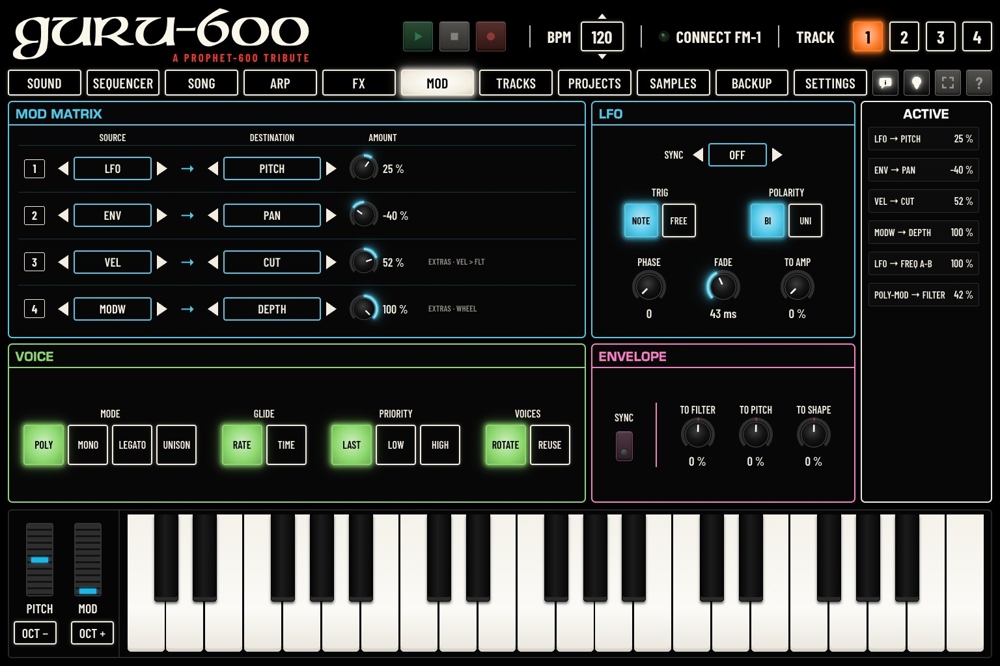
Loading a P600 sound resets this page, except TO AMP and the amounts of slots 3 and 4. Keep your settings with STORE THE TRACK’S SOUND (a USER sound) or a project (chapter 11).
Charger un son P600 réinitialise cette page, sauf TO AMP et les quantités des emplacements 3 et 4. Gardez vos réglages avec STORE THE TRACK’S SON (un son USER) ou un projet (chapitre 11).
Das Laden eines P600-Sounds setzt diese Seite zurück, außer TO AMP und den Werten der Slots 3 und 4. Behalten Sie Ihre Einstellungen mit STORE THE TRACK’S KLANG (ein USER-Sound) oder in einem Projekt (Kapitel 11).
Cargar un sonido P600 restablece esta página, excepto TO AMP y las cantidades de las ranuras 3 y 4. Conserve sus ajustes con STORE THE TRACK’S SONIDO (un sonido USER) o con un proyecto (capítulo 11).
Caricando un suono P600 questa pagina viene reimpostata, tranne TO AMP e le quantità degli slot 3 e 4. Conservare i propri parametri con STORE THE TRACK’S SUONO (un suono USER) o con un progetto (capitolo 11).
载入 P600 音色会重置此页面，但 TO AMP 以及第 3、4 槽的调制量除外。请用 STORE THE TRACK’S 音色（USER 音色）或工程（第11章）保留您的设置。
P600 サウンドを読み込むと、TO AMP とスロット3・4の量を除き、このページはリセットされます。設定を残すには、STORE THE TRACK’S サウンド（USER サウンド）またはプロジェクト（第11章）を使います。
The modulation matrix: four slots per track, each sending a source to a destination, in addition to the routings above.
La matrice de modulation : quatre emplacements par piste, chacun envoyant une source vers une destination, en plus des liaisons ci-dessus.
Die Modulationsmatrix: vier Slots pro Spur, die jeweils eine Quelle auf ein Ziel schicken, zusätzlich zu den Verbindungen oben.
La matriz de modulación: cuatro ranuras por pista, cada una envía una fuente a un destino, además de las asignaciones anteriores.
La matrice di modulazione: quattro slot per traccia, ciascuno dei quali invia una sorgente a una destinazione, oltre ai collegamenti descritti sopra.
调制矩阵：每个音轨四个槽位，每个槽位将一个调制源送往一个目标，是上述路由之外的补充。
モジュレーション・マトリクス：トラックごとに4つのスロットがあり、それぞれ上記のルーティングに加えて、ソースを変調先に送ります。
| ControlCommandeBedienelementMandoComando控制器操作子 | What it doesCe qu’elle faitFunktionQué haceFunzione功能機能 | ValuesValeursWerteValoresValori取值値 |
|---|---|---|
| SOURCESOURCEQUELLEFUENTESORGENTE源ソース | The source: OFF, LFO, ENV, VEL (velocity), KEY (the note), RAND (random per note), MODW (mod wheel), AT (aftertouch), EXPR (expression pedal), S&H, SLEW (a smoothed S&H).La source : OFF, LFO, ENV, VEL (vélocité), KEY (la note), RAND (au hasard à chaque note), MODW (molette), AT (aftertouch), EXPR (pédale d’expression), S&H, SLEW (un S&H adouci).Die Quelle: OFF, LFO, ENV, VEL (Anschlagstärke), KEY (die Note), RAND (zufällig pro Note), MODW (Modulationsrad), AT (Aftertouch), EXPR (Expression-Pedal), S&H, SLEW (ein geglättetes S&H).La fuente: OFF, LFO, ENV, VEL (velocidad), KEY (la nota), RAND (aleatorio por nota), MODW (rueda de modulación), AT (aftertouch), EXPR (pedal de expresión), S&H, SLEW (un S&H suavizado).La sorgente: OFF, LFO, ENV, VEL (velocity), KEY (la nota), RAND (casuale per nota), MODW (rotella di modulazione), AT (aftertouch), EXPR (pedale d’espressione), S&H, SLEW (un S&H smussato).调制源：OFF、LFO、ENV、VEL（力度）、KEY（音符）、RAND（每个音符随机）、MODW（调制轮）、AT（触后）、EXPR（表情踏板）、S&H、SLEW（平滑后的 S&H）。ソース：OFF、LFO、ENV、VEL（ベロシティ）、KEY（ノート）、RAND（ノートごとのランダム）、MODW（モジュレーション・ホイール）、AT（アフタータッチ）、EXPR（エクスプレッション・ペダル）、S&H、SLEW（滑らかにした S&H）。 | 11 choices11 choix11 Optionen11 opciones11 scelte11 个选项11の選択肢 |
| DESTINATIONDESTINATIONZIELDESTINODESTINAZIONE目标変調先 | The destination: PITCH, CUT, SHP, AMP, PAN, the effect sends DIST CHO DLY REV, RATE (the LFO’s speed), VIB (vibrato depth), the P600’s own settings (WAVE A, FREQ A, WAVE B, FREQ B, CUTOFF, RESONANCE, MIXER, ENV AMOUNT), DEPTH (the LFO’s depth), VEL (the note’s velocity), TIME (a step plays slightly late).La destination : PITCH, CUT, SHP, AMP, PAN, les envois d’effets DIST CHO DLY REV, RATE (vitesse du LFO), VIB (profondeur du vibrato), les réglages propres au P600 (WAVE A, FREQ A, WAVE B, FREQ B, CUTOFF, RESONANCE, MIXER, ENV AMOUNT), DEPTH (profondeur du LFO), VEL (vélocité de la note), TIME (un pas joue légèrement en retard).Das Ziel: PITCH, CUT, SHP, AMP, PAN, die Effekt-Sends DIST CHO DLY REV, RATE (die Geschwindigkeit des LFO), VIB (Vibratotiefe), die eigenen Einstellungen des P600 (WAVE A, FREQ A, WAVE B, FREQ B, CUTOFF, RESONANCE, MIXER, ENV AMOUNT), DEPTH (die Tiefe des LFO), VEL (die Anschlagstärke der Note), TIME (ein Step spielt leicht verzögert).El destino: PITCH, CUT, SHP, AMP, PAN, los envíos de efectos DIST CHO DLY REV, RATE (la velocidad del LFO), VIB (la profundidad del vibrato), los ajustes propios del P600 (WAVE A, FREQ A, WAVE B, FREQ B, CUTOFF, RESONANCE, MIXER, ENV AMOUNT), DEPTH (la profundidad del LFO), VEL (la velocidad de la nota), TIME (un paso suena ligeramente retrasado).La destinazione: PITCH, CUT, SHP, AMP, PAN, le mandate agli effetti DIST CHO DLY REV, RATE (la velocità dell’LFO), VIB (profondità del vibrato), i parametri propri del P600 (WAVE A, FREQ A, WAVE B, FREQ B, CUTOFF, RESONANCE, MIXER, ENV AMOUNT), DEPTH (la profondità dell’LFO), VEL (la velocity della nota), TIME (un passo suona leggermente in ritardo).目标：PITCH、CUT、SHP、AMP、PAN，效果发送 DIST CHO DLY REV，RATE（LFO 的速度），VIB（颤音深度），P600 本身的参数（WAVE A、FREQ A、WAVE B、FREQ B、CUTOFF、RESONANCE、MIXER、ENV AMOUNT），DEPTH（LFO 的深度），VEL（音符的力度），TIME（某一步略微延后演奏）。行き先：PITCH、CUT、SHP、AMP、PAN、エフェクト・センド DIST CHO DLY REV、RATE（LFO のスピード）、VIB（ビブラートの深さ）、P600 独自の設定（WAVE A、FREQ A、WAVE B、FREQ B、CUTOFF、RESONANCE、MIXER、ENV AMOUNT）、DEPTH（LFO の深さ）、VEL（ノートのベロシティ）、TIME（ステップがわずかに遅れて鳴る）。 | 23 choices23 choix23 Optionen23 opciones23 scelte23 个选项23の選択肢 |
| AMOUNTQUANTITÉINTENS.CANTIDADQUANTITÀ调制量変調量 | The amount, positive or negative. A double click: 0.La quantité, positive ou négative. Un double clic : 0.Der Wert, positiv oder negativ. Ein Doppelklick: 0.La cantidad, positiva o negativa. Un doble clic: 0.La quantità, positiva o negativa. Un doppio clic: 0.调制量，正值或负值。双击：0。量（プラスまたはマイナス）。ダブルクリックで0 になります。 | −100 / +100 %−100 / +100 %−100 / +100 %−100 / +100 %−100 / +100 %−100 / +100%−100 / +100% |
| ControlCommandeBedienelementMandoComando控制器操作子 | What it doesCe qu’elle faitFunktionQué haceFunzione功能機能 | ValuesValeursWerteValoresValori取值値 |
|---|---|---|
| SYNCSYNCSYNCSYNCSYNCSYNCSYNC | OFF (FREQUENCY on the SOUND page sets the speed) or a note value, 4BAR to 1/32, that follows the tempo.OFF (FREQUENCY sur la page SON règle la vitesse) ou une valeur de note, de 4BAR à 1/32, qui suit le tempo.OFF (FREQUENCY auf der Seite KLANG stellt die Geschwindigkeit ein) oder ein Notenwert, 4BAR bis 1/32, der dem Tempo folgt.OFF (FREQUENCY en la página SONIDO ajusta la velocidad) o un valor de nota, de 4BAR a 1/32, que sigue el tempo.OFF (FREQUENCY nella pagina SUONO imposta la velocità) oppure un valore di nota, da 4BAR a 1/32, che segue il tempo.OFF（由 音色 页面上的 FREQUENCY 设定速度）或跟随速度的音符时值，从 4BAR 到 1/32。OFF（サウンド ページの FREQUENCY でスピードを設定）、またはテンポに同期する音価（4BAR〜1/32）。 | 11 choices11 choix11 Optionen11 opciones11 scelte11 个选项11の選択肢 |
| TRIGTRIGTRIGTRIGTRIGTRIGTRIG | NOTE: the wave restarts at each note. FREE: it runs freely.NOTE : l’onde repart à chaque note. FREE : elle tourne librement.NOTE: Die Schwingung startet bei jeder Note neu. FREE: Sie läuft frei.NOTE: la onda se reinicia en cada nota. FREE: corre libremente.NOTE: l’onda riparte a ogni nota. FREE: scorre liberamente.NOTE：每个音符时波形重新开始。FREE：自由运行。NOTE：ノートごとに波が再スタートします。FREE：自由に動き続けます。 | 2 choices2 choix2 Optionen2 opciones2 scelte2 个选项2種類 |
| POLARITYPOLARITÉPOLARITÄTPOLARIDADPOLARITÀ极性極性 | BI: up and down around the setting. UNI: only above it.BI : au-dessus et au-dessous du réglage. UNI : seulement au-dessus.BI: auf und ab um die Einstellung herum. UNI: nur darüber.BI: arriba y abajo alrededor del ajuste. UNI: solo por encima.BI: sopra e sotto il valore impostato. UNI: solo sopra.BI：在设定值上下起伏。UNI：只在设定值之上。BI：設定値を中心に上下に動きます。UNI：設定値より上だけ。 | 2 choices2 choix2 Optionen2 opciones2 scelte2 个选项2種類 |
| PHASEPHASEPHASEFASEFASE相位位相 | Where the wave starts at each note.Où l’onde commence à chaque note.Wo die Schwingung bei jeder Note beginnt.Dónde empieza la onda en cada nota.Il punto da cui parte l’onda a ogni nota.每个音符时波形的起始位置。ノートごとに波がどこから始まるか。 | 0–1270–1270–1270–1270–1270–1270–127 |
| FADEFONDUEINBL.FUNDIDODISSOL.渐入フェード | Time for the LFO to come in after the note starts: a delayed vibrato.Temps d’arrivée du LFO après le début de la note : un vibrato retardé.Zeit, bis der LFO nach dem Notenbeginn einsetzt: ein verzögertes Vibrato.Tiempo que tarda el LFO en entrar después del inicio de la nota: un vibrato retardado.Tempo prima che l’LFO entri dopo l’inizio della nota: un vibrato ritardato.音符开始后 LFO 介入所需时间：延迟颤音。ノートが始まってから LFO がかかり始めるまでの時間：ディレイド・ビブラート。 | 1 ms – 10 s1 ms – 10 s1 ms – 10 s1 ms – 10 s1 ms – 10 s1 ms – 10 秒1 ms – 10秒 |
| TO AMP→ AMPLIZUM VERST.AL AMPLIALL'AMPLI至放大器アンプへ | Volume: tremolo.Volume : trémolo.Lautstärke: Tremolo.Volumen: trémolo.Volume: tremolo.音量：震音。音量：トレモロ。 | 0–100 %0–100 %0–100 %0–100 %0–100 %0–100%0–100% |
| ControlCommandeBedienelementMandoComando控制器操作子 | What it doesCe qu’elle faitFunktionQué haceFunzione功能機能 | ValuesValeursWerteValoresValori取值値 |
|---|---|---|
| MODEMODEMODUSMODOMODO模式モード | POLY (up to six notes), MONO (one note, each note restarts the envelopes), LEGATO (one note, the envelopes restart only after a gap), UNISON (all the voices on one note: the SOUND page’s UNISON).POLY (jusqu’à six notes), MONO (une note, chaque note relance les enveloppes), LEGATO (une note, les enveloppes ne repartent qu’après un silence), UNISON (toutes les voix sur une note : l’UNISON de la page SON).POLY (bis zu sechs Noten), MONO (eine Note, jede Note startet die Hüllkurven neu), LEGATO (eine Note, die Hüllkurven starten erst nach einer Pause neu), UNISON (alle Stimmen auf einer Note: UNISON der Seite KLANG).POLY (hasta seis notas), MONO (una nota; cada nota reinicia las envolventes), LEGATO (una nota; las envolventes solo se reinician después de una pausa), UNISON (todas las voces en una nota: el UNISON de la página SONIDO).POLY (fino a sei note), MONO (una nota, ogni nota fa ripartire gli inviluppi), LEGATO (una nota, gli inviluppi ripartono solo dopo una pausa), UNISON (tutte le voci su una nota: l’UNISON della pagina SUONO).POLY（最多六个音）、MONO（单音，每个音符都重新触发包络）、LEGATO（单音，包络仅在音符之间有间隙后才重新触发）、UNISON（所有复音叠在一个音上：即 音色 页面的 UNISON）。POLY（最大6音）、MONO（1音。ノートごとにエンベロープが再スタート）、LEGATO（1音。エンベロープは音が途切れたあとにのみ再スタート）、UNISON（すべてのボイスを1つのノートに。サウンド ページの UNISON）。 | 4 modes4 modes4 Modi4 modos4 modalità4 种模式4つのモード |
| GLIDEGLIDEGLIDEGLIDEGLIDEGLIDEGLIDE | How the glide is timed: RATE (a constant speed: a wide interval takes longer) or TIME (always the same time).Mode du glide : RATE (vitesse constante : un grand intervalle prend plus de temps) ou TIME (toujours le même temps).Wie das Glide berechnet wird: RATE (konstante Geschwindigkeit: ein großes Intervall dauert länger) oder TIME (immer dieselbe Zeit).Cómo se mide el portamento: RATE (una velocidad constante: un intervalo amplio tarda más) o TIME (siempre el mismo tiempo).Come viene calcolato il glide: RATE (una velocità costante: un intervallo ampio richiede più tempo) o TIME (sempre lo stesso tempo).滑音的计时方式：RATE（恒定速度：音程越大，用时越长）或 TIME（始终相同的时间）。グライドの時間の決め方：RATE（一定の速さ。音程差が大きいほど時間がかかる）または TIME（常に同じ時間）。 | 2 choices2 choix2 Optionen2 opciones2 scelte2 个选项2種類 |
| PRIORITYPRIORITÉPRIORITÄTPRIORIDADPRIORITÀ优先優先 | In MONO and LEGATO, which note sounds when you hold several: LAST, LOW or HIGH.En MONO et LEGATO, la note qui sonne quand vous en tenez plusieurs : LAST (la dernière), LOW (la plus grave) ou HIGH (la plus aiguë).In MONO und LEGATO, welche Note erklingt, wenn Sie mehrere halten: LAST, LOW oder HIGH.En MONO y LEGATO, qué nota suena cuando mantiene varias: LAST, LOW o HIGH.In MONO e LEGATO, quale nota suona quando se ne tengono premute diverse: LAST, LOW o HIGH.在 MONO 和 LEGATO 模式下，同时按住多个音时由哪个音发声：LAST（最后一个）、LOW（最低）或 HIGH（最高）。MONO と LEGATO で、複数のノートを押さえたときにどのノートを鳴らすか：LAST、LOW、HIGH。 | 3 choices3 choix3 Optionen3 opciones3 scelte3 个选项3種類 |
| VOICESATTRIB.ZUWEIS.ASIGN.ASSEGN.分配割当 | How notes take voices: ROTATE (in rotation, so a note’s release keeps ringing) or REUSE (a repeated note takes its own voice back).Attribution des voix : ROTATE (à tour de rôle : la fin d’une note continue ainsi de sonner) ou REUSE (une note répétée reprend sa propre voix).Wie Noten Stimmen belegen: ROTATE (reihum, sodass das Ausklingen einer Note weiterklingt) oder REUSE (eine wiederholte Note nimmt ihre eigene Stimme wieder).Cómo toman voces las notas: ROTATE (por turnos, de modo que la extinción de una nota sigue sonando) o REUSE (una nota repetida recupera su propia voz).Come le note prendono le voci: ROTATE (a rotazione, così il rilascio di una nota continua a suonare) o REUSE (una nota ripetuta riprende la propria voce).音符如何分配复音：ROTATE（轮流分配，因此音符的释音会继续鸣响）或 REUSE（重复的音符重新使用其原来的复音）。ノートへのボイスの割り当て方：ROTATE（順番に割り当てるので、ノートのリリースが鳴り続けます）または REUSE（繰り返したノートは、そのノートのボイスを再び使います）。 | 2 choices2 choix2 Optionen2 opciones2 scelte2 个选项2種類 |
The four tracks share the FM-1’s eight voices: a P600 track takes six at most, fewer if the other tracks are playing many notes.
Les quatre pistes se partagent les huit voix du FM-1 : une piste P600 en prend six au plus, moins si les autres pistes jouent beaucoup de notes.
Die vier Spuren teilen sich die acht Stimmen des FM-1: Eine P600-Spur nimmt höchstens sechs, weniger, wenn die anderen Spuren viele Noten spielen.
Las cuatro pistas comparten las ocho voces del FM-1: una pista P600 toma seis como máximo, menos si las demás pistas tocan muchas notas.
Le quattro tracce condividono le otto voci dell’FM-1: una traccia P600 ne prende al massimo sei, meno se le altre tracce suonano molte note.
四个音轨共享 FM-1 的八个复音：P600 音轨最多占用六个；其他音轨演奏许多音符时会更少。
4つのトラックは FM-1 の8ボイスを共有します。P600 トラックは最大6ボイスで、ほかのトラックが多くのノートを鳴らしているとそれより少なくなります。
The amplifier’s envelope (AMPLIFIER on the SOUND page) also moves other settings, by a positive or negative amount.
L’enveloppe de l’amplificateur (AMPLIFIER sur la page SON) fait aussi bouger d’autres réglages, d’une quantité positive ou négative.
Die Verstärkerhüllkurve (AMPLIFIER auf der Seite KLANG) bewegt auch andere Einstellungen, um einen positiven oder negativen Wert.
La envolvente del amplificador (AMPLIFIER en la página SONIDO) también mueve otros ajustes, en una cantidad positiva o negativa.
Anche l’inviluppo dell’amplificatore (AMPLIFIER nella pagina SUONO) muove altri parametri, di una quantità positiva o negativa.
放大器的包络（音色 页面上的 AMPLIFIER）也可按正值或负值的量调制其他参数。
アンプのエンベロープ（サウンド ページの AMPLIFIER）で、ほかの設定もプラスまたはマイナスの量で動かします。
| ControlCommandeBedienelementMandoComando控制器操作子 | What it doesCe qu’elle faitFunktionQué haceFunzione功能機能 | ValuesValeursWerteValoresValori取值値 |
|---|---|---|
| SYNCSYNCSYNCSYNCSYNCSYNCSYNC | ON: ATTACK, DECAY and RELEASE become note values (1/16, 1/4, 2BAR…) that follow the tempo.ON : ATTACK, DECAY et RELEASE deviennent des valeurs de notes (1/16, 1/4, 2BAR…) qui suivent le tempo.ON: ATTACK, DECAY und RELEASE werden zu Notenwerten (1/16, 1/4, 2BAR…), die dem Tempo folgen.ON: ATTACK, DECAY y RELEASE pasan a ser valores de nota (1/16, 1/4, 2BAR…) que siguen el tempo.ON: ATTACK, DECAY e RELEASE diventano valori di nota (1/16, 1/4, 2BAR…) che seguono il tempo.ON：ATTACK、DECAY 和 RELEASE 变为跟随速度的音符时值（1/16、1/4、2BAR…）。ON：ATTACK、DECAY、RELEASE が、テンポに同期する音価（1/16、1/4、2BAR…）になります。 | OFF / ONOFF / ONOFF / ONOFF / ONOFF / ONOFF / ONOFF / ON |
| TO FILTER→ FILTREZUM FILTERAL FILTROAL FILTRO至滤波器フィルタへ | To the cutoff, on top of the filter’s own envelope.Vers la coupure, en plus de l’enveloppe propre au filtre.Auf die Grenzfrequenz, zusätzlich zur eigenen Hüllkurve des Filters.Hacia el corte, además de la envolvente propia del filtro.Verso la frequenza di taglio, in aggiunta all’inviluppo proprio del filtro.调制截止频率，叠加在滤波器本身的包络之上。カットオフへ。フィルター専用のエンベロープに加えてかかります。 | −100 / +100 %−100 / +100 %−100 / +100 %−100 / +100 %−100 / +100 %−100 / +100%−100 / +100% |
| TO PITCH→ HAUTEURZUR TONH.A ALTURAALL'ALTEZZA至音高音高へ | To the pitch.Vers la hauteur.Auf die Tonhöhe.Hacia la afinación.Verso l’intonazione.调制音高。ピッチへ。 | −100 / +100 %−100 / +100 %−100 / +100 %−100 / +100 %−100 / +100 %−100 / +100%−100 / +100% |
| TO SHAPE→ FORMEZUR FORMA FORMAALLA FORMA至波形波形へ | To the pulse widths.Vers les largeurs d’impulsion.Auf die Pulsbreiten.Hacia los anchos de pulso.Verso le larghezze d’impulso.调制脉冲宽度。パルス幅へ。 | −100 / +100 %−100 / +100 %−100 / +100 %−100 / +100 %−100 / +100 %−100 / +100%−100 / +100% |
Every modulation at work, as source → destination and its amount: the matrix slots in use, the LFO’s destinations (SOUND page and TO AMP), the POLY-MOD and the envelope’s destinations. —: none.
Chaque modulation à l’œuvre, sous la forme source → destination et sa quantité : les emplacements de la matrice utilisés, les destinations du LFO (page SON et TO AMP), la POLY-MOD et les destinations de l’enveloppe. — : aucune.
Jede wirksame Modulation, als Quelle → Ziel mit ihrem Wert: die belegten Slots der Matrix, die Ziele des LFO (Seite KLANG und TO AMP), die POLY-MOD und die Ziele der Hüllkurve. – : keine.
Cada modulación en funcionamiento, en la forma fuente → destino con su cantidad: las ranuras de la matriz en uso, los destinos del LFO (página SONIDO y TO AMP), el POLY-MOD y los destinos de la envolvente. —: ninguna.
Ogni modulazione in azione, nella forma sorgente → destinazione con la sua quantità: gli slot della matrice in uso, le destinazioni dell’LFO (pagina SUONO e TO AMP), il POLY-MOD e le destinazioni dell’inviluppo. – : nessuna.
所有正在起作用的调制，以 source → destination 及其调制量的形式显示：正在使用的矩阵槽位、LFO 的目标（音色 页面和 TO AMP）、POLY-MOD 以及包络的目标。—：无。
作動中のすべてのモジュレーションを、ソース → 行き先とその量で表示します：使用中のマトリクスのスロット、LFO の行き先（サウンド ページと TO AMP）、POLY-MOD、エンベロープの行き先。—：なし。
The FM-1 plays four tracks at once. The TRACKS page shows them side by side, like the channels of a mixer: each one’s engine and sound, its effect sends, its pan and level, MUTE and SOLO.
Le FM-1 joue quatre pistes à la fois. La page PISTES les montre côte à côte, comme les voies d’une table de mixage : le moteur et le son de chacune, ses envois d’effets, son panoramique et son niveau, MUTE et SOLO.
Der FM-1 spielt vier Spuren gleichzeitig. Die Seite SPUREN zeigt sie nebeneinander, wie die Kanäle eines Mischpults: Klangerzeugung und Sound jeder Spur, ihre Effekt-Sends, ihr Panorama und ihren Pegel, MUTE und SOLO.
El FM-1 toca cuatro pistas a la vez. La página PISTAS las muestra una junto a otra, como los canales de una mesa de mezclas: el motor y el sonido de cada una, sus envíos de efectos, su panorama y su nivel, MUTE y SOLO.
L’FM-1 suona quattro tracce contemporaneamente. La pagina TRACCE le mostra una accanto all’altra, come i canali di un mixer: il motore e il suono di ciascuna, le sue mandate agli effetti, il suo pan e il suo livello, MUTE e SOLO.
FM-1 同时演奏四个音轨。音轨 页面将它们并排显示，就像调音台的通道：每个音轨的引擎和音色、效果发送、声像和电平、MUTE 和 SOLO。
FM-1 は4つのトラックを同時に演奏します。トラック ページでは、ミキサーのチャンネルのようにトラックが横に並び、各トラックのエンジンとサウンド、エフェクト・センド、パンとレベル、MUTE と SOLO が表示されます。
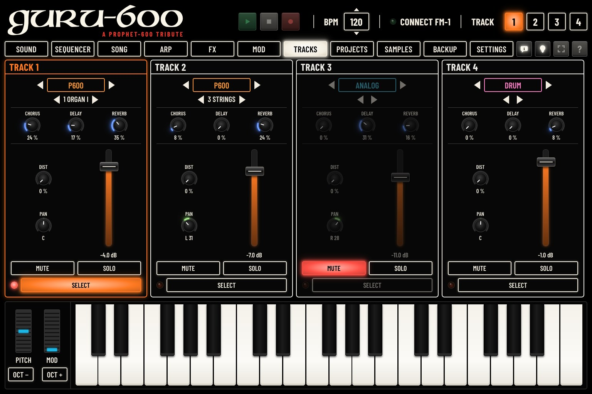
| ControlCommandeBedienelementMandoComando控制器操作子 | What it doesCe qu’elle faitFunktionQué haceFunzione功能機能 | ValuesValeursWerteValoresValori取值値 |
|---|---|---|
| ◀ ENGINE ▶◀ MOTEUR ▶◀ KLANGERZ. ▶◀ MOTOR ▶◀ MOTORE ▶◀ 引擎 ▶◀ エンジン ▶ | The track’s engine. ◀ or ▶ moves to the previous or next one, after a confirmation: the track then plays the new engine’s first sound.Le moteur de la piste. ◀ ou ▶ passe au précédent ou au suivant, après confirmation : la piste joue alors le premier son du nouveau moteur.Die Klangerzeugung der Spur. ◀ oder ▶ wechselt nach einer Bestätigung zur vorherigen oder nächsten: Die Spur spielt dann den ersten Sound der neuen Klangerzeugung.El motor de la pista. ◀ o ▶ pasa al anterior o al siguiente, tras una confirmación: la pista toca entonces el primer sonido del nuevo motor.Il motore della traccia. ◀ o ▶ passa al precedente o al successivo, dopo una conferma: la traccia suona allora il primo suono del nuovo motore.音轨的引擎。◀ 或 ▶ 经确认后切换到上一个或下一个引擎：音轨随即演奏新引擎的第一个音色。トラックのエンジン。◀ または ▶ で、確認のあと前または次のエンジンに切り替わります。トラックは新しいエンジンの最初のサウンドを演奏します。 | P600, ANALOG, FM6, PHASE, LOFI, SAMPLE, VOICE, TRIO, WHEEL, GRAIN, PHYS, NOISE, SLICE, DRUMP600, ANALOG, FM6, PHASE, LOFI, SAMPLE, VOICE, TRIO, WHEEL, GRAIN, PHYS, NOISE, SLICE, DRUMP600, ANALOG, FM6, PHASE, LOFI, SAMPLE, VOICE, TRIO, WHEEL, GRAIN, PHYS, NOISE, SLICE, DRUMP600, ANALOG, FM6, PHASE, LOFI, SAMPLE, VOICE, TRIO, WHEEL, GRAIN, PHYS, NOISE, SLICE, DRUMP600, ANALOG, FM6, PHASE, LOFI, SAMPLE, VOICE, TRIO, WHEEL, GRAIN, PHYS, NOISE, SLICE, DRUMP600, ANALOG, FM6, PHASE, LOFI, SAMPLE, VOICE, TRIO, WHEEL, GRAIN, PHYS, NOISE, SLICE, DRUMP600, ANALOG, FM6, PHASE, LOFI, SAMPLE, VOICE, TRIO, WHEEL, GRAIN, PHYS, NOISE, SLICE, DRUM |
| ◀ SOUND ▶◀ SON ▶◀ KLANG ▶◀ SONIDO ▶◀ SUONO ▶◀ 音色 ▶◀ サウンド ▶ | The track’s sound (for P600, its place and name). ◀ or ▶ loads the previous or next sound of its engine (P600: the 255 places).Le son de la piste (pour P600, sa place et son nom). ◀ ou ▶ charge le son précédent ou suivant de son moteur (P600 : les 255 places).Der Sound der Spur (bei P600 sein Platz und Name). ◀ oder ▶ lädt den vorigen oder nächsten Sound ihrer Engine (P600: die 255 Plätze).El sonido de la pista (en P600, su posición y nombre). ◀ o ▶ carga el sonido anterior o siguiente de su motor (P600: las 255 posiciones).Il suono della traccia (per P600, il suo posto e nome). ◀ o ▶ carica il suono precedente o successivo del suo motore (P600: i 255 posti).音轨的音色（P600 为其位置和名称）。◀ 或 ▶ 载入其引擎的上一个或下一个音色（P600：255 个位置）。トラックのサウンド（P600 はプレイスと名前）。◀ または ▶ でエンジンの前後のサウンドを読み込みます（P600：255 のプレイス）。 | — |
| CHORUS, DELAY, REVERBCHORUS, DELAY, REVERBCHORUS, DELAY, REVERBCHORUS, DELAY, REVERBCHORUS, DELAY, REVERBCHORUS, DELAY, REVERBCHORUS, DELAY, REVERB | How much of the track goes to each shared effect (chapter 8).La part de la piste envoyée à chaque effet commun (chapitre 8).Wie viel von der Spur an jeden gemeinsamen Effekt geht (Kapitel 8).Cuánto de la pista se envía a cada efecto compartido (capítulo 8).Quanto della traccia va a ogni effetto condiviso (capitolo 8).音轨发送到每个共用效果的量（第 8 章）。トラックを各共有エフェクトにどれだけ送るか（第 8 章）。 | 0 … 100 % |
| DISTDISTDISTDISTDISTDISTDIST | The track’s own distortion, above PAN (chapter 8).La distorsion propre à la piste, au-dessus de PAN (chapitre 8).Die eigene Verzerrung der Spur, über PAN (Kapitel 8).La distorsión propia de la pista, encima de PAN (capítulo 8).La distorsione propria della traccia, sopra PAN (capitolo 8).音轨自身的失真，位于 PAN 上方（第 8 章）。トラック自身のディストーション。PAN の上にあります（第 8 章）。 | 0 … 100 % |
| PANPANPANPANPANPANPAN | The track’s place between left and right.La place de la piste entre gauche et droite.Die Position der Spur zwischen links und rechts.La posición de la pista entre izquierda y derecha.La posizione della traccia tra sinistra e destra.音轨在左右之间的位置。左右の間でのトラックの位置。 | L 100 … C … R 100L 100 … C … R 100L 100 … C … R 100L 100 … C … R 100L 100 … C … R 100L 100 … C … R 100L 100 … C … R 100 |
| LEVEL (fader)LEVEL (fader)LEVEL (fader)LEVEL (fader)LEVEL (fader)LEVEL (fader)LEVEL (fader) | The track’s volume: click or drag on the fader. Double click: −4 dB.Le volume de la piste : cliquez ou glissez sur le fader. Double clic : −4 dB.Die Lautstärke der Spur: Klicken oder ziehen Sie auf dem Fader. Doppelklick: −4 dB.El volumen de la pista: haga clic o arrastre sobre el fader. Doble clic: −4 dB.Il volume della traccia: fare clic o trascinare sul fader. Doppio clic: −4 dB.音轨的音量：在推子上点击或拖动。双击：−4 dB。トラックの音量：フェーダーをクリックまたはドラッグします。ダブルクリックで −4 dB になります。 | OFF, −55.5 … +7.5 dBOFF, −55,5 … +7,5 dBOFF, −55,5 … +7,5 dBOFF, −55,5 … +7,5 dBOFF, −55,5 … +7,5 dBOFF, −55.5 … +7.5 dBOFF, −55.5 … +7.5 dB |
| MUTEMUETSTUMMMUDOMUTO静音ミュート | Silences the track; click again to hear it.Coupe la piste ; cliquez de nouveau pour l’entendre.Schaltet die Spur stumm; erneut klicken, um sie zu hören.Silencia la pista; haga clic de nuevo para oírla.Silenzia la traccia; fare di nuovo clic per sentirla.将音轨静音；再次点击可恢复发声。トラックを消音します。もう一度クリックすると聞こえるようになります。 | — |
| SOLOSOLOSOLOSOLOSOLOSOLOSOLO | Plays this track alone: the others are muted. Click again to hear them all.Fait jouer cette piste seule : les autres sont coupées. Cliquez de nouveau pour les entendre toutes.Spielt diese Spur allein: Die anderen werden stummgeschaltet. Erneut klicken, um alle zu hören.Toca solo esta pista: las demás se silencian. Haga clic de nuevo para oírlas todas.Suona solo questa traccia: le altre sono in mute. Fare di nuovo clic per sentirle tutte.单独演奏此音轨：其他音轨被静音。再次点击可听到所有音轨。このトラックだけを演奏し、ほかのトラックをミュートします。もう一度クリックすると、すべてのトラックが聞こえます。 | — |
| SELECTSÉLECT.WÄHLENELEGIRSCEGLI选择選択 | Selects the track, like TRACK 1 to 4 at the top: the other pages then show and change this track.Choisit la piste, comme TRACK 1 à 4 en haut : les autres pages montrent et modifient alors cette piste.Wählt die Spur aus, wie TRACK 1 bis 4 oben: Die anderen Seiten zeigen und ändern dann diese Spur.Selecciona la pista, como TRACK 1 a 4 en la parte superior: las demás páginas muestran y modifican entonces esta pista.Seleziona la traccia, come TRACK da 1 a 4 in alto: le altre pagine mostrano e modificano allora questa traccia.选择该音轨，与顶部的 TRACK 1 至 4 相同：其他页面随即显示并修改此音轨。上部の TRACK 1〜4 と同じく、トラックを選択します。ほかのページにはこのトラックが表示され、変更もこのトラックに適用されます。 | — |
| LED | Lit: the track is armed for recording (● at the top).Allumée : la piste est armée pour l’enregistrement (● en haut).Leuchtend: Die Spur ist aufnahmebereit (● oben).Encendido: la pista está preparada para grabar (● en la parte superior).Acceso: la registrazione della traccia è attivata (● in alto).亮起：该音轨处于录音预备状态（顶部的 ●）。点灯：トラックが録音待機中です（上部の ●）。 | — |
Knobs: drag up or down, or scroll over them; a double click puts them back to 0 (PAN: center).
Boutons rotatifs : glissez vers le haut ou le bas, ou faites défiler au-dessus d’eux ; un double clic les remet à 0 (PAN : au centre).
Regler: nach oben oder unten ziehen oder darüber scrollen; ein Doppelklick setzt sie auf 0 zurück (PAN: Mitte).
Potenciómetros: arrastre hacia arriba o hacia abajo, o use la rueda del ratón sobre ellos; un doble clic los devuelve a 0 (PAN: centro).
Manopole: trascinare in alto o in basso, o scorrere sopra di esse; un doppio clic le riporta a 0 (PAN: al centro).
旋钮：向上或向下拖动，或在其上滚动；双击可恢复为 0（PAN：居中）。
ノブ：上下にドラッグするか、その上でスクロールします。ダブルクリックで0 に戻ります（PAN：中央）。
SOLO belongs to the editor: before closing it, click SOLO again, or the other tracks stay muted on the FM-1 (their MUTE brings them back).
SOLO appartient à l’éditeur : avant de le fermer, cliquez de nouveau sur SOLO, sinon les autres pistes restent coupées sur le FM-1 (leur MUTE les rétablit).
SOLO gehört zum Editor: Klicken Sie vor dem Schließen erneut auf SOLO, sonst bleiben die anderen Spuren am FM-1 stummgeschaltet (ihr MUTE holt sie zurück).
SOLO pertenece al editor: antes de cerrarlo, haga clic de nuevo en SOLO; si no, las demás pistas quedan silenciadas en el FM-1 (su MUTE las recupera).
SOLO appartiene all’editor: prima di chiuderlo, fare di nuovo clic su SOLO, altrimenti le altre tracce restano in mute sull’FM-1 (il loro MUTE le ripristina).
SOLO 属于编辑器：关闭编辑器之前，请再次点击 SOLO，否则其他音轨在 FM-1 上仍保持静音（用其 MUTE 可恢复）。
SOLO はエディターの機能です。エディターを閉じる前に SOLO をもう一度クリックしてください。そうしないと、FM-1 でほかのトラックがミュートされたままになります（それぞれの MUTE で元に戻せます）。
The PROJECTS page keeps your music in the FM-1: four projects, A to D, and 32 USER sounds.
La page PROJETS garde votre musique dans le FM-1 : quatre projets, A à D, et 32 sons USER.
Die Seite PROJEKTE bewahrt Ihre Musik im FM-1 auf: vier Projekte, A bis D, und 32 USER-Sounds.
La página PROYECTOS guarda su música en el FM-1: cuatro proyectos, de A a D, y 32 sonidos USER.
La pagina PROGETTI conserva la musica nell’FM-1: quattro progetti, da A a D, e 32 suoni USER.
项目 页面将您的音乐保存在 FM-1 中：四个工程（A 至 D）和 32 个 USER 音色。
プロジェクト ページでは、音楽を FM-1 に保存します：4つのプロジェクト（A〜D）と、32の USER サウンドです。
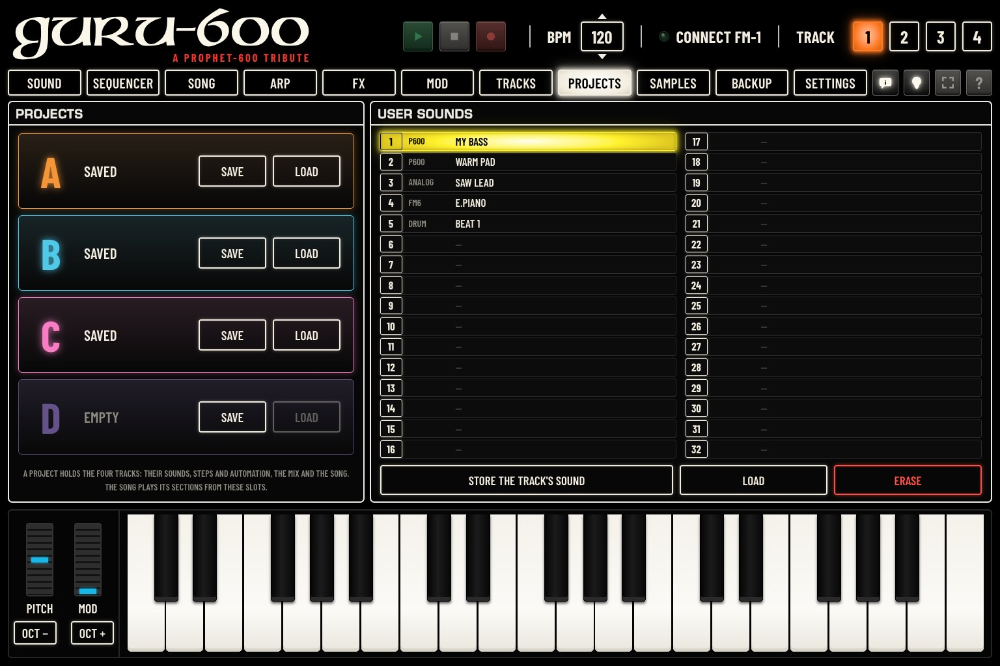
A project holds the whole music: the four tracks with their sounds, steps and automation, the mix and the song. Each slot shows SAVED or EMPTY. The SONG page plays its sections from these four slots (chapter 6).
Un projet contient toute la musique : les quatre pistes avec leurs sons, leurs pas et leurs automations, le mixage et le morceau. Chaque emplacement indique SAVED ou EMPTY. La page MORCEAU joue ses sections depuis ces quatre emplacements (chapitre 6).
Ein Projekt enthält die ganze Musik: die vier Spuren mit ihren Sounds, Steps und ihrer Automation, die Mischung und den Song. Jeder Slot zeigt SAVED oder EMPTY. Die Seite SONG spielt ihre Abschnitte aus diesen vier Slots (Kapitel 6).
Un proyecto contiene toda la música: las cuatro pistas con sus sonidos, pasos y automatización, la mezcla y la canción. Cada ranura indica SAVED o EMPTY. La página CANCIÓN toca sus secciones a partir de estas cuatro ranuras (capítulo 6).
Un progetto contiene tutta la musica: le quattro tracce con i loro suoni, passi e automazioni, il mix e la song. Ogni slot indica SAVED o EMPTY. La pagina BRANO suona le sue sezioni da questi quattro slot (capitolo 6).
一个工程包含全部音乐：四个音轨及其音色、步和自动化、混音以及歌曲。每个槽位显示 SAVED 或 EMPTY。乐曲 页面从这四个槽位播放其段落（第6章）。
プロジェクトには音楽全体が入ります：4つのトラックとそのサウンド、ステップ、オートメーション、ミックス、ソング。各スロットには SAVED または EMPTY と表示されます。ソング ページは、この4つのスロットからセクションを再生します（第6章）。
The music of the moment is kept by the FM-1 at power-off (RESTORE LAST, chapter 14), but a project is the safe copy: save it before trying something new.
La musique du moment est gardée par le FM-1 à l’extinction (RESTORE LAST, chapitre 14), mais un projet en est la copie sûre : enregistrez-le avant d’essayer autre chose.
Die aktuelle Musik wird vom FM-1 beim Ausschalten behalten (RESTORE LAST, Kapitel 14), aber ein Projekt ist die sichere Kopie: Speichern Sie es, bevor Sie etwas Neues ausprobieren.
El FM-1 conserva la música del momento al apagarse (RESTORE LAST, capítulo 14), pero un proyecto es la copia segura: guárdelo antes de probar algo nuevo.
La musica del momento viene conservata dall’FM-1 allo spegnimento (RESTORE LAST, capitolo 14), ma un progetto ne è la copia sicura: salvarlo prima di provare qualcosa di nuovo.
关机时 FM-1 会保留当前的音乐（RESTORE LAST，第14章），但工程才是安全的副本：尝试新内容之前请先保存。
現在の音楽は電源を切っても FM-1 に保持されます（RESTORE LAST、第14章）が、確実なコピーはプロジェクトです。新しいことを試す前に保存してください。
A USER sound is one track’s sound with its 16-step pattern, kept under a name, whatever its engine. The list shows the 32 places: number, engine and name; — is an empty place. Click a place to choose it.
Un son USER est le son d’une piste avec son motif de 16 pas, gardé sous un nom, quel que soit son moteur. La liste montre les 32 places : numéro, moteur et nom ; — est une place vide. Cliquez sur une place pour la choisir.
Ein USER-Sound ist der Sound einer Spur mit seinem 16-Step-Pattern, unter einem Namen behalten, unabhängig von seiner Klangerzeugung. Die Liste zeigt die 32 Speicherplätze: Nummer, Klangerzeugung und Name; – ist ein leerer Speicherplatz. Klicken Sie auf einen Speicherplatz, um ihn auszuwählen.
Un sonido USER es el sonido de una pista con su patrón de 16 pasos, guardado con un nombre, sea cual sea su motor. La lista muestra las 32 posiciones: número, motor y nombre; —es una posición vacía. Haga clic en una posición para elegirla.
Un suono USER è il suono di una traccia con il suo pattern di 16 passi, conservato con un nome, qualunque sia il suo motore. L’elenco mostra le 32 posizioni: numero, motore e nome; – è una posizione vuota. Fare clic su una posizione per sceglierla.
USER 音色是某个音轨的音色及其 16 步样式，以一个名称保存，不论其引擎为何。列表显示 32 个位置：编号、引擎和名称；— 表示空位置。点击一个位置即可选中。
USER サウンドは、1つのトラックのサウンドを、その16ステップのパターンとともに名前を付けて保存したものです。エンジンは問いません。リストには32の枠が番号、エンジン、名前で表示されます。— は空の枠です。枠をクリックして選びます。
| ControlCommandeBedienelementMandoComando控制器操作子 | What it doesCe qu’elle faitFunktionQué haceFunzione功能機能 |
|---|---|
| STORE THE TRACK'S SOUNDRANGER LE SON DE LA PISTEKLANG DER SPUR ABLEGENGUARDAR EL SONIDO DE LA PISTASALVA IL SUONO DELLA TRACCIA存储音轨的音色トラックの音色を保存 | Keeps the sound of the selected track (TRACK 1 to 4, at the top) in the chosen place. Type its name (12 characters at most) and confirm. A place in use asks before it is replaced.Garde le son de la piste choisie (TRACK 1 à 4, en haut) dans la place choisie. Tapez son nom (12 caractères au plus) et confirmez. Une place occupée demande confirmation avant d’être remplacée.Behält den Sound der ausgewählten Spur (TRACK 1 bis 4, oben) auf dem gewählten Speicherplatz. Geben Sie seinen Namen ein (höchstens 12 Zeichen) und bestätigen Sie. Ein belegter Speicherplatz fragt nach, bevor er ersetzt wird.Guarda el sonido de la pista seleccionada (TRACK 1 a 4, en la parte superior) en la posición elegida. Escriba su nombre (12 caracteres como máximo) y confirme. Una posición ocupada pregunta antes de ser sustituida.Conserva il suono della traccia selezionata (TRACK da 1 a 4, in alto) nella posizione scelta. Digitarne il nome (12 caratteri al massimo) e confermare. Una posizione occupata chiede conferma prima di essere sostituita.将所选音轨（顶部的 TRACK 1 至 4）的音色保存到所选位置。输入名称（最多 12 个字符）并确认。已占用的位置在被替换前会先询问。選択中のトラック（上部の TRACK 1〜4）のサウンドを、選んだ枠に保存します。名前（最大12文字）を入力して確定します。使用中の枠では、置き換える前に確認を求めます。 |
| LOADCHARGERLADENCARGARCARICA载入読込 | Loads the chosen USER sound on the selected track. A double click on a place does the same. If the track’s sound was changed and not saved, the editor asks first.Charge le son USER choisi sur la piste choisie. Un double clic sur une place fait de même. Si le son de la piste a été modifié sans être enregistré, l’éditeur demande d’abord.Lädt den gewählten USER-Sound auf die ausgewählte Spur. Ein Doppelklick auf einen Speicherplatz bewirkt dasselbe. Wurde der Sound der Spur geändert und nicht gespeichert, fragt der Editor zuerst nach.Carga el sonido USER elegido en la pista seleccionada. Un doble clic en una posición hace lo mismo. Si el sonido de la pista se modificó y no se guardó, el editor pregunta antes.Carica il suono USER scelto sulla traccia selezionata. Un doppio clic su una posizione fa lo stesso. Se il suono della traccia è stato modificato e non salvato, l’editor chiede prima conferma.将所选的 USER 音色载入所选音轨。双击位置效果相同。如果音轨的音色已更改但未保存，编辑器会先询问。選んだ USER サウンドを、選択中のトラックに読み込みます。枠をダブルクリックしても同じです。トラックのサウンドを変更して保存していない場合は、先にエディターが確認を求めます。 |
| ERASEEFFACERLÖSCHENBORRARCANCELLA清除消去 | Empties the chosen place, after a confirmation.Vide la place choisie, après confirmation.Leert nach einer Bestätigung den gewählten Speicherplatz.Vacía la posición elegida, tras una confirmación.Svuota la posizione scelta, dopo una conferma.经确认后，清空所选位置。確認のあと、選んだ枠を空にします。 |
For a P600 sound, SAVE TO THIS PLACE on the SOUND page (chapter 4) keeps it among the 255 P600 places; a USER sound keeps it with its pattern, for any engine.
Pour un son P600, ENREGISTRER ICI sur la page SON (chapitre 4) le garde parmi les 255 places du P600 ; un son USER le garde avec son motif, quel que soit le moteur.
Einen P600-Sound behält HIER SPEICHERN auf der Seite KLANG (Kapitel 4) unter den 255 P600-Speicherplätzen; ein USER-Sound behält ihn mit seinem Pattern, für jede Klangerzeugung.
Un sonido P600 se conserva entre las 255 posiciones P600 con GUARDAR AQUÍ en la página SONIDO (capítulo 4); un sonido USER lo conserva con su patrón, para cualquier motor.
Per un suono P600, SALVA QUI nella pagina SUONO (capitolo 4) lo conserva tra le 255 posizioni P600; un suono USER lo conserva con il suo pattern, per qualsiasi motore.
对于 P600 音色，音色 页面上的 保存到此位置（第4章）将其保存在 255 个 P600 位置中；USER 音色则连同其样式一起保存，适用于任何引擎。
P600 サウンドは、サウンド ページの この位置に保存（第4章）で255 の P600 枠の1つに保存できます。USER サウンドなら、どのエンジンでもパターンとともに保存できます。
The FM-1 has three slots for your own samples: USR1, USR2 and USR3. The SAMPLE, GRAIN and SLICE engines play them. The SAMPLES page fills them from sound files on the computer.
Le FM-1 a trois emplacements pour vos propres échantillons : EMPLACEMENT 1, EMPLACEMENT 2 et EMPLACEMENT 3. Les moteurs SAMPLE, GRAIN et SLICE les jouent. La page SAMPLES les remplit à partir de fichiers son de l’ordinateur.
Der FM-1 hat drei Slots für Ihre eigenen Samples: PLATZ 1, PLATZ 2 und PLATZ 3. Die Klangerzeugungen SAMPLE, GRAIN und SLICE spielen sie. Die Seite SAMPLES füllt sie mit Audiodateien vom Computer.
El FM-1 tiene tres ranuras para sus propias muestras: RANURA 1, RANURA 2 y RANURA 3. Los motores SAMPLE, GRAIN y SLICE las tocan. La página MUESTRAS las llena a partir de archivos de sonido del ordenador.
L’FM-1 ha tre slot per i propri campioni: SLOT 1, SLOT 2 e SLOT 3. Li suonano i motori SAMPLE, GRAIN e SLICE. La pagina CAMPIONI li riempie con file audio del computer.
FM-1 有三个槽位用于存放您自己的采样：槽位 1、槽位 2 和 槽位 3。SAMPLE、GRAIN 和 SLICE 引擎演奏这些采样。采样 页面用电脑上的声音文件填充它们。
FM-1 には、自分のサンプル用のスロットが3つあります：スロット1、スロット2、スロット3。SAMPLE、GRAIN、SLICE のエンジンでこれらを演奏します。サンプル ページでは、コンピューター上のサウンド・ファイルからスロットにサンプルを入れます。
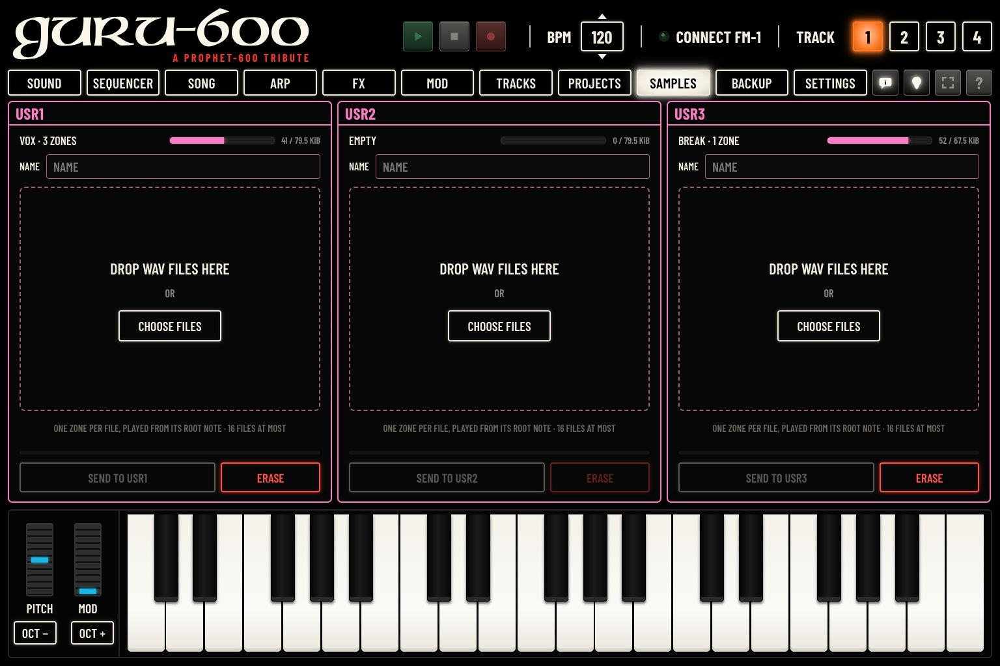
The top line of each column shows what the slot holds now on the FM-1: its name and number of zones (or EMPTY), and how full it is.
La ligne du haut de chaque colonne montre ce que contient l’emplacement sur le FM-1 : son nom et son nombre de zones (ou EMPTY), et son remplissage.
Die oberste Zeile jeder Spalte zeigt, was der Slot gerade am FM-1 enthält: seinen Namen und seine Anzahl an Zonen (oder EMPTY) sowie seinen Füllstand.
La línea superior de cada columna muestra lo que contiene la ranura en ese momento en el FM-1: su nombre y su número de zonas (o EMPTY), y su grado de ocupación.
La riga superiore di ogni colonna mostra ciò che lo slot contiene ora sull’FM-1: il suo nome e il numero di zone (o EMPTY), e quanto è pieno.
每列的首行显示该槽位当前在 FM-1 上包含的内容：名称和区域数（或 EMPTY），以及占用程度。
各列の最上行には、FM-1 のスロットに現在入っているもの（名前とゾーン数、または EMPTY）と、使用量が表示されます。
Sending replaces everything the slot held. A sound that played that slot now plays the new samples.
L’envoi remplace tout ce que contenait l’emplacement. Un son qui jouait cet emplacement joue désormais les nouveaux échantillons.
Das Senden ersetzt alles, was der Slot enthielt. Ein Sound, der diesen Slot spielte, spielt jetzt die neuen Samples.
El envío sustituye todo lo que contenía la ranura. Un sonido que tocaba esa ranura toca ahora las nuevas muestras.
L’invio sostituisce tutto ciò che lo slot conteneva. Un suono che suonava quello slot suona ora i nuovi campioni.
发送会替换该槽位原有的全部内容。原本使用该槽位的音色现在演奏新的采样。
送信すると、スロットに入っていたものはすべて置き換えられます。そのスロットを使っていたサウンドは、新しいサンプルを演奏します。
The line under the list shows the size of the files against the slot’s room. The files are stored at 22,050 Hz, in mono. Over the slot’s room, the line turns red (TOO LONG FOR THE SLOT) and SEND stays grey: remove a file, or shorten your files on the computer.
La ligne sous la liste montre la taille des fichiers par rapport à la place de l’emplacement. Les fichiers sont gardés à 22 050 Hz, en mono. Au-delà de la place disponible, la ligne passe en rouge (TOO LONG FOR THE SLOT) et SEND reste gris : retirez un fichier, ou raccourcissez vos fichiers sur l’ordinateur.
Die Zeile unter der Liste zeigt die Größe der Dateien im Verhältnis zum Platz im Slot. Die Dateien werden mit 22.050 Hz in Mono gespeichert. Ist der Platz im Slot überschritten, wird die Zeile rot (TOO LONG FOR THE SLOT) und SEND bleibt grau: Entfernen Sie eine Datei oder kürzen Sie Ihre Dateien am Computer.
La línea bajo la lista muestra el tamaño de los archivos frente al espacio de la ranura. Los archivos se guardan a 22 050 Hz, en mono. Si superan el espacio de la ranura, la línea se vuelve roja (TOO LONG FOR THE SLOT) y SEND permanece en gris: quite un archivo, o acorte sus archivos en el ordenador.
La riga sotto l’elenco mostra la dimensione dei file rispetto allo spazio dello slot. I file vengono memorizzati a 22.050 Hz, in mono. Oltre lo spazio dello slot, la riga diventa rossa (TOO LONG FOR THE SLOT) e SEND resta grigio: togliere un file, oppure accorciare i file sul computer.
列表下方的一行显示文件大小与槽位容量的对比。文件以 22,050 Hz 单声道存储。超出槽位容量时，该行变为红色（TOO LONG FOR THE SLOT），SEND 保持灰色：请移除一个文件，或在电脑上缩短您的文件。
リストの下の行に、スロットの容量に対するファイルのサイズが表示されます。ファイルは22,050 Hz、モノラルで保存されます。スロットの容量を超えると行が赤くなり（TOO LONG FOR THE SLOT）、SEND はグレーのままです。ファイルを削除するか、コンピューター上でファイルを短くしてください。
Click ERASE and confirm. The slot becomes EMPTY; a sound that played it plays a plain sine wave, and the FM-1 shows NO SAMPLE.
Cliquez sur EFFACER et confirmez. L’emplacement devient EMPTY ; un son qui le jouait joue une simple sinusoïde, et le FM-1 affiche NO SAMPLE.
Klicken Sie auf LÖSCHEN und bestätigen Sie. Der Slot wird leer (EMPTY); ein Sound, der ihn spielte, spielt eine einfache Sinuswelle, und der FM-1 zeigt NO SAMPLE.
Haga clic en BORRAR y confirme. La ranura pasa a EMPTY; un sonido que la tocaba toca una simple onda senoidal, y el FM-1 muestra NO SAMPLE.
Fare clic su CANCELLA e confermare. Lo slot diventa EMPTY; un suono che lo suonava suona una semplice sinusoide, e l’FM-1 mostra NO SAMPLE.
点击 清除 并确认。槽位变为 EMPTY；原本使用它的音色改为演奏简单的正弦波，FM-1 显示 NO SAMPLE。
消去 をクリックして確定します。スロットは EMPTY になります。そのスロットを使っていたサウンドは単純なサイン波で鳴り、FM-1 には NO SAMPLE と表示されます。
On the FM-1, choose the SAMPLE, GRAIN or SLICE engine for a track (on the TRACKS page, chapter 10, or on the device), then its sound USR1, USR2 or USR3.
Sur le FM-1, choisissez le moteur SAMPLE, GRAIN ou SLICE pour une piste (sur la page PISTES, chapitre 10, ou sur l’appareil), puis son son USR1, USR2 ou USR3.
Wählen Sie am FM-1 für eine Spur die Klangerzeugung SAMPLE, GRAIN oder SLICE (auf der Seite SPUREN, Kapitel 10, oder am Gerät), dann ihren Sound USR1, USR2 oder USR3.
En el FM-1, elija el motor SAMPLE, GRAIN o SLICE para una pista (en la página PISTAS, capítulo 10, o en el aparato) y después su sonido USR1, USR2 o USR3.
Sull’FM-1, scegliere il motore SAMPLE, GRAIN o SLICE per una traccia (nella pagina TRACCE, capitolo 10, o sullo strumento), poi il suo suono USR1, USR2 o USR3.
在 FM-1 上，为某个音轨选择 SAMPLE、GRAIN 或 SLICE 引擎（在 音轨 页面上，第10章，或在设备上），然后选择其音色 USR1、USR2 或 USR3。
FM-1 で、トラックのエンジンに SAMPLE、GRAIN、SLICE のいずれかを選び（トラック ページ（第10章）または本体で）、続いてサウンドに USR1、USR2、USR3 のいずれかを選びます。
The BACKUP page saves everything the FM-1 holds in one file on the computer, and puts it back: the music of the moment, the projects A to D, the 32 USER sounds, the three samples and their slices, the P600’s places and the settings.
La page SAUVEGARDE enregistre tout ce que contient le FM-1 dans un seul fichier sur l’ordinateur, et le remet en place : la musique du moment, les projets A à D, les 32 sons USER, les trois échantillons et leurs découpes, les places du P600 et les réglages.
Die Seite SICHERUNG speichert alles, was der FM-1 enthält, in einer einzigen Datei auf dem Computer und spielt es wieder zurück: die aktuelle Musik, die Projekte A bis D, die 32 USER-Sounds, die drei Samples und ihre Slices, die Speicherplätze des P600 und die Einstellungen.
La página COPIA guarda todo lo que contiene el FM-1 en un solo archivo en el ordenador, y lo restaura: la música del momento, los proyectos A a D, los 32 sonidos USER, las tres muestras y sus fragmentos, las posiciones del P600 y los ajustes.
La pagina BACKUP salva tutto ciò che l’FM-1 contiene in un unico file sul computer, e lo rimette al suo posto: la musica del momento, i progetti da A a D, i 32 suoni USER, i tre campioni e le loro slice, le posizioni del P600 e le impostazioni.
备份 页面将 FM-1 中的全部内容保存为电脑上的一个文件，并可将其恢复：当前的音乐、工程 A 至 D、32 个 USER 音色、三个采样及其切片、P600 的位置以及设置。
バックアップ ページでは、FM-1 に入っているすべてをコンピューター上の1つのファイルに保存し、また元に戻せます：現在の音楽、プロジェクト A〜D、32の USER サウンド、3つのサンプルとそのスライス、P600 の枠、設定です。
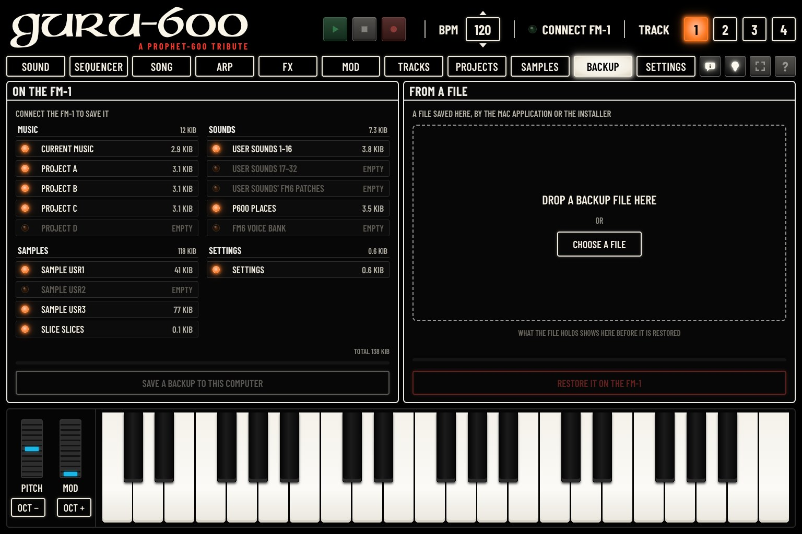
Make a backup before installing another firmware, before RESET ALL SOUNDS, and from time to time.
Faites une sauvegarde avant d’installer un autre firmware, avant RÉINITIALISER LES SONS, et de temps en temps.
Erstellen Sie ein Backup, bevor Sie eine andere Firmware installieren, vor ALLE KLÄNGE ZURÜCK und von Zeit zu Zeit.
Haga una copia de seguridad antes de instalar otro firmware, antes de RESTABLECER SONIDOS y de vez en cuando.
Fare un backup prima di installare un altro firmware, prima di RIPRISTINA I SUONI, e di tanto in tanto.
在安装其他固件之前、在执行 重置所有音色 之前，以及定期进行备份。
別のファームウェアをインストールする前、全サウンドをリセット の前、そして定期的にバックアップを取ってください。
The list shows each part of the FM-1 and its size. A lit LED: the part holds something; EMPTY: nothing to save. TOTAL: the size of the whole.
La liste montre chaque partie du FM-1 et sa taille. LED allumée : la partie contient quelque chose ; EMPTY : rien à enregistrer. TOTAL : la taille de l’ensemble.
Die Liste zeigt jeden Teil des FM-1 und seine Größe. Eine leuchtende LED: Der Teil enthält etwas; EMPTY: nichts zu speichern. TOTAL: die Gesamtgröße.
La lista muestra cada parte del FM-1 y su tamaño. Un LED encendido: la parte contiene algo; EMPTY: nada que guardar. TOTAL: el tamaño del conjunto.
L’elenco mostra ogni parte dell’FM-1 e la sua dimensione. Una spia accesa: la parte contiene qualcosa; EMPTY: niente da salvare. TOTAL: la dimensione dell’insieme.
列表显示 FM-1 的每个部分及其大小。指示灯亮起：该部分有内容；EMPTY：无内容可保存。TOTAL：全部内容的大小。
リストには、FM-1 の各部分とそのサイズが表示されます。LED 点灯：その部分にデータがあります。EMPTY：保存するものはありません。TOTAL：全体のサイズ。
| LineLigneZeileLíneaRiga行項目 | What it isCe que c’estWas sie istQué esCos’è简介概要 |
|---|---|
| CURRENT MUSICMUSIQUE EN COURSAKTUELLE MUSIKMÚSICA ACTUALMUSICA CORRENTE当前音乐現在のミュージック | The music as it is now: the four tracks, their sounds, steps and automation, the mix, the song.La musique telle qu’elle est : les quatre pistes, leurs sons, pas et automations, le mixage, le morceau.Die Musik, so wie sie gerade ist: die vier Spuren, ihre Sounds, Steps und Automation, die Mischung, der Song.La música tal como está en ese momento: las cuatro pistas, sus sonidos, pasos y automatización, la mezcla, la canción.La musica così com’è ora: le quattro tracce, i loro suoni, passi e automazioni, il mix, la song.当前状态的音乐：四个音轨及其音色、步和自动化、混音、歌曲。現在の音楽：4つのトラックとそのサウンド、ステップ、オートメーション、ミックス、ソング。 |
| SETTINGSRÉGLAGESSETUPAJUSTESIMPOSTAZIONI设置設定 | The settings of the MENU (chapter 14).Les réglages du MENU (chapitre 14).Die Einstellungen des MENU (Kapitel 14).Los ajustes del MENU (capítulo 14).Le impostazioni del MENU (capitolo 14).MENU 中的设置（第14章）。MENU の設定（第14章）。 |
| PROJECT A … DPROJECT A … DPROJECT A … DPROJECT A … DPROJECT A … DPROJECT A … DPROJECT A … D | The four saved projects (chapter 11).Les quatre projets enregistrés (chapitre 11).Die vier gespeicherten Projekte (Kapitel 11).Los cuatro proyectos guardados (capítulo 11).I quattro progetti salvati (capitolo 11).已保存的四个工程（第11章）。保存した4つのプロジェクト（第11章）。 |
| USER SOUNDS 1–16, 17–32SONS UTILISATEUR 1–16, 17–32EIGENE KLÄNGE 1–16, 17–32SONIDOS DEL USUARIO 1–16, 17–32SUONI UTENTE 1–16, 17–32用户音色 1–16, 17–32ユーザーサウンド 1–16, 17–32 | The 32 USER sounds.Les 32 sons USER.Die 32 USER-Sounds.Los 32 sonidos USER.I 32 suoni USER.32 个 USER 音色。32の USER サウンド。 |
| USER SOUNDS' FM6 PATCHESPATCHS FM6 UTILISATEUREIGENE FM6-PATCHESPATCHES FM6 DEL USUARIOPATCH FM6 UTENTE用户 FM6 参数ユーザー FM6 パッチ | The FM6 patches of the USER sounds made with the FM6 engine.Les patchs FM6 des sons USER faits avec le moteur FM6.Die FM6-Patches der USER-Sounds, die mit der Klangerzeugung FM6 erstellt wurden.Los patches FM6 de los sonidos USER creados con el motor FM6.Le patch FM6 dei suoni USER creati con il motore FM6.用 FM6 引擎制作的 USER 音色的 FM6 音色参数。FM6 エンジンで作った USER サウンドの FM6 パッチ。 |
| SAMPLE USR1 … USR3SAMPLE USR1 … USR3SAMPLE USR1 … USR3SAMPLE USR1 … USR3SAMPLE USR1 … USR3SAMPLE USR1 … USR3SAMPLE USR1 … USR3 | The three user samples (chapter 12).Les trois échantillons de l’utilisateur (chapitre 12).Die drei eigenen Samples (Kapitel 12).Las tres muestras de usuario (capítulo 12).I tre campioni dell’utente (capitolo 12).三个用户采样（第12章）。3つのユーザー・サンプル（第12章）。 |
| P600 PLACESPLACES P600P600-PLÄTZEPOSICIONES P600POSIZIONI P600P600 位置P600 プレイス | The P600 sounds you saved over the 255 places (SAVE TO THIS PLACE, chapter 4).Les sons P600 enregistrés sur les 255 places (ENREGISTRER ICI, chapitre 4).Die P600-Sounds, die Sie über die 255 Speicherplätze gespeichert haben (HIER SPEICHERN, Kapitel 4).Los sonidos P600 que ha guardado sobre las 255 posiciones (GUARDAR AQUÍ, capítulo 4).I suoni P600 salvati sulle 255 posizioni (SALVA QUI, capitolo 4).您覆盖保存在 255 个位置上的 P600 音色（保存到此位置，第4章）。255 の枠に上書き保存した P600 サウンド（この位置に保存、第4章）。 |
| FM6 VOICE BANKBANQUE DE VOIX FM6FM6-STIMMENBANKBANCO DE VOCES FM6BANCO VOCI FM6FM6 音色库FM6 ボイスバンク | The FM6 voice bank loaded in the FM-1.La banque de voix FM6 chargée dans le FM-1.Die FM6-Voice-Bank, die im FM-1 geladen ist.El banco de voces FM6 cargado en el FM-1.Il banco di voci FM6 caricato nell’FM-1.载入到 FM-1 中的 FM6 音色库。FM-1 に読み込まれている FM6 のボイス・バンク。 |
| SLICE SLICESDÉCOUPES SLICESLICE-SCHNITTECORTES SLICETAGLI SLICESLICE 切片SLICE スライス | The slices you set by hand on each sample (the SLICE engine, MAN mode).Les découpes réglées à la main sur chaque échantillon (moteur SLICE, mode MAN).Die Slices, die Sie von Hand auf jedem Sample gesetzt haben (die Klangerzeugung SLICE, Modus MAN).Los fragmentos que ha ajustado a mano en cada muestra (el motor SLICE, modo MAN).Le slice impostate a mano su ogni campione (il motore SLICE, modalità MAN).您在每个采样上手动设置的切片（SLICE 引擎，MAN 模式）。各サンプルに手動で設定したスライス（SLICE エンジンの MAN モード）。 |
The file is the same as the one saved by the Guru-600 application on the Mac and by the installer: each of them can put it back.
Le fichier est le même que celui qu’enregistrent l’application Guru-600 sur Mac et l’installateur : chacun d’eux peut le remettre en place.
Die Datei ist dieselbe wie die, die die Guru-600-Anwendung auf dem Mac und das Installationsprogramm speichern: Jedes von ihnen kann sie zurückspielen.
El archivo es el mismo que guardan la aplicación Guru-600 en el Mac y el instalador: cualquiera de ellos puede restaurarlo.
Il file è lo stesso salvato dall’applicazione Guru-600 su Mac e dal programma di installazione: ciascuno di essi può ripristinarlo.
该文件与 Mac 上的 Guru-600 应用程序和安装程序所保存的文件相同：它们都可以恢复该文件。
このファイルは、Mac 用 Guru-600 アプリケーションやインストーラーが保存するファイルと同じです。どれを使っても元に戻せます。
Restoring replaces everything on the FM-1: its music, projects, USER sounds, samples and settings. Save a backup of the FM-1 first if you may want it back.
La restauration remplace tout sur le FM-1 : sa musique, ses projets, ses sons USER, ses échantillons et ses réglages. Enregistrez d’abord une sauvegarde du FM-1 si vous pouvez en avoir besoin.
Das Wiederherstellen ersetzt alles auf dem FM-1: seine Musik, Projekte, USER-Sounds, Samples und Einstellungen. Speichern Sie zuerst ein Backup des FM-1, falls Sie diesen Stand eventuell zurückhaben möchten.
La restauración sustituye todo lo que hay en el FM-1: su música, sus proyectos, sus sonidos USER, sus muestras y sus ajustes. Haga antes una copia de seguridad del FM-1 si es posible que quiera recuperar su contenido.
Il ripristino sostituisce tutto sull’FM-1: la sua musica, i progetti, i suoni USER, i campioni e le impostazioni. Salvare prima un backup dell’FM-1 se potrebbe servire di nuovo.
恢复会替换 FM-1 上的全部内容：其音乐、工程、USER 音色、采样和设置。如果您以后可能还需要当前内容，请先备份 FM-1。
復元すると、FM-1 の音楽、プロジェクト、USER サウンド、サンプル、設定がすべて置き換えられます。現在の状態に戻したくなる可能性がある場合は、先に FM-1 のバックアップを保存してください。
The FM-1 keeps its own CALIBRATION (how its buttons and knobs are wired), whatever the file holds. A file saved by the Mac application before it saved any music or settings leaves the FM-1’s own in place.
Le FM-1 garde sa propre CALIBRATION (le câblage de ses boutons et de ses boutons rotatifs), quel que soit le fichier. Un fichier de l’application Mac enregistré avant qu’elle ait de la musique ou des réglages laisse ceux du FM-1 en place.
Der FM-1 behält seine eigene CALIBRATION (wie seine Tasten und Regler verdrahtet sind), unabhängig vom Inhalt der Datei. Eine Datei, die von der Mac-Anwendung gespeichert wurde, bevor diese Musik oder Einstellungen speicherte, lässt die des FM-1 unverändert.
El FM-1 conserva su propia CALIBRATION (cómo están cableados sus botones y potenciómetros), contenga lo que contenga el archivo. Un archivo guardado por la aplicación del Mac antes de que guardara música o ajustes deja en su sitio los del FM-1.
L’FM-1 mantiene la propria CALIBRATION (il cablaggio dei suoi pulsanti e delle sue manopole), qualunque cosa contenga il file. Un file salvato dall’applicazione per Mac prima che avesse salvato musica o impostazioni lascia al loro posto quelle dell’FM-1.
无论文件包含什么内容，FM-1 都会保留其自身的 CALIBRATION（按钮和旋钮的接线校准）。由 Mac 应用程序在尚未保存任何音乐或设置时保存的文件，会保留 FM-1 自身的音乐和设置不变。
ファイルの内容にかかわらず、FM-1 は独自の CALIBRATION（ボタンとノブの配線）を保持します。Mac 用アプリケーションが音楽や設定を保存するようになる前に保存したファイルでは、FM-1 の音楽と設定はそのまま残ります。
The SETTINGS page shows the settings of the FM-1’s MENU, grouped by its tabs (DISPLAY, CONTROL, AUDIO, MIDI, SYSTEM), and the editor’s own (EDITOR). The FM-1 describes its settings itself: the page always shows those of the firmware installed.
La page RÉGLAGES présente les réglages du MENU du FM-1, groupés selon ses onglets (DISPLAY, CONTROL, AUDIO, MIDI, SYSTEM), et ceux de l’éditeur (ÉDITEUR). Le FM-1 décrit lui-même ses réglages : la page montre toujours ceux du firmware installé.
Die Seite SETUP zeigt die Einstellungen des MENU des FM-1, nach dessen Tabs gruppiert (DISPLAY, CONTROL, AUDIO, MIDI, SYSTEM), und die eigenen Einstellungen des Editors (EDITOR). Der FM-1 beschreibt seine Einstellungen selbst: Die Seite zeigt immer die der installierten Firmware.
La página AJUSTES muestra los ajustes del MENU del FM-1, agrupados según sus pestañas (DISPLAY, CONTROL, AUDIO, MIDI, SYSTEM), y los del propio editor (EDITOR). El FM-1 describe él mismo sus ajustes: la página muestra siempre los del firmware instalado.
La pagina IMPOSTAZIONI mostra le impostazioni del MENU dell’FM-1, raggruppate secondo le sue schede (DISPLAY, CONTROL, AUDIO, MIDI, SYSTEM), e quelle proprie dell’editor (EDITOR). L’FM-1 descrive da sé le proprie impostazioni: la pagina mostra sempre quelle del firmware installato.
设置 页面显示 FM-1 的 MENU 中的设置，按其标签页分组（DISPLAY、CONTROL、AUDIO、MIDI、SYSTEM），以及编辑器自身的设置（编辑器）。FM-1 会自行描述其设置：页面始终显示所安装固件的设置。
設定 ページには、FM-1 の MENU の設定がタブ（DISPLAY、CONTROL、AUDIO、MIDI、SYSTEM）ごとに表示され、エディター独自の設定（エディター）もあります。設定の内容は FM-1 自身が伝えるので、ページには常に、インストールされているファームウェアの設定が表示されます。
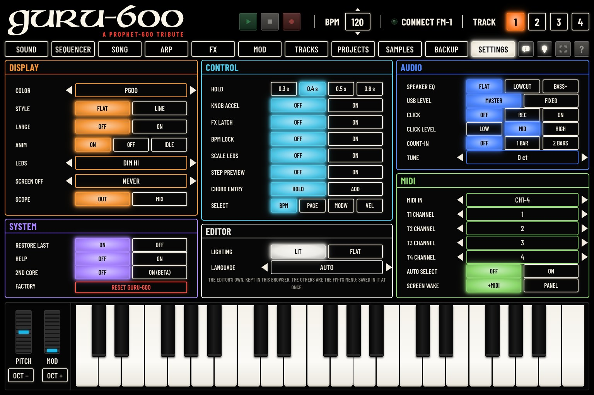
The rows that run something stay on the FM-1’s menu: CALIBRATION, RESET SOUNDS, RESET GURU-600, INFO, ABOUT and LEARN CLEAR.
Les lignes qui lancent une action restent dans le menu du FM-1 : CALIBRATION, RESET SONS, RÉINITIALISER LE GURU-600, INFO, ABOUT et LEARN CLEAR.
Die Zeilen, die etwas ausführen, bleiben im Menü des FM-1: CALIBRATION, RESET KLÄNGE, GURU-600 ZURÜCKSETZEN, INFO, ABOUT und LEARN CLEAR.
Las filas que ejecutan algo permanecen en el menú del FM-1: CALIBRATION, RESET SONIDOS, RESTABLECER GURU-600, INFO, ABOUT y LEARN CLEAR.
Le righe che eseguono un’azione restano nel menu dell’FM-1: CALIBRATION, RESET SUONI, REIMPOSTA GURU-600, INFO, ABOUT e LEARN CLEAR.
执行操作的行仍保留在 FM-1 的菜单中：CALIBRATION、RESET 音色、重置 GURU-600、INFO、ABOUT 和 LEARN CLEAR。
何かを実行する行は、FM-1 のメニューにだけあります：CALIBRATION、RESET サウンド、GURU-600 をリセット、INFO、ABOUT、LEARN CLEAR。
| SettingRéglageEinstellungAjusteImpostazione设置設定 | Values (default in bold)Valeurs (réglage d’origine en gras)Werte (Standard fett)Valores (por defecto en negrita)Valori (predefinito in grassetto)数值（默认值为粗体）値（太字は初期設定） | What it doesRôleFunktionQué haceFunzione功能機能 |
|---|---|---|
| COLORCOULEURSFARBENCOLORESCOLORI配色配色 | GREY, GREEN, AMBER, ICE, VIOLET, ROSE, PAPER, HI-CON, NIGHT, MONO, P600 (+ CUSTOM) | The screen’s palette. CUSTOM appears only when a palette was made in the Felucca web editor.La palette de l’écran. CUSTOM n’apparaît que si une palette a été créée dans l’éditeur web Felucca.Die Farbpalette des Displays. CUSTOM erscheint nur, wenn im Felucca-Webeditor eine Palette erstellt wurde.La paleta de la pantalla. CUSTOM solo aparece cuando se ha creado una paleta en el editor web de Felucca.La palette dello schermo. CUSTOM compare solo se è stata creata una palette nell’editor web Felucca.屏幕的配色方案。只有在 Felucca 网页编辑器中制作过配色方案时，才会出现 CUSTOM。画面のパレット。CUSTOM は、Felucca の Web エディターでパレットを作成した場合にだけ表示されます。 |
| STYLESTYLESTILESTILOSTILE样式スタイル | FLAT, LINE | FLAT: filled cards. LINE: dark areas separated by thin lines.FLAT : cartes pleines. LINE : zones sombres séparées par des filets.FLAT: gefüllte Karten. LINE: dunkle Flächen, durch dünne Linien getrennt.FLAT: tarjetas rellenas. LINE: zonas oscuras separadas por líneas finas.FLAT: schede piene. LINE: aree scure separate da linee sottili.FLAT：填充的卡片。LINE：以细线分隔的深色区域。FLAT：塗りつぶしのカード。LINE：細い線で区切られた暗い領域。 |
| LARGEGRAND TEXTEGROSSE SCHRIFTTEXTO GRANDETESTO GRANDE大字大きな文字 | OFF, ON | Larger names and values on the pages.Noms et valeurs plus grands sur les pages.Größere Namen und Werte auf den Seiten.Nombres y valores más grandes en las páginas.Nomi e valori più grandi nelle pagine.页面上的名称和数值更大。ページ上の名前と値を大きく表示します。 |
| ANIMANIMATIONSANIMATIONENANIMACIONESANIMAZIONI动画アニメ | OFF, ON, IDLE | OFF: no animation (values change at once, no light sweep at power-on). IDLE: like ON, and the lights animate after a minute of inactivity.OFF : aucune animation (les valeurs changent d’un coup, pas de balayage lumineux à l’allumage). IDLE : comme ON, et les voyants s’animent après une minute sans manipulation.OFF: keine Animation (Werte ändern sich sofort, kein Lichtlauf beim Einschalten). IDLE: wie ON, und die Lämpchen werden nach einer Minute Inaktivität animiert.OFF: sin animación (los valores cambian de golpe, sin barrido de luces al encender). IDLE: como ON, y las luces se animan tras un minuto de inactividad.OFF: nessuna animazione (i valori cambiano subito, nessuno scorrimento di luci all’accensione). IDLE: come ON, e le spie si animano dopo un minuto di inattività.OFF：无动画（数值立即改变，开机时没有灯光扫过）。IDLE：与 ON 相同，且无操作一分钟后指示灯会动画显示。OFF：アニメーションなし（値はすぐに変わり、起動時の光の流れもなし）。IDLE：ON と同様で、1分間操作がないとランプがアニメーションします。 |
| LEDSVOYANTSLEDSLEDSLED指示灯LED | OFF, DIM LO, DIM HI, INV, INV LO, INV HI | The lights’ style: DIM: unused lights glow faintly; OFF: they are dark; INV: the reverse (like the M-VAVE firmware).Le style des voyants : DIM : les voyants inutilisés luisent faiblement ; OFF : ils sont éteints ; INV : l’inverse (comme le firmware M-VAVE).Der Stil der Lämpchen: DIM: unbenutzte Lämpchen glimmen schwach; OFF: sie sind dunkel; INV: umgekehrt (wie die M-VAVE-Firmware).El estilo de las luces: DIM: las luces sin uso brillan débilmente; OFF: están apagadas; INV: al revés (como el firmware de M-VAVE).Lo stile delle spie: DIM: le spie inutilizzate brillano debolmente; OFF: sono spente; INV: il contrario (come nel firmware M-VAVE).指示灯的样式：DIM：未使用的指示灯微亮；OFF：熄灭；INV：反过来（与 M-VAVE 固件相同）。ランプのスタイル：DIM：使われていないランプがかすかに光る。OFF：消灯。INV：その逆（M-VAVE 純正ファームウェアと同様）。 |
| SCREEN OFFVEILLE ÉCRANBILDSCHIRM AUSAPAGAR PANTALLASPEGNI SCHERMO屏幕关闭画面オフ | NEVER, 5, 15, 30, 60 MIN | Turns the screen off after that much inactivity; the sound keeps playing.Éteint l’écran après ce délai sans manipulation ; le son continue.Schaltet das Display nach dieser Zeit der Inaktivität aus; der Klang spielt weiter.Apaga la pantalla tras ese tiempo de inactividad; el sonido sigue sonando.Spegne lo schermo dopo questo tempo di inattività; il suono continua.无操作达到该时长后关闭屏幕；声音继续播放。この時間操作がないと画面を消灯します。サウンドは鳴り続けます。 |
| SCOPEOSCILLOSCOPEOSZILLOSKOPOSCILOSCOPIOOSCILLOSCOPIO示波器スコープ | OUT, MIX | Where the visuals pick up the sound: after MASTER (OUT) or before (MIX).Où les images captent le son : après MASTER (OUT) ou avant (MIX).Wo die Visualisierungen den Klang abgreifen: nach MASTER (OUT) oder davor (MIX).Dónde toman el sonido las visualizaciones: después de MASTER (OUT) o antes (MIX).Dove le immagini prelevano il suono: dopo MASTER (OUT) o prima (MIX).图像从何处获取声音：MASTER 之后（OUT）或之前（MIX）。ビジュアルがサウンドを拾う位置：MASTER の後（OUT）または前（MIX）。 |
| SettingRéglageEinstellungAjusteImpostazione设置設定 | Values (default in bold)Valeurs (réglage d’origine en gras)Werte (Standard fett)Valores (por defecto en negrita)Valori (predefinito in grassetto)数值（默认值为粗体）値（太字は初期設定） | What it doesRôleFunktionQué haceFunzione功能機能 |
|---|---|---|
| HOLDMAINTIENHALTENMANTENERTENUTA按住时长長押し | 0.3, 0.4, 0.5, 0.6 s | How long a quick-screen button is held before its screen opens.Durée de maintien d’un bouton d’écran rapide avant que l’écran s’ouvre.Wie lange eine Taste mit Schnellansicht gehalten wird, bevor sich ihre Ansicht öffnet.Cuánto tiempo se mantiene un botón de pantalla rápida antes de que se abra su pantalla.Per quanto tempo si tiene premuto il pulsante di una schermata rapida prima che si apra.快捷屏幕按钮需按住多久才打开其屏幕。クイック画面のボタンを、画面が開くまでに押し続ける時間。 |
| KNOB ACCELACCÉL. BOUTONSREGLER-BESCHL.ACEL. MANDOSACCEL. MANOPOLE旋钮加速ノブ加速 | OFF, ON | A fast turn moves faster on long ranges.Un tour rapide avance plus vite sur les grandes plages.Schnelles Drehen bewegt sich bei großen Wertebereichen schneller.Un giro rápido avanza más deprisa en los rangos largos.Una rotazione rapida si sposta più velocemente sulle escursioni lunghe.在范围较大的参数上快速旋转时，变化更快。素早く回すと、範囲の広い値で速く動きます。 |
| FX LATCHVERROU EFFETSFX-HALTENBLOQUEO FXBLOCCO FX效果锁定FX ラッチ | OFF, ON | FX quick screen: keys switch effects on and off instead of working only while held.Écran rapide FX : les touches allument et éteignent les effets au lieu de les maintenir.Schnellansicht FX: Tasten schalten Effekte ein und aus, statt nur beim Halten zu wirken.Pantalla rápida FX: las teclas activan y desactivan los efectos en lugar de funcionar solo mientras se mantienen.Schermata rapida FX: i tasti attivano e disattivano gli effetti invece di agire solo finché sono premuti.FX 快捷屏幕：琴键改为开关效果，而不是只在按住期间生效。FX クイック画面：鍵を押している間だけでなく、押すたびにエフェクトをオン／オフします。 |
| BPM LOCKVERROU TEMPOTEMPO-SPERREBLOQUEO TEMPOBLOCCO TEMPO速度锁定テンポ固定 | OFF, ON | SELECT changes the tempo only with GLO held.SELECT ne change le tempo qu’avec GLO maintenu.SELECT ändert das Tempo nur bei gehaltenem GLO.SELECT solo cambia el tempo con GLO mantenido.SELECT cambia il tempo solo tenendo premuto GLO.SELECT 只有在按住 GLO 时才改变速度。SELECT は、GLO を押しているときだけテンポを変えます。 |
| SCALE LEDSVOYANTS GAMMESKALEN-LEDSLEDS ESCALALED SCALA音阶指示灯スケール LED | OFF, ON | The keys of the scale light up.Les touches de la gamme s’allument.Die Tasten der Skala leuchten.Las teclas de la escala se iluminan.I tasti della scala si illuminano.音阶内的琴键亮起。スケールの鍵が点灯します。 |
| STEP PREVIEWÉCOUTE DES PASSCHRITT-VORHÖRENESCUCHA PASOSASCOLTO PASSI步进试听ステップ試聴 | OFF, ON | On SEQ › STEP, the step under the cursor sounds when you move to it (sequencer stopped).Sur SEQ › STEP, le pas sous le curseur sonne quand vous l’atteignez (séquenceur arrêté).Auf SEQ › STEP erklingt der Step unter dem Cursor, wenn Sie zu ihm wechseln (Sequencer gestoppt).En SEQ › STEP, el paso bajo el cursor suena al desplazarse a él (secuenciador detenido).Su SEQ › STEP, il passo sotto il cursore suona quando ci si sposta su di esso (sequencer fermo).在 SEQ › STEP 上，移动到某一步时，光标所在的步会发声（音序器停止时）。SEQ › STEP で、カーソルを移動するとその位置のステップが鳴ります（シーケンサー停止中）。 |
| CHORD ENTRYSAISIE ACCORDSAKKORDEINGABEENTRADA ACORDESINSERIM. ACCORDI和弦输入コード入力 | HOLD, ADD | Step recording: HOLD writes the keys held together; ADD adds or removes each key in the step.Enregistrement pas à pas : HOLD écrit les touches tenues ensemble ; ADD ajoute ou retire chaque touche dans le pas.Step-Aufnahme: HOLD schreibt die zusammen gehaltenen Tasten; ADD fügt jede Taste dem Step hinzu oder entfernt sie.Grabación paso a paso: HOLD escribe las teclas mantenidas a la vez; ADD añade o quita cada tecla en el paso.Registrazione a passi: HOLD scrive i tasti tenuti premuti insieme; ADD aggiunge o toglie ogni tasto nel passo.步进录音：HOLD 写入同时按住的键；ADD 在该步中逐个添加或移除每个键。ステップ録音：HOLD は同時に押した鍵を書き込みます。ADD は鍵ごとにステップへの追加と削除を行います。 |
| SELECTBOUTON SELECTSELECT-REGLERMANDO SELECTMANOPOLA SELECTSELECT 旋钮SELECT ノブ | BPM, PAGE, MODW, VEL | What SELECT does: the tempo, the pages, the mod wheel (also sent as MIDI CC 1), or the keys’ velocity.Ce que fait SELECT : le tempo, les pages, la molette de modulation (aussi envoyée en MIDI CC 1), ou la vélocité des touches.Was SELECT bewirkt: das Tempo, die Seiten, das Modulationsrad (auch als MIDI CC 1 gesendet) oder die Anschlagstärke der Tasten.Lo que hace SELECT: el tempo, las páginas, la rueda de modulación (enviada también como MIDI CC 1) o la velocidad de las teclas.Cosa fa SELECT: il tempo, le pagine, la rotella di modulazione (inviata anche come MIDI CC 1), o la velocity dei tasti.SELECT 的功能：速度、翻页、调制轮（同时以 MIDI CC 1 发送），或琴键力度。SELECT の働き：テンポ、ページ、モジュレーション・ホイール（MIDI CC 1 としても送信）、または鍵盤のベロシティ。 |
| SettingRéglageEinstellungAjusteImpostazione设置設定 | Values (default in bold)Valeurs (réglage d’origine en gras)Werte (Standard fett)Valores (por defecto en negrita)Valori (predefinito in grassetto)数值（默认值为粗体）値（太字は初期設定） | What it doesRôleFunktionQué haceFunzione功能機能 |
|---|---|---|
| SPEAKER EQÉGALISEUR HPLAUTSPRECHER-EQEQ ALTAVOZEQ ALTOPARLANTE扬声器均衡スピーカー EQ | FLAT, LOWCUT, BASS+ | A tone correction for the small speaker; it also affects headphones and USB audio.Une correction de timbre pour le petit haut-parleur ; elle s’applique aussi au casque et l’audio USB.Eine Klangkorrektur für den kleinen Lautsprecher; sie wirkt sich auch auf Kopfhörer und USB-Audio aus.Una corrección de timbre para el pequeño altavoz; también afecta a los auriculares y al audio USB.Una correzione del timbro per il piccolo altoparlante; agisce anche sulle cuffie e sull’audio USB.针对小扬声器的音色校正；也会影响耳机和 USB 音频。小型スピーカー用の音質補正。ヘッドホンと USB オーディオにも影響します。 |
| USB LEVELNIVEAU USBUSB-PEGELNIVEL USBLIVELLO USBUSB 电平USB レベル | MASTER, FIXED | FIXED: the USB audio stays at full level regardless of MASTER.FIXED : l’audio USB reste à plein niveau quel que soit MASTER.FIXED: Das USB-Audio bleibt unabhängig von MASTER auf vollem Pegel.FIXED: el audio USB se mantiene a nivel máximo, sea cual sea MASTER.FIXED: l’audio USB resta a livello massimo indipendentemente da MASTER.FIXED：无论 MASTER 如何，USB 音频始终保持满电平。FIXED：USB オーディオは MASTER にかかわらずフル・レベルのままです。 |
| CLICKMÉTRONOMEMETRONOMMETRÓNOMOMETRONOMO节拍器メトロノーム | OFF, REC, ON | The metronome; REC: only while recording.Le métronome ; REC : seulement pendant l’enregistrement.Das Metronom; REC: nur während der Aufnahme.El metrónomo; REC: solo durante la grabación.Il metronomo; REC: solo durante la registrazione.节拍器；REC：仅在录音时。メトロノーム。REC：録音中のみ。 |
| CLICK LEVELVOL. MÉTRONOMEMETRONOM-PEGELVOL. METRÓNOMOVOL. METRONOMO节拍器音量メトロノーム音量 | LOW, MID, HIGH | The metronome’s volume.Le volume du métronome.Die Lautstärke des Metronoms.El volumen del metrónomo.Il volume del metronomo.节拍器的音量。メトロノームの音量。 |
| COUNT-INDÉCOMPTEEINZÄHLERCUENTA PREVIACONTEGGIO预备拍カウントイン | OFF, 1 BAR, 2 BARS | A count before recording starts.Un décompte avant le début de l’enregistrement.Ein Einzähler vor dem Start der Aufnahme.Una cuenta previa antes de que empiece la grabación.Un conteggio prima che inizi la registrazione.录音开始前的预备拍。録音開始前のカウント。 |
| TUNEACCORDSTIMMUNGAFINACIÓNACCORDATURA调音チューニング | −50 … 0 … +50 ct | The overall tuning, in cents. Kept with the project, not with the settings.L’accord général, en cents. Enregistré avec le projet, pas avec les réglages.Die Gesamtstimmung, in Cent. Wird mit dem Projekt gespeichert, nicht mit den Einstellungen.La afinación general, en cents. Se conserva con el proyecto, no con los ajustes.L’accordatura generale, in cent. Conservata con il progetto, non con le impostazioni.整体调音，以音分为单位。随工程保存，而不是随设置保存。全体のチューニング（セント単位）。設定ではなく、プロジェクトとともに保存されます。 |
| SettingRéglageEinstellungAjusteImpostazione设置設定 | Values (default in bold)Valeurs (réglage d’origine en gras)Werte (Standard fett)Valores (por defecto en negrita)Valori (predefinito in grassetto)数值（默认值为粗体）値（太字は初期設定） | What it doesRôleFunktionQué haceFunzione功能機能 |
|---|---|---|
| MIDI INENTRÉE MIDIMIDI-EINGANGENTRADA MIDIINGRESSO MIDIMIDI 输入MIDI 入力 | CH1-4, SEL, CH5-8, CH9-12, CH13-16, TRACK | Which MIDI channels play which track: CH1-4 = channels 1 to 4 on tracks 1 to 4 (same for the other blocks); SEL = every channel on the selected track; TRACK = the channels set below. Kept with the project.Quels canaux MIDI jouent quelle piste : CH1-4 = canaux 1 à 4 sur les pistes 1 à 4 (de même pour les autres blocs) ; SEL = tous les canaux sur la piste choisie ; TRACK = les canaux réglés ci-dessous. Enregistré avec le projet.Welche MIDI-Kanäle welche Spur spielen: CH1-4 = Kanäle 1 bis 4 auf den Spuren 1 bis 4 (entsprechend für die anderen Blöcke); SEL = alle Kanäle auf der ausgewählten Spur; TRACK = die unten eingestellten Kanäle. Wird mit dem Projekt gespeichert.Qué canales MIDI tocan qué pista: CH1-4 = canales 1 a 4 en las pistas 1 a 4 (igual para los demás bloques); SEL = todos los canales en la pista seleccionada; TRACK = los canales ajustados más abajo. Se conserva con el proyecto.Quali canali MIDI suonano quale traccia: CH1-4 = canali da 1 a 4 sulle tracce da 1 a 4 (lo stesso per gli altri blocchi); SEL = tutti i canali sulla traccia selezionata; TRACK = i canali impostati qui sotto. Conservato con il progetto.哪些 MIDI 通道演奏哪个音轨：CH1-4 = 通道 1 至 4 对应音轨 1 至 4（其他组同理）；SEL = 所有通道都对应所选音轨；TRACK = 采用下方设定的通道。随工程保存。どの MIDI チャンネルでどのトラックを演奏するか：CH1-4 = チャンネル1〜4 をトラック1〜4 に（ほかのブロックも同様）。SEL = すべてのチャンネルを選択中のトラックに。TRACK = 下で設定したチャンネル。プロジェクトとともに保存されます。 |
| T1 … T4 CHANNELT1 … T4 CHANNELT1 … T4 CHANNELT1 … T4 CHANNELT1 … T4 CHANNELT1 … T4 CHANNELT1 … T4 CHANNEL | 1 … 16, OMNI, OFF (T1 = 1, T2 = 2, T3 = 3, T4 = 4) | Each track’s channel, used only with MIDI IN = TRACK (grayed out otherwise). Kept with the project.Le canal de chaque piste, utilisé seulement avec MIDI IN = TRACK (grisé sinon). Enregistré avec le projet.Der Kanal jeder Spur, nur bei MIDI IN = TRACK verwendet (sonst ausgegraut). Wird mit dem Projekt gespeichert.El canal de cada pista, usado solo con MIDI IN = TRACK (atenuado en caso contrario). Se conserva con el proyecto.Il canale di ogni traccia, usato solo con MIDI IN = TRACK (altrimenti in grigio). Conservato con il progetto.每个音轨的通道，仅在 MIDI IN = TRACK 时使用（否则显示为灰色）。随工程保存。各トラックのチャンネル。MIDI IN = TRACK のときだけ使われます（それ以外はグレー表示）。プロジェクトとともに保存されます。 |
| AUTO SELECTSÉLECTION AUTOAUTO-AUSWAHLSELECCIÓN AUTOSELEZIONE AUTO自动选择自動選択 | OFF, ON | A MIDI note for another track selects that track.Une note MIDI destinée à une autre piste sélectionne cette piste.Eine MIDI-Note für eine andere Spur wählt diese Spur aus.Una nota MIDI destinada a otra pista selecciona esa pista.Una nota MIDI destinata a un’altra traccia seleziona quella traccia.发往另一个音轨的 MIDI 音符会选中该音轨。別のトラックの MIDI ノートを受けると、そのトラックが選択されます。 |
| SCREEN WAKERÉVEIL ÉCRANBILDSCHIRM WECKENDESPERTAR PANTALLARIATTIVA SCHERMO屏幕唤醒画面復帰 | +MIDI, PANEL | What wakes a dark screen: the panel and MIDI notes, or the panel only.Ce qui rallume l’écran : la façade et les notes MIDI, ou la façade seulement.Was ein dunkles Display aufweckt: das Bedienfeld und MIDI-Noten oder nur das Bedienfeld.Qué despierta una pantalla apagada: el panel y las notas MIDI, o solo el panel.Cosa riattiva uno schermo spento: il pannello e le note MIDI, o solo il pannello.什么可以唤醒熄灭的屏幕：面板和 MIDI 音符，或仅面板。暗くなった画面を何で復帰させるか：パネルと MIDI ノート、またはパネルのみ。 |
| SettingRéglageEinstellungAjusteImpostazione设置設定 | Values (default in bold)Valeurs (réglage d’origine en gras)Werte (Standard fett)Valores (por defecto en negrita)Valori (predefinito in grassetto)数值（默认值为粗体）値（太字は初期設定） | What it doesRôleFunktionQué haceFunzione功能機能 |
|---|---|---|
| RESTORE LASTREPRISE SESSIONLETZTEN STANDRESTAURAR ÚLTIMORIPRENDI ULTIMO恢复上次前回を復元 | ON, OFF | ON: the music and the sounds are kept when you switch off and come back at power-on. OFF: the FM-1 starts fresh each time.ON : la musique et les sons sont conservés à l’extinction et reviennent à l’allumage. OFF : le FM-1 démarre comme neuf à chaque fois.ON: Musik und Sounds bleiben beim Ausschalten erhalten und kommen beim Einschalten zurück. OFF: Der FM-1 startet jedes Mal neu.ON: la música y los sonidos se conservan al apagar y vuelven al encender. OFF: el FM-1 arranca de cero cada vez.ON: la musica e i suoni vengono conservati allo spegnimento e ritornano all’accensione. OFF: l’FM-1 riparte da zero ogni volta.ON：关机时保留音乐和音色，开机时恢复。OFF：FM-1 每次都以全新状态启动。ON：電源を切っても音楽とサウンドが保持され、次に電源を入れたときに元に戻ります。OFF：FM-1 は毎回まっさらな状態で起動します。 |
| HELPAIDEHILFEAYUDAAIUTO帮助ヘルプ | OFF, ON | Hints at the bottom of each page and quick screen of the FM-1.Des astuces en bas de chaque page et de chaque écran rapide du FM-1.Hinweise unten auf jeder Seite und jeder Schnellansicht des FM-1.Indicaciones en la parte inferior de cada página y pantalla rápida del FM-1.Suggerimenti in fondo a ogni pagina e a ogni schermata rapida dell’FM-1.FM-1 每个页面和快捷屏幕底部的提示。FM-1 の各ページとクイック画面の下部に表示されるヒント。 |
| 2ND CORE2ᵉ CŒUR2. KERN2.º NÚCLEO2° CORE第二核心第 2 コア | OFF, ON (BETA) | Uses the chip’s second core, starting at the next power-on (2ND CORE ON: RESTART). It switches itself off if it misbehaves.Utilise le second cœur de la puce, au prochain allumage (2ND CORE ON: RESTART). Il se désactive de lui-même en cas de problème.Nutzt den zweiten Kern des Chips, ab dem nächsten Einschalten (2ND CORE ON: RESTART). Er schaltet sich selbst ab, wenn er fehlerhaft arbeitet.Usa el segundo núcleo del chip, a partir del siguiente encendido (2ND CORE ON: RESTART). Se desactiva solo si funciona mal.Usa il secondo core del chip, a partire dalla prossima accensione (2ND CORE ON: RESTART). Si disattiva da solo se non funziona correttamente.从下次开机起使用芯片的第二个核心（2ND CORE ON: RESTART）。如果运行异常，它会自动关闭。次回の電源投入から、チップの2つ目のコアを使用します（2ND CORE ON: RESTART）。動作がおかしい場合は自動的にオフになります。 |
| FACTORYUSINEWERKSEINST.FÁBRICAFABBRICA出厂初期化 | RESET GURU-600 | Erases everything of yours on the FM-1 (projects, USER sounds, samples, P600 places, settings), after two confirmations; it restarts as new. Make a backup first (chapter 13). As MENU › SYSTEM › RESET GURU-600.Efface tout ce qui est à vous sur le FM-1 (projets, sons USER, échantillons, places P600, réglages), après deux confirmations ; il redémarre comme neuf. Faites d’abord une sauvegarde (chapitre 13). Comme MENU › SYSTEM › RÉINITIALISER LE GURU-600.Löscht alles Eigene auf dem FM-1 (Projekte, USER-Sounds, Samples, P600-Speicherplätze, Einstellungen) nach zwei Bestätigungen; er startet wie neu. Erstellen Sie zuerst eine Sicherung (Kapitel 13). Wie MENU › SYSTEM › GURU-600 ZURÜCKSETZEN.Borra todo lo suyo en el FM-1 (proyectos, sonidos USER, muestras, posiciones P600, ajustes) tras dos confirmaciones; se reinicia como nuevo. Haga antes una copia de seguridad (capítulo 13). Como MENU › SYSTEM › RESTABLECER GURU-600.Cancella tutto ciò che è vostro sull’FM-1 (progetti, suoni USER, campioni, posizioni P600, impostazioni) dopo due conferme; si riavvia come nuovo. Fare prima un backup (capitolo 13). Come MENU › SYSTEM › REIMPOSTA GURU-600.经两次确认后，清除 FM-1 上您的全部内容（项目、USER 音色、采样、P600 位置、设置）；它将像新机一样重新启动。请先备份（第 13 章）。与 MENU › SYSTEM › 重置 GURU-600 相同。2 回の確認のあと、FM-1 上のあなたのもの（プロジェクト、USER サウンド、サンプル、P600 の枠、設定）をすべて消去し、新品の状態で再起動します。先にバックアップしてください（13 章）。MENU › SYSTEM › GURU-600 をリセット と同じです。 |
The editor’s own settings, kept by this browser on this computer.
Les réglages de l’éditeur, gardés par ce navigateur sur cet ordinateur.
Die eigenen Einstellungen des Editors, von diesem Browser auf diesem Computer gespeichert.
Los ajustes propios del editor, que conserva este navegador en este ordenador.
Le impostazioni proprie dell’editor, conservate da questo browser su questo computer.
编辑器自身的设置，由此电脑上的此浏览器保存。
エディター独自の設定。このコンピューターのこのブラウザーに保持されます。
| SettingRéglageEinstellungAjusteImpostazione设置設定 | ValuesValeursWerteValoresValori取值値 | What it doesRôleFunktionQué haceFunzione功能機能 |
|---|---|---|
| LIGHTINGÉCLAIRAGEBELEUCHTUNGILUMINACIÓNILLUMINAZIONE照明ライティング | LIT, FLAT | LIT: the lights glow as on a lit panel. FLAT: plain colors. The same as the bulb button at the end of the tabs (chapter 3).LIT : les voyants brillent comme sur une façade éclairée. FLAT : des couleurs unies. Comme le bouton ampoule au bout des onglets (chapitre 3).LIT: Die Leuchten glühen wie auf einem beleuchteten Bedienfeld. FLAT: einfache Farben. Dasselbe wie die Glühbirnen-Taste am Ende der Tabs (Kapitel 3).LIT: las luces brillan como en un panel iluminado. FLAT: colores planos. Lo mismo que el botón de la bombilla al final de las pestañas (capítulo 3).LIT: le spie brillano come su un pannello illuminato. FLAT: colori pieni. Lo stesso del pulsante a lampadina alla fine delle schede (capitolo 3).LIT：灯光像背光面板一样发光。FLAT：纯色。与标签页末尾的灯泡按钮相同（第3章）。LIT：照明付きのパネルのようにライトが光ります。FLAT：フラットな色。タブの右端にある電球のボタンと同じです（第3章）。 |
| LANGUAGELANGUESPRACHEIDIOMALINGUA语言言語 | AUTO, ENGLISH, FRANÇAIS, DEUTSCH, ESPAÑOL, ITALIANO, 中文, 日本語 | The editor’s language: its pages, buttons and messages, the FM-1’s menu (this page), the tooltips, and this guide when? opens it. The names of the sound and sequencer settings stay in English, as on the FM-1’s screen. AUTO: the browser’s language (English if it is another one). Click ◀ or ▶: the page reloads in the language chosen. The screenshots of this guide show the editor in English.La langue de l’éditeur : ses pages, ses boutons et ses messages, le menu du FM-1 (cette page), les infobulles, et ce guide quand ? l’ouvre. Les noms des réglages du son et du séquenceur restent en anglais, comme sur l’écran du FM-1. AUTO : la langue du navigateur (l’anglais si c’en est une autre). Cliquez sur ◀ ou ▶ : la page se recharge dans la langue choisie. Les captures de ce guide montrent l’éditeur en anglais.Die Sprache des Editors: seine Seiten, Tasten und Meldungen, das Menü des FM-1 (diese Seite), die Tooltips und diese Anleitung, wenn? sie öffnet. Die Namen der Klang- und Sequenzer-Einstellungen bleiben auf Englisch, wie auf dem Bildschirm des FM-1. AUTO: die Sprache des Browsers (Englisch, wenn es eine andere ist). Klicken Sie auf ◀ oder ▶: Die Seite wird in der gewählten Sprache neu geladen. Die Bildschirmfotos dieser Anleitung zeigen den Editor auf Englisch.El idioma del editor: sus páginas, botones y mensajes, el menú del FM-1 (esta página), las ayudas emergentes y esta guía cuando? la abre. Los nombres de los ajustes del sonido y del secuenciador siguen en inglés, como en la pantalla del FM-1. AUTO: el idioma del navegador (inglés si es otro). Haga clic en ◀ o ▶: la página se recarga en el idioma elegido. Las capturas de esta guía muestran el editor en inglés.La lingua dell’editor: pagine, pulsanti e messaggi, il menu dell’FM-1 (questa pagina), i suggerimenti e questa guida quando? la apre. I nomi delle impostazioni del suono e del sequencer restano in inglese, come sullo schermo dell’FM-1. AUTO: la lingua del browser (l’inglese se è un’altra). Cliccate su ◀ o ▶: la pagina si ricarica nella lingua scelta. Le schermate di questa guida mostrano l’editor in inglese.编辑器的语言：页面、按钮和消息、FM-1 的菜单（本页）、提示，以及用? 打开的本指南。音色和音序器设置的名称保持英文，与 FM-1 屏幕一致。AUTO：浏览器的语言（若为其他语言则为英文）。点击 ◀ 或 ▶：页面以所选语言重新载入。本指南的截图显示的是英文版编辑器。エディターの言語：ページ、ボタン、メッセージ、FM-1 のメニュー（このページ）、ツールチップ、そして? で開くこのガイド。サウンドとシーケンサーの設定名は FM-1 の画面と同じく英語のままです。AUTO：ブラウザーの言語（それ以外の言語なら英語）。◀ または ▶ をクリックすると、選んだ言語でページが再読み込みされます。このガイドのスクリーンショットは英語のエディターです。 |